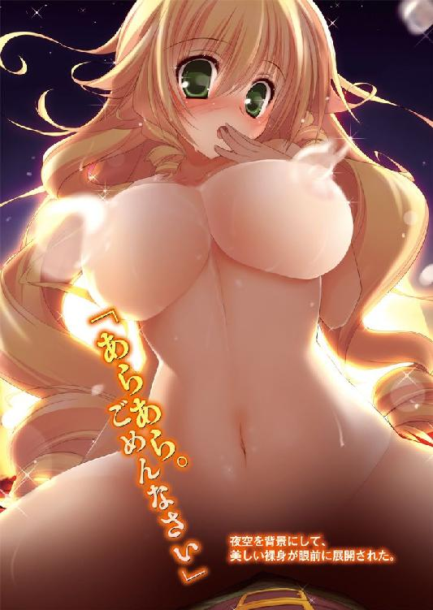
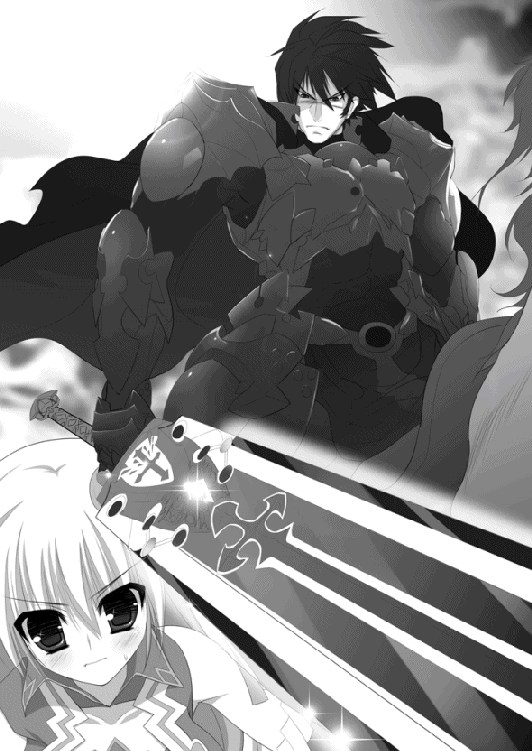

| 魔弾の王と戦姫 3 (MF文庫J) | |
| 川口 士 & よし☆ヲ | |
| メディアファクトリー (2011) | |

ＭＦ文庫Ｊ
魔弾の王と戦姫３
川口士
口絵・本文イラスト●よし☆ヲ
１ 黒騎士
ブリューヌ王国から西へ行くと、二つの王国がある。ザクスタンとアスヴァールだ。
隣国同士というのはたいてい不仲なものだが、この二国もその例に漏れない。とくにザクスタンはたびたび兵を興して、ブリューヌへの侵入を試みた。
西方国境周辺は不毛な荒野と険しい山々ばかりで実りのない土地だが、国境を外へ広げることを望まない王などいない。たとえ戦う理由が子供の喧嘩のようなものだろうと、勝てば問題ないという時代だ。
かくて西方国境では争いが絶えなかったのだが、ザクスタンは五、六年ほど前から常に敗北を強いられるようになった。
ブリューヌ最強の騎士と謳われる『黒騎士』ロランが、西方国境を守るナヴァール騎士団を率いるようになってからである。
鉛色の空の下、雑草すらまばらにしか生えていない荒野を三千の兵が進んでいる。高々と掲げられた軍旗に描かれているのは、翼を広げた白い大鷲フレスベルグ。死者の魂を安らかなる天上へ送るといわれる、ザクスタン王国の象徴だ。
彼らはザクスタン軍である。いままさに国境を突破して、ブリューヌ王国へ侵入しようとしていた。
先頭には一千の騎兵が立ち、次に二千の歩兵が続く。
その後ろで、がらがらとけたたましい音を響かせているのは数十台もの荷車だった。牛馬に引かれたその荷車には投石機と、打ち出すための巨石が積まれている。
荒野を抜けて、ザクスタン軍は左右を崖に挟まれた山道へと入った。
彼らの行く手に一騎の騎影が現れたのは、そのときだ。
兜も、甲冑も、軍靴も、風にひるがえるマントまで黒一色の装いである。黒でないのは背にしている大剣ぐらいか。よく鍛えられた長身は、他者を圧する威風に満ちていた。
「ザクスタンのネズミども、また懲りもせず我が国の大地をかじりにきたか！ 古くなったチーズならくれてやる。それを持ってこそこそと逃げ帰るがいい！」
黒騎士の朗々とした声が、荒れ果てた山道に響き渡る。ザクスタン軍からあがったのは怒りの声ではなく、畏怖混じりのささやきだった。
「あれがロランか」
こちらは三千もの大軍なのだ。その前に、ただ一騎で立ちはだかるなど馬鹿げている。
しかし、ザクスタン軍は知っていた。この騎士は文字通り一騎当千の力を持っていることを。
ここ五年ほどの間に、ザクスタンの名のある騎士や将軍が、幾人も彼の剣にかかって命を落としている。雑兵ともなるとどれほどの数にのぼるのかわからないほどだ。
ザクスタン軍は、ロランに言葉を返さなかった。先頭の騎兵部隊から一騎が前へ進み出る。三叉の槍を両手でかまえ、重厚な甲冑に身を包んだ屈強そうな男だ。
男は槍を振りかざし、無言で馬を走らせる。ロランも馬の腹を蹴りながら、背にした大剣を抜き放った。並みの人間ならば両手でなければ持てないような長大な剣を、ロランは右手だけで軽々と操る。
ふたりの距離はすさまじい速さで縮まっていき、雷鳴にも似た音が大気を震わせた。
ロランの振るった大剣はザクスタン騎兵を甲冑ごと両断し、そのまま馬までをも斬り伏せていた。
赤黒く染まった死体が地面に落ち、その上に息絶えた馬が倒れて乾いた地面に血を吸わせていく。とうてい人間業とは思えない斬撃を見せつけられて、ザクスタン軍はどよめきに包まれた。
ロランは馬を止めない。血に濡れた大剣を振りかざして敵陣に突撃する。ザクスタン軍も恐怖に潰されまいと雄叫びをあげ、戦神の名を唱えてただ一騎の敵へと襲いかかった。
「戦神テュールよ、我らに加護を！」
ザクスタン騎兵の中で、いち早くロランに接近した二騎が左右から槍を突きだす。次の瞬間、彼らの槍は何もない空間を貫き、彼らの首は鮮血の尾を引いて宙に舞っていた。
ロランが剣を振るうつど、絶叫と血しぶきがはねあがり、ザクスタン兵はひとり、またひとりと倒れていく。大地には無数の血溜まりが生まれ、その上に死体が折り重なり、さらにその上に新たな血が降り注いだ。
歩兵たちが矢の雨を浴びせたが、ロランは大剣を無造作に薙いでことごとく斬り払う。命中した二、三本も漆黒の甲冑にはね返された。
どれだけ斬ってもロランは疲れを見せず、剣の切れ味も鈍る様子はない。四人がかり、五人がかりで攻め寄せても、かすり傷ひとつ負わせられず、血煙とともにザクスタン兵の亡骸が戦場に増えていく。
不意に、崖の上で喊声があがった。鈍色の甲冑に身を包んだ騎士の一団が姿を現したのだ。ブリューヌ王国の象徴たる紅馬旗と、面甲をつけた馬の頭部を描いた軍旗が風にひるがえる。西方国境を守備するナヴァール騎士団だ。
ロランが囮であったことにいまさらながらに気づかされたザクスタン軍は、目に見えてひるんだ。ロランを討とうと兵たちは密集しており、方向転換も容易ではない。
垂直ではないにしてもかなり急な傾斜を、ナヴァール騎士団は一斉に駆け下りる。正面をロランに攻められ、側面をナヴァール騎士団に突かれてザクスタン軍は崩れた。騎兵は次々に馬首を巡らし、歩兵は背を向けて、逃げはじめる。
ロランはナヴァール騎士団と合流した。
「来るのが早すぎたかな？」
騎士団の先頭にいる、細身の男がロランに笑いかけた。ロランの右腕として、騎士団の副団長を務めるオリビエだ。ロランは言葉を返そうとして、不意に逃げていくザクスタン軍に険しい視線を向ける。
大気がうねった。大人が五、六人ほどでやっと抱えられそうな巨石が宙を飛んできて、ロランたちのそばに落下したのだ。すさまじい地響きとともに、巨石はそこにあった死体を押し潰す。土砂と肉片が勢いよくはねあがった。
「――投石機か」
驚き、いななく馬をなだめながら、ロランは不敵なつぶやきを漏らす。オリビエはさすがに焦りと呆れの入り混じった表情になった。
「こういうのは、城壁や城門にぶつけるものだと思ったがな」
新たな巨石が飛んできた。狙いを大きくそれて崖の壁面に当たったそれは、重く鈍い音を轟かせたあと、砂礫と土煙をまとって山道へと転がってくる。騎士たちは慌てて巨石を避けた。
ロランはそれには見向きもせず、大剣をかざして再び馬を走らせる。
「我が剣に続けっ！」
そこに、風を唸らせて巨石が飛んできた。ロランは避けようともせず、まっすぐ馬を走らせる。さすがの黒騎士も、おそろしい速度で打ち出された巨石の前にはなすすべなく潰されるかと思われた。
――一閃。
ロランの大剣が巨石を両断する。真っ二つに割られた巨石は衝撃の余波によって粉々になり、無数の石片が大地に飛散した。ザクスタン軍からは驚愕の叫びが、ナヴァール騎士団からは歓喜の声があがる。
戦意を喪失し、なだれをうって逃げていくザクスタン軍をロランは追った。追いつくや大剣を振るい、刃をまとった竜巻のように敵陣を斬り裂き、突き進み、蹂躙する。
ロランから逃れた兵たちも、彼に続いて突撃してきたナヴァール騎士団の刃をかわすことはかなわなかった。血と死体の海でもがきながら、ザクスタン兵は武器を放り捨て、甲冑を脱ぎ捨て、懸命に逃げ走る。
ロランが追撃をやめたのは、ザクスタン軍が国境の外まで去ったときだった。
撤収を命じて、ロランは手に持った大剣を空にかざす。柄と鍔に黄金をあしらい、刀身は鋼の色をしているが、ただの鋼ではありえない切れ味と強度を誇っている。
デュランダルというのが剣の名だ。
『不敗の剣』とも呼ばれるブリューヌ王国の宝剣であり、西方国境の守備を任される際、ロランは国王からこの剣を授かった。
貴族の生まれでもなく、まだ二十代でしかないロランに宝剣を与えることについては異論が噴出したが、国王は彼らに向かって静かに告げた。
「ならば、ロランよりも優れた騎士を我が前に連れてまいれ」
誰もが一言も返せず、黙って引き下がるしかなかったという。
事実、十三歳で騎士となってから、ロランはあらゆる試合とすべての戦で負けたことがない。剣も、槍も、馬も誰よりも巧みに操り、戦場では常に先頭に立って敵を打ち倒してきたのだ。
デュランダルの血を拭って背負うと、ロランはちいさく舌打ちをした。
なぜ、ザクスタンがこの時期に軍を進めてきたのか。
――やつらはどうにかして、我が国が乱れていることを知ったのだ。様子をさぐる意味もあって、兵を送りこんできたに違いない。
怒りを覚える。攻めてきたザクスタンにではなく、国内の貴族たちに対してだった。
――我々騎士団がブリューヌの国境を外敵から守っているときに、あいつらは王宮の奥でいったい何をしている......！
勝利に沸く騎士たちを率いて城砦へ戻ったロランを待っていたのは、王都ニースより遣わされた急使だった。
さしだされた手紙を受け取ると、ロランはその場で開いて目を通す。読み進める内に、彼の顔は見る見る険しいものへと変わっていった。
「――仔細はわかった」
手紙を折りたたんで懐へしまうと、蒼白な顔の急使にロランは低い声音で告げる。
「ただちに王都へ向かう。そうテナルディエ公爵には伝えられよ」
礼も慌しく、駆け足で去っていく急使を見送り、ロランは苛立ちを隠そうともしない顔つきで傍らのオリビエを振り返った。
「俺たちに賊討伐をせよ、とのお達しだ」
「賊？」
「ヴォルン伯爵という貴族を聞いたことはあるか？ その男が叛旗をひるがえし、ジスタート軍を国内に招きいれたらしい」
オリビエの表情は驚愕に包まれたが、すぐに彼は立ち直ると冷静な口調で尋ねる。
「俺たちが賊討伐に向かったとして、西方はどうする？」
ロランとナヴァール騎士団がいなくなれば、ザクスタンは疑惑を確信に変える。本格的に攻めてくるだろう。いまはおとなしいアスヴァールもどう動くかわからない。
「テナルディエ公爵が交渉して、二国とは一時的に休戦協定を結ぶそうだ」
「たしかに、あの男ならそれくらいのことはできるだろうが......」
オリビエは不満そうに鼻を鳴らした。
「ならば、公爵がこのヴォルン伯爵とやらを討てばいいだろうに」
ロランたちにはわかっていた。
テナルディエ公爵は、ガヌロン公爵との戦いに備えている。それ以外では、よほどの事態でないかぎり兵を動かしたくないのだということを。
「どのていど連れていく？」
オリビエはそう訊いた。急使にあのような返答をしたということは、内心はどうあれロランは行く気になっているのだ。それが団長の判断ならば、オリビエに否やはない。
「全軍だ」
ロランの返答は短い。さすがにオリビエも息を呑んだ。
「ナヴァール騎士団全軍......か？」
その問いかけこそが、オリビエの驚愕をなにより物語るものだった。
「この城砦を空にするということなんだぞ？」
「ヴォルン伯爵にはジスタート軍五千がついているらしい。その五千を率いているのは常勝不敗、一騎当千の戦姫だそうだ」
ジスタート王国が擁する七戦姫の名は、ロランもオリビエも聞いたことがあった。いずれも並外れた武勇の持ち主であり、戦場において敗北を知らぬと謳われている。
「しょせん噂とかたづけてもよいが......一日、一刻も早く確実な勝利を得るには、全軍で向かった方がいい。それに、その方がテナルディエ公も必死に交渉するだろう」
ナヴァール騎士団は総勢五千だが、並の五千ではない。彼らは、ブリューヌ王国に数ある騎士団の中でも精鋭揃いとされている。
争いの絶えない西方国境での日々が、彼らを鍛えあげた。
そして、騎士団を統率するロランは二十七歳という若さながら、王国の宝剣デュランダルを賜るほどの騎士である。
翌日、ロランは騎士たちを中庭に集めた。
まず、ティグルヴルムド＝ヴォルンがジスタート軍を国内に招きいれたこと、彼に同調する貴族が幾人かいることを説明する。
「我らはまず王都へ向かう。だが、最終的な目的地はテリトアールだ」
鞘に納まった『不敗の剣』を地面について、朗々たる声でロランは告げた。
「――陛下の敵を、殲滅する」
◎
夢を見ている。
エレオノーラ＝ヴィルターリアは自分の見ているものが夢だと、すぐに悟った。
彼女の目の前に、ひとりの美しい娘が立っていたからだ。彼女はエレンに手を差し出しながら、笑顔で言った。
「はじめまして、銀閃の戦姫。アレクサンドラ＝アルシャーヴィンだ。よろしく」
エレンが戦姫に選ばれたとき、先代の戦姫はすでにこの世にいなかった。
戦姫として必要なことを教えてくれたのが、サーシャ――アレクサンドラだった。はじめて会ったとき、肩にかかるぐらいの艶やかな黒髪と、男のような口調が印象に残った。
ふたりは性格も好みも異なりながら、不思議と気が合った。その日のうちにおたがいをサーシャ、エレンと愛称で呼び合うようになったほどだ。
どちらかに危機が迫ったときは、何を差し置いても、たとえ国王の命令があろうとはねのけて駆けつけるという誓いまでした。約束、ではない。誓いだ。
夢の中で、ふたりはどこかの小さな部屋にいる。
目の前に座っているサーシャは、竜技の濫用は自重するように言った。
「竜技は人智をはるかに超越する力だ。だから、いつ使うかは自分でしっかり見極めないと駄目だよ。ちょっと苦戦したぐらいで頼るようになったら、心も技も弱くなる」
ああ、このときの記憶かと漠然と思う。二年近く前、戦姫になって間もないころだ。
夢の中の自分は、当時言ったことをそっくりなぞった。
「だけど......自分の意志が強ければいいわけだろう？」
「自信があるならね。でも、エレン。自分で思うほど強くないのが意志というものだよ。己の意志くらい制御できて当然、なんて戯言は、意志の弱いお馬鹿さんたちに言わせておけばいい」
そのままうなずきたくなかったので、エレンは別の角度から反論を試みた。
「しかし、それによって兵をひとりでも死なせずにすむのならいいことではないか」
サーシャの瞳が、エレンをまっすぐ射抜く。
「兵は、君ではなく竜具しか見ないようになるよ」
――まったく、サーシャにはかなわないな。
後でわかったことだったが、それはサーシャ個人の考えというものでもなかった。たとえばリュドミラやソフィーヤなども、おおむね同じ考えを抱いていた。
「自分の身に危機が迫っているときは当然使うわ。使わざるを得ない相手と相対したときもね。でも、たとえば戦場で多数の敵兵に囲まれたときに使うかといったら、否ね。それは正しい力の使い方ではないわ」
リュドミラはそう断言し、ソフィーヤもいつものように穏やかな声音で語った。
「これは竜の技。竜具を手にしてはじめて行使できる戦姫の技であって、自分の技じゃない。いま使う機会を与えられているというだけ。そう考えると、頼りにしてもしすぎることはなくなるかしらね、わたくしの場合」
結局、竜具と向きあい、自身に問い続けて答えをさぐっていくしかないというのが、エレンの至った結論だった。
アリファールはただの剣ではなく、意志を持っている。エレンを戦姫と認めなくなったとき、この剣はひとりでに彼女の手を離れていくのだろう。といって、アリファールが自分の何について戦姫としての資格ありと判断したのかはわからない。
現在、エレンは彼女なりに答えを出している。
「戦場にあって堂々と挑んでくる人間は、人間の知恵と武芸で倒すべきだ」
『大気ごと薙ぎ払え』のようなきわめて高い破壊力を有する力は、同じ戦姫や鉄をも通さぬ鱗を持つ竜、陰から襲いかかってくる暗殺者などにしか使わないと決め、それを貫いている。
これが正答であるとはかぎらない。まだ戦姫になって二年ほどしか過ぎていないのだ。悩んだり、失敗したりしながら、それでもアリファールと向きあい、自問自答を続けていくしかないのだろう。
◎
早朝の空はうろこ雲が薄く広がって白く、枯れ草色の草原に吹く風はかすかな冷気を帯びている。
テリトアールの西に六千ほどの兵が集まっていた。ブリューヌ人一千とジスタート人五千からなる集団だ。二重の柵で堅固に構築された陣地の中には数百もの幕舎が設営され、中央には赤馬旗と黒竜旗が並んでひるがえっている。
二国の軍旗の下には、一際大きな幕舎がふたつあった。
通常ならばひとつは主将のもので、もうひとつが副将の幕舎というところだが、この場合はいささか違う。
ひとつは男性用、もうひとつは女性用と呼ばれていた。
女性用の幕舎の中では、三人の娘が寝起きをしている。
ブリューヌは比較的温暖な気候だが、冬の朝ともなるとかなり冷えこむ。地面には藁を敷いて冷気と湿気を防ぎ、厚手の毛布か毛皮のマントで身をくるむのが一般的だった。この藁は燃料用でもあり、日の出ているうちに乾かして使う。
三人の中で真っ先に目を覚ましたのはティッタだ。この六千の兵たちの総指揮官であるティグルヴルムド＝ヴォルンに昔から仕えている侍女で、ツインテールにした栗色の髪の下には、まだ幼さの残る顔がある。
なるべく音をたてずに、黒と白の侍女服にすばやく袖を通すと、ティッタは木桶を手にしてそっと幕舎を出た。どの幕舎も静かで、たまに聞こえるものといえば、見張りに立っている兵たちがあくびをかみ殺す声ぐらいだ。
身につけたばかりの服は冷たく、吐く息は白い。桶を地面に置いて、ティッタは簡単に身体を動かし、丁寧にほぐす。
――ティグル様は、まだ眠ってらっしゃるんだろうな。
ティッタの仕える主は、親しい相手には名前を縮めて呼ばせている。ティグルの寝顔を思い浮かべていたティッタに、突然後ろから声がかけられた。
「なんだ、もう起きたか」
飛び上がりそうになるほど驚いて、ティッタは木桶をかまえて振り返る。
白銀の髪を腰まで伸ばした娘が立っていた。青を基調とした服を着て上から銀色のマントを羽織り、腰には長剣を帯びている。髪は寝癖でやや乱れていた。
「おはよう......ございます」
頭を下げながら、ティッタは憮然とした表情にならないよう気をつけなければいけなかった。
彼女の名はエレオノーラ＝ヴィルターリア。『銀閃の風姫』の異名を持つ、ジスタート王国に七人しかいない戦姫の一人だ。ジスタート兵たちは、彼女に従ってここにいる。
一介の侍女であるティッタが会話をかわせる相手ではないのだが、彼女はこうして気さくに声をかけてくる。ティグルなどは、彼女のことをエレンと愛称で呼んでいるほどだ。
エレンはうんと鷹揚にうなずくと、ティッタの持っている桶に気づいた。
「水汲みか。いまから行くのか？」
ティッタには直後の未来が見えた気がしたが、仕方なくか細い声ではいと答える。
「では、私もいっしょに行こう」
「......ありがとうございます」
このおよそ六千の軍の中に、女性は三人しかいない。エレンとティッタ、そしてエレンの副官を務めるリムアリーシャことリムだ。彼女はまだ幕舎の中で眠っている。
立場のあるエレンとリムはともかく、ティッタには時折、声をかけてくる者がいて、そのため、なるべくひとりで行動しないようにと言われていた。
普段はティグルの側仕えであるバートランが同行してくれるのだが、早朝ともなれば彼もさすがにまだ寝ている。
――お願いすれば、バートランさんはすぐに起きてくるだろうけど。
しかし、ティッタはそれこそ小さなころから世話になっている老人に、あまり無理をさせたくなかった。
それを考えると、エレンが同行してくれるのはありがたい。なにしろ六千の兵がいるのだ。たったひとりで歩きまわるのはやはり危険だった。
ティッタとエレンは幕舎や見張りの兵たちの間を抜けて、陣を離れる。北に、細い川が流れているのだ。同じように水汲みに行き、戻ってきた兵たちとすれ違いなら、ティッタたちは黙々と草原を歩く。会話はない。
――これがティグル様だったら......。
そんな、埒もないことをティッタは考える。もしいっしょに歩いているのがティグルであればという想像は、非常に容易だった。
まだ全然寝足りないという顔のティグルが、あくびをしながらティッタの隣を歩く。顔を洗うとき、川に落っこちないでくださいねと自分は笑顔で声をかける。するとティグルは、ティッタの栗色の頭をぽんと軽く叩いておまえも気をつけろよと言ってくれるのだ。
実際、こうした会話をかわしたことはこれまでに幾度となくあり、それを思いだすだけで、ティッタは心をあたたかくすることができた。
不意に、風が吹いた。冬のはじめの冷気がティッタのうなじをくすぐり、おもわずくしゃみが出る。
「寒いのか、おまえ？」
怪訝そうなエレンの声。次いで、ティッタの肩をふわりとした感触が包んだ。エレンが自分のマントを脱いで、かけてくれたのだ。
「あ、ありがとうございます」
ややもたつきながらも礼を述べ、それからティッタはエレンを不思議そうに見やる。
「どうした？」
「あなたこそ、寒くないんですか？」
長袖に、足元までのスカートという自分に比べ、エレンは肩も脚もむき出しだ。服それ自体も、上質の生地を使っているのだろうが厚地ではない。
「私は平気だ。ジスタートの冬は、これよりずうっと寒いからな」
隣国の季節を知らないティッタとしては、はあとうなずくことぐらいしかできない。
「ところで、ティッタ、だったか。おまえに聞きたいことがある」
「......なんでしょうか」
ティッタの声は強張った。どのような質問がきても対応できるよう心に甲冑をまとう。
「おまえ、ティグルのことが好きなんだったな？」
あまりにも率直な問いかけは、心の甲冑をたやすく打ち砕いた。ティッタはおもわず顔を真っ赤にしてエレンを振り返り、木桶を持った手を震わせる。
「な、何を、突然、おっしゃるんですか......！」
「慌てることはないだろう。侍女や小姓が主人に懸想するなど、珍しい話ではない」
腰に手をあてて、エレンは狼狽するティッタを微笑ましげな目で見つめる。ティッタはしどろもどろになって抗弁した。
「あたしはティグル様にお仕えする侍女です。ティグル様のことは、それはもちろん何年も前からお慕いしていますが、それはあくまで侍女としてであって......」
「そうか。では、他にティグルを好きな者はいるか？」
さらりと流して、エレンは次の質問へと移る。追及されずにすんだことにティッタは内心でほっとしながら、首を横に振った。
「そういうお話は聞いたことがありませんし、ティグル様に頻繁に会いにきた女性というのも見たことはありません」
「あいつは私と同じ十六だろう。それなのに、浮いた話のひとつもないのか？ 領地持ちの貴族なのに？」
エレンはすこし呆れた顔になった。彼女の疑問ももっともで、十六歳といえば結婚を考えてもおかしくない年齢だ。まして、ティグルは市井の若者ではない。ヴォルン伯爵家の血を絶やさずに存続させる義務がある。
「ティグル様は真面目な方ですから」
まるで自分のことのように、ティッタは誇らしげに胸を張ってみせたが、それも長くは続かなかった。
「真面目といっても、女に興味がないわけではないだろう。私の裸を見たときなどは興味津々という様子だったぞ」
「......裸？」
「井戸で水浴びをしていたときにな」
こともなげに答えるエレンに、ティッタは呆然としてしばらく言葉を発することができなかった。幼かったころは、相手に裸身をさらすことなど気にせず川遊びなどもしたものだったが、男女というものを意識するようになってからは当然そんなことはしていない。
「そんな顔をするな。私が見せたわけでも、あいつが覗きに来たわけでもない。まあ、事故のようなものだ」
ティッタの反応がよほどおかしかったのか、笑いを堪える表情でエレンがなだめる。そんな戦姫を、栗色の髪の侍女は恨めしげな目で見た。悔しいが、かといって己の肌をティグルに見せるような、そんな蛮勇はティッタにはない。
――それに......。
エレンの身体を一瞥して、内心でため息をつく。自分の身体に魅力がないとまでは思わないが、たとえば胸の大きさや腰の細さでかなわないのはたしかだ。
気を取り直し、歩みを再開して、ふと疑問がティッタの頭をよぎった。
「――どうして、そんなことが気になるんですか？」
隣を歩くエレンが、怪訝な顔を向ける。ティッタは質問をより直接的なものにした。
「あなたは、ティグル様のことを好きなんですか？」
エレンは真顔で二つ数えるほどの時間、硬直する。丸く見開いた目でティッタをじっと見つめ、風が銀色の髪をなびかせるとようやく我に返った。
「そうだな。まあ、嫌いではない、かな......」
頬にかかった髪を指でいじりながら答えたエレンに、ティッタはやんわりと言葉の刃を押しこんだ。
「......好きなんですね？」
エレンは眉をひそめると、腕組みをして面倒くさそうな声で答える。
「嫌いでなければ好きだというのは、短絡的に過ぎるのではないか」
「それはわかっています。でも、いまのあなたには当てはまると思います」
逃げを許さないティッタの言葉に、エレンはちいさく唸った。視線をそらし、腰に差している長剣の柄に手を置くと、小動物の頭に触れるような手つきで優しく撫でる。それに応えるかのように、銀閃もささやかな風を吹きつけた。
「おまえの言うように私がティグルを好きだとしよう。それで、おまえはどうする？」
「それは......わかりません。ただ――」
くすんだ黄色が大半を占める草原を眺めながら、ティッタは言葉を続けた。何らかの意図があって追及したわけではないのだ。
「あたしはティグル様の喜ぶ顔が見たい。お幸せになってほしいというだけです」
そう口にしてみると決意が固まった。足を止めて、ティッタは再びエレンを振り返る。顔を紅潮させ、はしばみ色の両眼にきっと力をこめて言い放った。
「だから、あたしはこれからもティグル様のおそばにいますし、あなたを見ています。その、何かひどいこととか、不埒なことをしようとしたら、承知しませんから！」
ティッタとてわかっている。いまのティグルに必要なのは、平穏な日々ではない。
テナルディエ公爵と戦うための多数の兵であり、優れた指揮官であり、それらを維持するための食糧と水だ。
エレンにはそれがすべて用意できて、自分には何ひとつそろえることができない。
自分よりも、エレンの方がティグルには必要なのだ。
わかっているからこそ、言わずにはおれなかった。
エレンはびっくりしたという顔でティッタを見つめていたが、このひとつ年下の侍女の想いを読み取ると、くすりと噴き出した。
「な、何がおかしいんですか」
木桶を強く握りしめて詰め寄るティッタに、エレンは苦笑を浮かべて手を振る。
「いや、すまない。おまえの決意を茶化すつもりはなかったんだが」
ティッタの健気さと一途さが微笑ましく、またうらやましくも思えたのだが、さすがにそれは言えなかった。
「まあ安心しろ。もし私がティグルを好きだとしても、おまえの考えているようなことにはならない。あいつと私とでは、どうしようもなく釣り合わないからな」
「釣り合わない、ですか......」
ほっとしたものの、ティッタは複雑な表情になった。身勝手な思いだが、釣り合わないというのはティグルが低く見られているわけで、事実だとしてもややおもしろくない。
それを見透かしたわけでもないだろうが、エレンはティッタの顔を覗きこむ。紅の瞳が楽しそうな輝きを放った。
「なんだったら、おまえを愛妾にするよう私からティグルに言ってやろうか？ あいつは私のものだからな。誰と引き合わせるかは私次第といって差し支えない」
「け、けっこうです！」
さきほどとは違う感情で顔を真っ赤にしながら、ティッタは大声で怒鳴った。憤然としてエレンに背を向ける。からかわれているのはわかっていたが、愛妾という言葉に緊張を覚えたのも事実だった。
――ティグル様は、どうなんだろう。
そんなことを考える。自分はエレンに言ったように、ティグルのそばにいるつもりだ。
しかし、彼女やリムを見ていると、自分が役に立てていないことを痛感させられる。
もちろん、それは思い違いだ。ティッタの役目は戦場で剣を振るうことではない。身の回りの世話をして、疲れがとれるようおいしい食事とあたたかな寝床を用意するのがティッタの仕事だ。
地味で、華がなく、成果もわかりにくい。まさかいちいちティグルに感想を聞くわけにもいかない。
「もうひとつ、聞いていいか？」
「は、はいっ!?」
考えごとをしていたところにいきなり質問が飛んできて、ティッタは慌てた。
――こ、今度は何なんですか......。
緊張で心臓を激しく鼓動させながら、呼吸すら止めてエレンを見つめる。だしぬけに思いきったことを聞いてくるので、この白銀の姫は油断がならない。エレンは紅の瞳を好奇心で輝かせ、楽しそうにティッタに尋ねた。
「おまえはティグルのどんなところが好きなんだ？」
「ぜ、全部です！ 何もかもです！」
「あの寝坊癖もか？」
ティッタはあっさり言葉に詰まった。エレンはひとつ年下の侍女の心を解きほぐすように、笑って説明する。
「別におまえの想いを疑っているわけではない。ただ、興味があるんだ。ティグルのそばに長年いたおまえが、あいつにどんな美点や欠点を見出しているのか」
そして、それはエレンがティグルに見出したものと同じなのか、違うのか。
「お優しいところとか......」
「他には？」
問われて、ティッタは足を止め、うろこ雲の広がる空を見上げた。
「......バートランさんの受け売りですが」
すこしずつ考え、すこしずつ形にしながらティッタは言葉を紡いだ。
「ティグル様は、あの広いアルサスをおひとりで治めていらっしゃいます」
広い、という言葉にエレンは怪訝な顔をしたが、すぐに納得した。
アルサスの中心都市であるセレスタ。そこから外にほとんど出たこともないような侍女の目で見れば、アルサスは途方もなく広いのだろう。
「ご領主となられたときも、ティグル様のご様子はいつもと変わりありませんでした。ぼんやりしているって悪く言われた方もたくさんいましたが、怒るようなことはなさりませんでした。でも、それはすごいことだと思うんです」
一呼吸。エレンは黙ってうなずき、続きを促した。
「お父様を亡くされ、葬儀に追われ、休む暇もなくご領主になって、多くの方に手伝っていただいたとはいっても、寝ないで仕事をされる日が続いて......。でも、ティグル様はそれまでと同じように振舞っていらしたんです。そのおかげで、あたしは安心して自分の仕事をすることができました」
伯爵になって領地を継いだときのティグルは十四歳。そろそろ一人前扱いされてもおかしくない年齢だが、父を失った悲しみからすぐに立ち直ったわけでもなく、ティグルなりの苦しみや悩み、葛藤があったのは間違いない。
それでも、ティグルのティッタへの接し方は変わらなかった。バートランや他の者たちに対してもだ。
「それがわかったとき、あたしは少しでもティグル様のお役に立ちたいと思いました」
「――なるほど」
ティッタの言葉に、エレンは満足したという顔つきで大きくうなずいた。白銀の髪が風になびく。
――たしかに、あいつにはそういうところがある。柔軟とでもいうのかな。
状況に流されず、かといって我が強すぎるということもない。
――とはいえ、女に対してはそうでもなさそうだが。向き不向きがあるということか。
ティッタの話や、自分やリムへの反応を考えると間違いないだろう。知らず、苦笑が浮かんだ。
「あ、あの......」
遠慮がちなティッタの声で、エレンは我に返った。侍女のはしばみ色の瞳に、警戒するような輝きがある。そういえば、自分はなるほど、以外の反応をしていなかった。
上機嫌で、エレンはティッタの肩を叩く。
「礼を言うぞ。ますますあいつが気に入った」
ショックを受けたティッタの顔が微笑ましくて、エレンはもう一度笑った。
「安心するといい。ジスタートへ帰るときはおまえもいっしょに引き取ってやる」
リムアリーシャことリムが目を覚ましたのは、エレンが幕舎を出ていこうとしたときだった。彼女は当然同行しようとしたのだが、主に拒絶されてしまったのである。
仕方なく、起床予定の刻限まで毛布に長身をくるんでいた。
「暗殺者に狙われたばかりではありませんか」
そう言いたかったのだが、だからこそ自分を同行させないのだということがわかっているので、言えなかった。先日、暗殺者集団に襲われた際、リムは不覚をとって死にかけたのだ。
隙間から忍び込んできた早朝の冷気に身震いしたものの、用意されていた水桶を使ってすばやく洗顔をすませ、艶のない金色の髪を左側で結んで流す。服を着替えた。エレンと同じ青を基調としたもので、その上に防寒対策として厚手の外套を羽織る。
だいじょうぶだと自分に言い聞かせる。エレンの護衛は自分だけではない。兵たちが離れたところから見守っているはずだ。それに、戦姫に与えられる竜具の存在もある。アリファールならば、はるか彼方から毒矢が飛来しようともエレンを守るだろう。
お気に入りの、てのひらに収まる大きさの熊のぬいぐるみを握りしめて心を鎮めると、剣を腰に吊るしてリムは幕舎を出た。そばにいた兵士にエレンの所在を尋ねると、まだ戻られておりませんという答えが返ってくる。
――どうしましょうか。
自問する。あまり迷わなかった。
現在、リムが補佐する相手はエレン以外にもうひとりいる。彼女の知るかぎり、希代の寝ぼすけだった。誰かが起こさなければ、太陽が頂に達しても眠り続けるだろう男だ。それはこのような場でも変わらず、リムは一度ならず、彼を叱ったことがあった。
――エレオノーラ様が戻られる前に起こしておきましょう。
風にひるがえる二つの軍旗の下の、男性用と呼ばれている幕舎へ向かう。見張りの兵士に訊いた。
「ティグルヴルムド卿は、もう起きられていますか？」
予想通り、返事は否定だった。起こしてきますと告げ、幕舎の中に入る。
広い幕舎の中で、くすんだ赤い髪の若者が毛布にくるまり、静かな寝息をたてていた。そのそばには黒い弓がたてかけられてある。この幕舎には若者の他に側仕えの老人がいたはずだが、姿がない。もう起きて外へ出たのだろう。
「寝相はいいのですよね。本当に......」
呆れる声の中に、やや好意的な響きがある。リムは静かに歩み寄ると、若者――ティグルの前に膝をついた。肩に手をかけて軽く揺する。
「起きてください、ティグルヴルムド卿。もう朝ですよ」
反応はない。そのていどで起きてたまるかといわんばかりの熟睡ぶりである。
「兵たちももう朝食の用意をはじめています。一軍の将として寝坊するというのはいかがなものかと。兵への示しというものをどう考えておられるのですか」
この台詞が、彼女がティグルを叱るときの常套句である。さきほどよりも強く揺すってみるが、やはり反応はない。
――以前、すぐに起きたのは剣を口にねじこんだときでしたが。
そのときのティグルは捕虜であり、リムは彼に強い敵愾心を抱いていた。さすがにいまではやれない。
――それがいまでは......。短い間にずいぶんと関係が変わったものです。
過去と現在を比較して、奇妙な感慨にふける。
指揮官としてのティグルを補佐し、あるいは教師としてさまざまなことを教える。いまの立場をけっこう気に入っていることにリムは気づき、かすかな驚きを覚えた。
「本当に、不思議なものです」
微笑をこぼし、ティグルの肩に置いていた手をくすんだ赤い髪へと持っていく。優しく撫でた。ティグルは目を覚ましこそしなかったが、むず痒そうに表情を歪め、手を頭へ持っていく。
二人の手が重なった。
リムはおもわず息を呑み、二つの手を見つめる。手から伝わってくるぬくもりが、彼女の頬をうっすらと赤く染めた。そのままの姿勢で十と少しを数えるほどの時間が過ぎる。
「起きろ、ティグル。この私が直々に起こしに来てやったぞ」
幕舎の入り口をめくりあげ、ずかずかとエレンと、そしてティッタが入ってきた。ティグルの寝顔に見入っていたリムは驚きのあまり身をすくませ、ぎょっとして後ろを振り返る。銀色の髪の主と目が合った。
「リムではないか。どうしてここにいる？」
ティグルを起こしに来たと言えばすむことなのだが、羞恥が先に立ち、たったそれだけの台詞が出てこない。無愛想な表情を崩してうろたえるリムを不思議そうに眺めやり、エレンはこちらへ歩いてくる。目を細めた。
「おまえ、いくらこいつが起きないからといって、髪を引っつかんでまで......」
「ち、違います！」
激しい感情の揺れを隠そうとして、つい大声を出す。その拍子に髪を数本引き抜いてしまい、さすがにティグルも目を覚ました。
「ティグル様、だいじょうぶですか！」
おもわぬ事態に混乱してもいたのだろう、ティッタが急いで駆けつける。ティグルの様子をたしかめながら、彼女は一瞬だけリムに非難めいた視線をぶつけた。
リムとしては申し訳なさといたたまれなさからいますぐにでも立ち去りたかったのだが、そんな真似は矜持が許さない。起きぬけのティグルに深く頭を下げて非礼を詫びた。
「別にいいけど、俺が禿げないていどにしてくれ」
というのが欠伸混じりのティグルの返答であり、それによってリムはようやく救われた気持ちになったのだった。
◎
幕舎の中で、ひとりの若者と三人の娘が地図を囲んでいる。
エレンとリム、ティッタ、そしてティグルの四人だ。朝食をとりながら、彼らは会議を行っていた。ティッタだけは、食事の世話をするためにここにいるのだが。
「我々がこのオーランジュ平原に陣を据えて四日になりますが、何かありましたか？」
会議はいつも、リムのこの第一声ではじまる。朝の騒動からは完全に立ち直り、愛想のない表情と感情をこめない声でティグルたちを見回した。年齢こそ十九と若いが、政務においても武芸においてもたしかな力量の持ち主だ。
「困ったことは多いけど、深刻なものはないよ」
ティグルはのんびりとした態度で答えた。現在十六歳。短めのくすんだ赤い髪に、黒い瞳。顔立ちは地味ながら、穏和な笑みがよく似合っている。着ているのはありふれた麻織りの服で、履いているのも履きふるした革靴だ。そこらの村人と変わらない。
この平原にいる六千の軍の総指揮官の、これがいつもの格好だった。
「喧嘩の件数が増える一方、食糧や燃料は減る一方。そんなところかな」
「おまえの借金が増える一方、というのも忘れるなよ」
スープをすすりながらすました顔でエレンがつけくわえる。
「私たちが食べているこれだって、ただじゃないんだ」
スープは塩漬けの魚とムール貝に二、三種類の香草を煮込んだものだ。魚はそのままでは食べられないほど塩分が強いが、大鍋で煮込むとほどよい味になる。
幕舎の中に並べられている朝食は、このスープ以外にとにかく固いパンとチーズ、葡萄酒といったものだ。兵士たちの食事もおおむね同じで、違いといえばスープの中身ぐらいだろう。
食糧は、近隣の町や都市から買い求めている。それも、ジスタート軍は一兵たりとも向かわず、ブリューヌ兵がジスタート金貨の入った袋を抱えて行くのだ。
「ここはテリトアール領内で、オージェ子爵の威光が届いている。頼めば、食糧や燃料を供出してくれるだろう。だが、摩擦を起こして無用に敵をつくりたくはない」
そういう考えからだった。
ユーグ＝オージェ子爵はティグルに協力してくれている数少ないブリューヌ貴族だ。親しい者に声をかけて兵を集め、さらに自身も兵を出してくれた。おかげで、一千ものブリューヌ兵がそろったのだ。
「ところで、リム」
空にしたスープを地面に置いて、エレンは無表情の部下を軽く睨む。
「さっき、我々としか言わなかったな。どうして正式名称を言わない？」
リムはかすかに眉をひそめる。見慣れている者でなければわからないほど微細な変化だが、エレンと、そしてティグルは気づいた。
「我々、でもとくに問題はないと思いますが......」
「いいや。こういうのはしっかりしないとな。さあ言ってみろ。我々『銀の流星軍』と」
楽しげな笑みを浮かべてエレンが促す。さすがにこの段階で、リムもティグルも彼女の意図に気づいた。食後の腹ごなしに、からかっているのだ。
――銀の流星軍、ねえ......。
それが、ティグルが率いているこの軍の名称だった。ずいぶん大仰だと思う。リムが言いたがらなかったのも理解できる。
発端は数日前。オージェ子爵に、この軍はどう呼ぶのかと聞かれたことだった。
「この軍の中核は、ティグルヴルムド卿とエレオノーラ様です。『アルサス・ライトメリッツ同盟軍』でいいのでは」
そうリムが提案し、ティグルも自分なりに考えてみた。
「オージェ子爵や、味方になってくれた貴族を蔑ろにはできない。『ブリューヌ諸侯およびライトメリッツ連合軍』でどうだろう」
「なんだ、その意気のまるであがらない名前は。第一、長すぎる。そんなもの兵が喜んで使うとでも思うのか」
呆れ果てた顔で、大げさにため息をこぼしながらエレンはふたりの案を却下した。
「じゃあ、エレンには何か案があるのか」
つい、ティグルはそう聞いてしまい、エレンはよくぞ聞いてくれたと言わんばかりの自信に満ちた笑顔でうなずくと、その名称を口にしたのである。
反対意見はあったものの、代案がなかったので『銀の流星軍』に決まってしまい、あまり気にしないティグルはともかく、リムなどは最後まで不満そうだった。
「ぎ、銀の、りゅ、りゅう......」
リムは表情こそ変えなかったものの、うつむきがちにちいさな声を絞り出す。さすがにティグルはかわいそうになり、助け舟を出すことにした。
「さっきの食糧と燃料の話だけど、あとどれぐらいもつ？」
リムはほっとした顔になり、ティグルに礼代わりの会釈を返しながら答える。エレンはティグルの意図に気づいて口をとがらせたものの、何も言わずに耳を傾けた。
「現在、我が軍が備えているものだけならば二十日分。金銭には余裕があるので、無駄遣いをせず、近隣の町が今後も売ってくれるなら冬を越すことは可能です。ただし、不測の事態が起きればそのかぎりではありません」
「不測の事態って？」
「たとえば、どこかの貴族が二千から三千の兵を率いて味方になったりすることです。武器も食糧も用意せず」
そうなったときのことを想像して、ティグルの表情は暗くなった。数だけを考えれば味方が増えるのはありがたいが、その分食糧などの消費も増えるということだ。
「また、食糧や燃料の流通をテナルディエ公爵が妨害すれば、我々はそれだけで苦境に陥るでしょう」
「テナルディエ公爵ならそれくらい可能だろうし、やりかねないな」
「余裕があるいまのうちに、対策を考えておくべきですね」
リムがそう締めくくったとき、ひとりの若い騎士が幕舎に入ってきた。
甲冑に包まれた長身の上に整った顔を乗せているが、顔の上には一本の毛髪もない。しかし、彼はそのことをむしろ、誇りにすら思っているようだった。堂々とした態度と精悍さにあふれた顔つきがそれを物語っている。
「ティグルヴルムド卿。また揉め事です」
どこか楽しそうな口調で、騎士はティグルに告げた。
「またか。ルーリック、今度は何だ？」
騎士――ルーリックとは対照的にうんざりした顔になりながらも、食事を中断してティグルは立ちあがった。矢筒を腰に提げ、たてかけていた黒弓をつかむ。
「戻ってきたら食べるから、そのままにしておいてくれないか」
「でも、スープは冷めてしまいます」
「おまえの作ってくれたものなら、冷めていてもうまいさ」
困った顔で見上げるティッタに笑顔で答えると、ティグルはエレンとリムを見る。
「ちょっと行ってくる」
「ああ。もう慣れただろうから、さっさとすませてこい」
気楽な調子で手を振るエレンの隣で、リムは無言で立ち上がろうとする。
「――リム」
呼びかけだけで、エレンはリムの行動を制した。
ティグルがルーリックとともに幕舎を出ると、エレンはスープの魚を頬張りながらしかめっ面でリムを見る。
「おまえ、最近ティグルに甘くないか？」
「そうでしょうか」
「以前のおまえなら、揉め事の仲裁に失敗したら食事抜きぐらいは言っただろうに」
「ここは戦場です。いつ戦が起きるかもわからないのに、そんなことは言いません」
主の言葉にそっけなく答えてリムは葡萄酒に口をつける。
「......やっぱり、何かあったんじゃないか？ そもそも胸を揉んだり吸ったりしたような相手をおまえが気遣うというのが――」
リムはむせた。葡萄酒を噴き出しこそしなかったものの、何度も咳きこみながらエレンを軽く睨みつける。
「そういうのは、私こそが申しあげたいことです。エレオノーラ様はティグルヴルムド卿に対して少々無防備すぎます。水浴びのときや、稽古で押し倒されたときもそうですが、タトラ山でなんて――」
そこまで言ったところでリムは視線を感じて言葉を止めた。食器を抱えたティッタが、顔を青ざめさせながらも熱を帯びた視線をリムに送って続きを促している。
リムは恥ずかしがるように目を伏せると、残った葡萄酒を一息に煽り、空になった陶杯を床に置いて立ち上がった。
「......見回りに行ってまいります」
「さっきも言ったが、ティグルを助けるようなことはするなよ？」
スープをすすりながら、それだけは譲れないというようにはっきりとした口調でエレンは応じる。
「あいつには経験が足りない。六千の兵という規模で起きる揉め事は、ちょうどいい。失敗しても、私やおまえがなんとかできるしな」
「失敗してもかまわないと？」
リムの問いかけに、エレンは顔をあげて物騒にも見える笑みを浮かべた。
「失敗や挫折なくして成長なぞあるか。私やおまえだって、そうだっただろう」
愛想のない表情を崩してかすかな苦笑を浮かべ、リムは一礼すると幕舎を出た。
エレンは手にしていたスープを空にすると、ティッタに突きだす。それから、栗色の髪の侍女の迷うような顔に気づいた。
「あいつのために言っておくが、水汲みのときに話したあれと似たようなものだ。どの場合も下心はなかったと思うぞ......たぶん」
「そ、そうですか。そうですよね」
エレンの言葉にうなずきはしたものの、ティッタの顔は半信半疑というところだ。
「どうしても気になるのなら、ティグルに聞いてみるといい」
――これ以上の対応はティグルに任せよう。うん、きっといい経験になる。
さりげなく押しつけて、エレンは陶杯の中の葡萄酒に静かに口をつけた。
「今回の喧嘩の原因は？」
ルーリックとともに幕舎を出たティグルは、黒弓を握りしめ、しかめっ面にならないよう気をつけながら尋ねた。
幕舎を出れば兵たちの目がある。一軍の将として、どれだけ機嫌が悪かろうと感情を露にするわけにはいかなかった。
陣地内では幾筋もの炊事の煙が立ち昇り、白みがかった朝の空へと消えている。
「雲です」
ティグルの隣を歩きながら、ルーリックは空を指さした。ティグルも首を傾けてうろこ雲の広がる空を見上げる。
「私もはじめて知ったのですが......ブリューヌ人はあの雲を、バヤールとやらいう神馬の蹄の跡だと考えているそうですな」
「そうだけど、それがどうかしたのか？」
ブリューヌで生まれ育った者にとってはあまりにも当然のことを言われ、ティグルはきょとんとした顔になる。
バヤールは、ブリューヌ王国の軍旗にも描かれている魔法の馬だ。
ブリューヌを建国した始祖シャルルは、黒いたてがみと赤い体躯を持つこの魔法の馬に跨り、国内のいかなる地であろうと瞬く間に訪れたといわれている。始祖シャルルの死後は、バヤールは王の魂を乗せて天を駆けているのだと伝えられていた。
「我が国では、あの雲はジルニトラの通り過ぎた跡ということになっております」
なるほどとティグルは納得した。
漆黒の竜ジルニトラは、ジスタート王国をつくりあげたに等しい存在だ。なんといっても建国した王が、自身をジルニトラの化身であると言い放ったのだから。
「それで、どちらが正しいかで言い争いになったわけか。掴みあい、殴りあいにまで発展したのか？」
「いまのところはまだ。ですが、いつそうなってもおかしくない雰囲気ですな」
ルーリックの言葉には、ティグルの反応をおもしろがっている節がある。事実、ティグルがどうするかを、この禿頭の騎士は強い興味でもって見届けようとしていた。
本来なら総指揮官が対処するべきことではないとわかっていながら、わざわざ教えにきた理由はそれだ。もしもティグルが総指揮官という現在の立場に慣れていたら、ルーリックに任せて動かなかっただろう。
兵同士の諍いというのは、言ってしまえばそのていどのことなのだ。
ほどなく揉め事の現場が見えてきた。十人近いジスタート兵とブリューヌ兵が、一方は目をつり上げ、もう一方は歯をむき出しにして睨みあっている。ルーリックの言ったようにまだ乱闘にこそ至っていないが、一触即発の雰囲気となっていた。
ティグルは足を止めると、矢筒から一本の矢を取りだして弓につがえる。
「足でも狙って射るのですか？」
物騒な問いかけをルーリックはした。実際、矢を射放って止めるとなると、少々荒っぽい方法しか思い浮かばない。彼らの足元を狙ってもたいした威嚇にはならないだろうし、かといって視線の高さで矢を放てば、騒ぎとは関係ない兵たちに当たる可能性がある。
「これから戦うのに、怪我人を出せるわけがないだろう」
「もっともですが――」
そこまで言いかけて、ルーリックは興味深げにティグルの手にある矢を覗きこんだ。
「何ですか、それは？」
「笛鳴矢というものらしい。オージェ子爵からいただいたんだ」
その矢は、通常のものとは若干形が違っていた。鏃のすぐ下に、小さな穴の開いた楕円形の木の実のようなものがついている。
ティグルは空に向かって弓をかまえると、弦を引き絞って無造作に放った。ひぃん、と鳥の鳴き声にも似た、不思議な風切り音が鳴り響く。
まっすぐ飛んだ矢は、はるか上空で小さな弧を描いて落下した。突然の奇妙な音に呆然と立ちすくむ兵たちの目の前を通過して、地面に突き立つ。
「――何の騒ぎだ」
兵たちの顔から激情が消えたのを確認してから、ティグルはやや居丈高な調子で声をかける。血の気の多い連中をおさえるには、はじめから強気でいく必要があった。こういったことの処理は、アルサスでもよくあったことなので慣れている。
ティグルの顔を見た兵たちはばつの悪そうな顔をしながらも、口々に自分たちの主張を訴えた。さきほどルーリックから聞いた通りの内容だ。
「つまり、あの雲がバヤールの跡かジルニトラの跡か、ということなんだな？ おまえたちの口論の原因は」
兵たちは神妙な顔でうなずき、ティグルの反応を窺う。ここにいる兵たちの誰よりも若い総指揮官は、何と答えるだろうか。
「両方だ」
「はあ」
ティグルの言葉に、兵たちは気の抜けた顔で応じた。ブリューヌ兵が釈然としない顔つきで首をひねる。
「......それでよろしいのですか？」
「いいも何も、バヤールもジルニトラも、雲の上を我がものとして何者をも寄せつけなかったなんて話は聞いたことがない。ならば、どちらもいると考えるのが妥当だ」
このあたりの台詞は、半ば勢いで言ったものだった。ティグルはブリューヌの神話についてならば人並みに知っているが、ジスタートの神話はあまり詳しくない。教師役といっていいリムも、神話の細かな部分については後回しにしていた。
「異論がある者はバヤールなりジルニトラなりに会って、真実を訊いてこい。それもいやなら、俺がおまえたちの相手をするが......」
兵たちは地面に視線を注ぐ。矢がまっすぐ突き刺さっていた。
「いえ、異論はありません」
先に引いたのはジスタート兵たちだった。彼らはティグルの弓の技量を知っている。加えて、ティグルのそばで目を光らせているルーリックの存在もあった。
「彼らはああ言っているが、おまえたちはどうする」
ティグルの視線を受けて、ブリューヌ兵たちも頭を下げて引き下がる。彼らは弓矢というものを蔑んでいたが、音と、ティグルの態度に怯んだのだった。
「よし。それから騒ぎを起こした罰として、今日と明日、おまえたちに配給する食糧と燃料は減らす。以上だ」
処分としては軽いものだ。反対や不満の声はあがらなかった。
兵たちが散って、穏やかな雰囲気が戻ってきたところでティグルは矢を拾うと、踵を返す。隣を歩くルーリックが賞賛の言葉をささやいた。
「お見事でした」
ティグルの返事はため息混じりの苦笑だった。
「後ろから睨みをきかせてくれていただろう？ ありがとう」
「感謝の言葉をいただけて恐縮ですが、このていどのことで言う必要はありません」
「ささいなことであっても、礼はしっかり言うべきだと思うけど」
「もっともですが、ありがたみが減ります。女性に愛していると言うのと同じで、ここぞというときにこそ用いて、濫用は慎むべきかと」
ルーリックの言葉に、ティグルは皮肉っぽく口の端を吊り上げた。
「もっとわかりやすいたとえで頼む」
現在ブリューヌ国内において、この『銀の流星軍』ほどいびつな構成の軍隊もないだろう。異国の軍が八割以上を占めており、総指揮官は無名の、しかもたかだか十六歳の若者なのだ。
摩擦や諍いが起こるのは覚悟していたが、これほどとは思わなかったというのがティグルの正直な感想だった。
オーランジュ平原に陣地を構築して以降、起こった騒ぎの数はティグルが知っているだけでも十を越える。実際はもっと多いのだろう。
ブリューヌとジスタートは言語にそれほど違いはなく、信仰している神々もほとんど同じである。それがよい方向に働いてくれればという淡い期待があったのだが、結果としてはその細かな差異が対立の火種になっていた。
アルサスやテリトアールの者たちはそれほどわだかまりもなくつきあっているのだが、それ以外の兵たちにしてみれば、ジスタート軍はよそ者だ。
にもかかわらず数が多いので、彼らが軍の中核であるかのように見える。それがおもしろくない。
オージェ子爵なども両者の間をとりもつよう動いてくれてはいるのだが、六千もの大所帯とあってはどうしても目の届かない部分が出てくる。
「いっそ、早く戦になってほしいというところですか」
苦笑混じりのルーリックの言葉を、ティグルは肩をすくめて聞き流した。
ここから西へ三日ほども進めばテナルディエ公爵の治めるネメタクムに入るのだが、ティグルはここから動かなかった。正確には、動けなかった。
理由はいくつかあるが、王都ニースへ向かったマスハスから、いまだに何の連絡もないというのが最大のものである。
テナルディエ公爵と戦う前に、国王に断っておく必要がある。私戦の許可がもらえれば理想的だが、そこまでは期待していない。とにかく、ブリューヌ国内にジスタート軍を招きいれたことについて、理由をはっきりさせておかなければならなかった。
ティグルが己の正義を大声で主張し、それが受け入れられるのであれば話は違ってくるのだろうが、あいにくそれだけの影響力はない。
だから、国王の承認が必要なのだ。ブリューヌの貴族として。
幕舎が見えてきたところで、ティグルは後ろからの声に呼び止められた。
――今度は何の揉め事だ？
くすんだ赤い髪を乱暴にかきまわして、ティグルは声のした方向を振り返る。ひとりの若いブリューヌ兵が立っていた。緊張した顔つきで、彼は口を開く。
「グレアスト侯爵と名のる方が参られました。伯爵閣下にお話があると」
「グレアスト......？」
ティグルは首をひねった。聞いたことのない名前だ。だが、相手が侯爵だというならば丁重に対応しなければならない。
「そのグレアスト侯爵という方は、おひとりで来られたのか？ 供の者などは？」
ひとりで、という答えにティグルはますますもって怪しいと思った。
「......ひとまず、すぐに行くと伝えてくれ。それと......そうだな、ここから二百アルシンほど離れたところにテーブルと椅子を用意してほしい」
味方かどうかわからない。うかつに陣地の中へ招き入れることはできなかった。
指示を下した兵が足早に駆けていくのを横目に、ティグルはルーリックを伴ったままオージェ子爵の幕舎へ向かう。見張りの兵はすぐに中へと通してくれた。
薄明るい幕舎の中、ゆったりとした服を着た老子爵は、静かに麦粥をすすっている。ティグルを見ると、好々爺然とした笑みを浮かべた。
「ちと行儀が悪いが、この季節は少し放っておくとすぐに冷めてしまうのでな。勘弁してもらえるかな」
「いえ、こちらこそ食事中に失礼しました」
ティグルも笑顔で言葉を返す。その半歩後ろに立つルーリックは無言のまま会釈した。オージェの前に膝をついて、ティグルはさっそくグレアスト侯爵のことを説明する。老子爵の顔から笑みが消えた。
「グレアストじゃと？」
「ご存じなのですか」
「ガヌロン公爵の片腕ともいえる男じゃ。以前に何度かお会いしたことがあるが......」
顔に刻まれた皺を増やしてオージェは記憶をさぐる。すぐに思いだし、手に持っていた匙で麦粥の皿を打った。
「そうじゃ。おぬしが持ってきてくれたマスハスの手紙。アルサスに向かっていたガヌロン公の軍、その指揮官がグレアスト侯爵だと書いてあった」
さすがにティグルも顔色を変える。マスハスが止めてくれなければ、テナルディエ軍よりも先にアルサスを襲っていただろう男だ。自分に友好的な話を持ってきたとはとうてい思えない。
「どうする？」
「とりあえず話を聞いてみようと思います。たったひとりで来たそうなので、面倒なこともないかと」
「ならば、わしも行こう。そのグレアスト侯爵が本物かどうかを見極めんとな」
お願いしますとティグルは頭を下げた。
◎
空気が不自然なほどに乾いた、薄暗い部屋だった。
灯りのない闇の中で、黒いローブに身を包んだ小柄な老人が書物をめくっている。ふつうの人間ならば、いかに目を凝らそうと一文字も読めるはずのない状況でだ。
ここはテナルディエ公爵の屋敷にある一室だった。
老人の名はドレカヴァクといい、数年前から公爵家に占い師として仕えている。この占い師という響きが表向きのものであることは、老人と、雇い主であるテナルディエ公爵しか知らないことだった。
ドレカヴァクは無言で書物のページをめくっていたのだが、不意に、ページをつまんだ皺だらけの細い指を止めた。この部屋に何者かが近づいてくることに気づいたのだ。
挨拶もなしに扉が開く。戸口に、ひとりの若者が立っていた。
「やあ、ひさしぶり」
陽気な声で手をあげ、若者は真っ暗な室内に戸惑う様子もなく足を踏みいれる。中肉中背で、襟や袖に毛皮をあしらった厚手の服をまとっていた。短い黒髪には緑色の布を巻いて、肩のあたりに垂らしている。
動きはゆったりとして、足音ひとつたてない。どこかつかみどころのない印象をあたえる男だった。
「来たか。ヴォジャノーイ」
ドレカヴァクは背を向けたまま、若者に呼びかけた。さっそく用件を告げる。
「モルザイム平原を知っておるか。ここから北東へ行ったアルサスにあるのだが」
「ああ、ここの坊ちゃんが惨めに負けたところだろう」
笑顔を微塵も崩さず、ヴォジャノーイという名の男は答えた。
「そこへ行ってもらいたい」
書物をめくる手の動きを再開させながら、ドレカヴァクは言葉を続ける。
「モルザイムの沼に飛竜が落ちた。その亡骸を拾ってきてほしいのだ。おまえなら、沼の中を歩きまわることなど造作もなかろう」
「坊ちゃんの死体は？ あの子も沼に落ちたんじゃなかったかい」
「それはどうでもいい」
黒いローブの老人の声音は、まるで路傍の石ころについて語るようだった。
「わしが望むのは飛竜の亡骸のみじゃ」
「へえ。でも、どうして急に？ いままでは、そんなものに興味を示したことなんてなかったじゃないか」
頭に巻いた緑色の布をもてあそびながら、ヴォジャノーイは疑問を投げかける。
「気になることがあっての」
ドレカヴァクは考えこむような、陰鬱な口調で続けた。
「わしとしたことが、戦姫という強い光に目を眩まされて、それ以外の輝きを見落としたのやもしれん」
ヴォジャノーイは言葉の続きを待ったが、ドレカヴァクの口からは、それ以上のことは何も発されなかった。若者は追求するようなことはせず、肩をすくめる。
「戦姫といえば......いま、この国に銀閃の主がいるけどさ。あれ、どうするんだい？」
若者の双眸を危険な煌きが彩った。獲物を見つけた獣のそれに似ている。ドレカヴァクは背を向けていたが、若者の気配の変化を正確に察知した。
「あれには他の者があたる。おまえの出る幕は残念ながらありはせんよ」
「誰が？ この国に、戦姫に対抗できそうな人間なんていたかな」
「黒騎士ロランが向かう。『不敗の剣』を持ってな」
ドレカヴァクの答えに、ヴォジャノーイは意外そうな声をあげた。
「おもいきったことをするもんだねえ」
「あれ以外ではどうにもならん。竜具に対抗するべく造られたものの中で、あの『不敗の剣』は唯一といってよい成功作じゃからの。この国の神話では、神の遣わした精霊が始祖に授けたとなっているが......無知とはかわいらしいものじゃ」
声をくぐもらせて笑う老人の背中を見て、ヴォジャノーイは再度、肩をすくめる。
「それで......沼に潜る、だっけ？ やってもいいけど、ただ働きはいやだね」
その返答を予期していたかのように、ドレカヴァクの手が書物から離れ、部屋の隅を指さした。そこには、竜を調達するためという理由で老人がテナルディエ公爵から受け取った金貨の袋が、無造作に投げ捨てられている。
「持っていけ」
その言葉にヴォジャノーイは顔をほころばせた。軽い足取りで隅へと歩いていき、両手を袋へと突っこんでわしづかみにした金貨の山を取りだす。
それらを愛おしそうにかかげると、口を開けて流しこんだ。ざらざらと擦れる音をたてて、大量の金貨が若者の喉の奥へと呑みこまれていく。
そうしてすべての金貨を呑みこむと、ヴォジャノーイは大仰な仕草でドレカヴァクに一礼した。
「毎度あり」
２ ガヌロンの陰謀
ティグルはエレンとオージェ子爵を伴って陣営を離れた。
エレンを同行させることは迷ったものの、ティグルとジスタート軍との結びつきの強さを誇示する必要があったし、ジスタート軍に不利な話をするかもしれないという疑惑を消しておくためもあり、いっしょに来てもらうことにしたのだ。
「安心しろ。私は必要最低限のことしか言わずに黙っておくから」
念のため、リムにはいつでも兵を動かせるようにと命じてある。グレアスト侯爵の目的がわからない以上、どれだけ備えてもやりすぎということはなかった。
会談の場には、ひとりの若者と一頭の馬の姿があった。馬は手綱と鞍を外して休ませてある。
「間違いない。グレアスト侯爵じゃ」
オージェがティグルにぼそりと囁いた。周囲は起伏のない草原が広がり、何者かが潜んでいるような気配もない。
ティグルは前に進み出て、丁重に挨拶をした。
「はじめまして、グレアスト侯爵。ヴォルン家の当主ティグルヴルムドと申します」
「はじめてお会いする、伯爵。カロン＝アンクティル＝グレアストだ」
グレアスト侯爵は二十代後半の男だった。貴公子然とした顔だちで、灰色の髪も丁寧に整えられている。金の刺繍が入った豪奢な絹服が、長身に似合っていた。
口元には柔和な笑みを浮かべており、友好の使者だといわれたら信じてしまいそうな雰囲気を帯びている。
グレアストはティグルの左右にいる二人に視線を走らせ、オージェの顔を見ると意地の悪そうな笑みをひらめかせた。
「オージェ子爵ではないか。隠居したかと思っていたが、まだまだ元気そうだな」
「あいにく、気楽に隠居できるほど世の中が平穏ではないもので」
「せっかく健康なまま老いることができたのだ。無理はせぬのが利口だろう」
オージェの皮肉をグレアストは鼻で笑い、次いでエレンに顔を向ける。
「ジスタートの戦姫が一人、エレオノーラ＝ヴィルターリアだ」
簡潔に名のって会釈したエレンに、グレアストはほうと感嘆の声をあげた。
「ディナントで我が軍を敗走させた一騎当千の戦姫。どれほどの女傑かと思えば、剣よりも絹のドレスこそが似合いそうな、可憐な乙女ではありませんか」
相手が戦姫とあってか、グレアストはわざわざエレンの前へと歩を進める。その態度はティグルたちに対するよりもはるかに丁寧だ。
だが、エレンは目の前の侯爵が自分に向ける視線に、不快なものを感じた。熱っぽく、そして絡みつくようにエレンの全身を這いまわっている。
グレアストが右手を差し出した。礼儀上はねのけるわけにもいかず、エレンは灰色の髪の侯爵の手をとる。
「いや、実に驚きました。噂とはあてにならぬものですな」
「噂？」
「王都ニースで、あなたの噂が流れているのです。戦姫は神話の英雄よろしく、剣を振るって竜すら打ち倒したと。美貌にうちのめされる竜などというものがいれば話は別でしょうが......」
事実である。しかし、エレンは無言で曖昧な微笑だけを返した。そろそろ手を離したいと思っているのだが、グレアストはそんな素振りを微塵も見せない。
それどころか、握手したまま、己の左手をエレンの手に添えて包みこむ。なめらかな肌の感触を楽しむかのように擦りあわせ、撫でまわした。
決して露骨ではなく、礼節の範疇におさまるだろうと思わせる巧妙さである。エレンは全身の肌が粟立つのをおさえるのに懸命にならねばならなかった。
「ところで、もし会えたならぜひ窺いたいと思っていたことがあるのですが......なぜ、あなたのような方がヴォルン伯爵に協力されているのかな」
「雇われたのだ。彼の正義を実現するために。よって、兵とともに国境を越えてきた」
金銭のためとも正義のためともとれる、曖昧な台詞だった。エレンとしてはこのような男に本心を明かすつもりなどないので、これでかまわない。
「エレオノーラ殿はヴォルン伯爵にこそ正義があると思われたわけですか」
「そうだな。テナルディエ公爵よりはまっとうなのではないか」
エレンの返答に、グレアストは彼女と、その隣に立つティグルを交互に見る。納得したようにうなずいた。
「ふむ。おふたりを見るかぎり、睦まじき男女の仲というわけではなさそうですし、おっしゃる通りなのでしょうな。せめて私ほどに格があれば、また違うのでしょうが」
「......さすがに言葉が過ぎるのではないか、グレアスト侯」
グレアストの手を握り潰したいという誘惑をおさえこみながら、エレンは凄絶な笑みを浮かべる。
「たしかに私とヴォルン伯爵はそういう仲ではない。だが、あなたの言う乙女とやらは私事についての詮索をことのほか嫌うものだ。よく覚えておかれるとよかろう」
「――おふたりとも、どうかそのへんで」
緊迫した空気をゆるやかに払う穏やかな声音で、オージェが話に割って入る。ティグルは内心で老子爵に感謝した。
ティグルとて、いまの立場でなかったらグレアストに怒声を浴びせていただろう。この男が、さっきからエレンの手を握って離さないというだけでも苛立っているのに。
グレアストはオージェもティグルも無視して、エレンにだけ丁重に謝罪した。
「失礼しました、エレオノーラ殿。これも王都で流れている噂なのです。生まれ育った国も違えば立場もまるで異なる年頃の男女が、行動をともにしているのです。実に想像力をかきたてられる話だと思われませんか？」
「......グレアスト侯。私と話をするために、遠路はるばる馬を駆ってきたわけではなかろう？ 世間話もほどほどにして、本題に入られてはいかがか」
強引にエレンは話を切り上げた。乱暴にならないていどに手を振りほどく。
――なんだ、こいつの視線は？ ただの好色かと思ったが......。
表現しがたい、得体の知れない気味悪さがグレアストの視線にはあった。ティグルも自制心と慎重さを最大限に発揮しながらグレアストに椅子を勧める。
「どうぞお掛けください、侯爵閣下」
グレアストが座るのを待って、ティグルたちも席に着いた。ティグルは用意してきた葡萄酒を人数分、銀杯に注いで、さらに自分の分を飲み干してみせる。毒が入っていないことを証明するためだった。それを確認してから、グレアストも銀杯を受け取る。
「では本題だが......単刀直入に言おう。ヴォルン伯爵よ、ガヌロン公爵の下につき、支持を表明せよ」
――やはり、それか......！
ティグルは心臓がわしづかみにされるような感覚を覚えた。
「貴殿は、テナルディエ公爵の嫡子だったザイアン卿を討ち果たしたと聞いている。ならば、いかに手を尽くしたとてテナルディエ公との関係修復はかなうまい。我々の利害は一致している。ガヌロン公爵も、喜んで貴殿を迎える用意がある」
グレアストの声音は、わずかな隙間から浸入してくる冷水のようだった。台詞そのものはごくふつうでありながら、聞く者の心をひやりとさせる不気味さに満ちている。
「もし、私がガヌロン公爵の下についたとして......」
ティグルの口の中は緊張で乾ききっている。一口でいいから葡萄酒を飲みたいと思ったが、グレアストから一瞬たりとも目を離すことができず、そのまま言葉を続けた。
「見返りは、何をいただけますか。私は、協力してくれているジスタート軍に報酬を支払わねばならないのです」
「安心するがいい」
グレアストは驚きも迷いもせず、にこやかな笑みすら浮かべて即答した。
「ガヌロン公爵は度量の広い方だ。自分に従う者には充分な褒美をくださる。ヴォルン伯爵。むろん、貴殿にもだ」
「褒美、ですか」
グレアストのこの言葉は、ティグルにとって完全に計算違いだった。ガヌロンは自分たちを粗雑に扱い、頭ごなしに命令してくるとばかり思っていたのだ。
「ランスという都市はご存知かな？」
「ネメタクムの、でしょうか」
テナルディエ公爵が治めている領土ネメタクム。その中心都市がランスだ。はたしてグレアストはうなずいた。
「いずれ我々はテナルディエ公爵と戦い、最終的にはランスを攻略する。そのランスを陥落させた後、貴殿と、貴殿に協力するジスタート軍に一日間の略奪の権利を与える。そうガヌロン公はおっしゃった」
「略奪の......権利？」
ティグルの声がかすれた。じわりと、背中を衝撃と驚愕の汗が伝う。ティグルだけではない、エレンも、オージェも呆然としてグレアストを見つめている。三人分の視線を、グレアストは微笑すら浮かべて悠然と受け止めた。
「そう驚くこともなかろう。戦い、陥落した都市が破壊と略奪にあうのは、古来より戦の常。民を捕まえて慰み者とするもよし、奴隷として売り払うもよし。抵抗する者は斬り、逃げた者をかくまう神殿は取り囲んで恫喝をくわえる。欲しいままに奪い、壊し、犯すがいい。家々を打ち壊し、持てるだけの財貨を抱えて意気揚々と凱旋なされよ」
「......それが、私たちへの見返りであると」
「破格であろう？ そうそう、放火だけは気をつけてほしい。貴殿らが去ったあとは他の兵たちが略奪するのでな。案ずることはない。ランスは大都市だ。ヴォルン伯爵がたとえ一万の軍勢を率いていようとも、一日では半分も奪いきれぬよ」
ティグルは絶句して、すぐに言葉が出てこなかった。
知識としては、知っていた。戦に敗れて陥ちた都市がどうなるかを。グレアストの言葉は偽りでもなければ誇張でもなく、そして、間違ってはいないのだろう。
しかし、彼の話を聞きながらティグルの頭の中に浮かびあがったのは、アルサスがザイアンによって攻められたときの光景だ。
罪のない民が無残に殺され、家々を壊され、火を放たれ、人々が逃げこんだ神殿は多数の兵に囲まれていた。ティッタが、いまにも命を奪われようとしていたのだ。
本当に、ほんの少しでもたどり着くのが遅れていたら、ティグルはいまよりさらに多くのものを失っていたに違いない。
「いかがかな？ ヴォルン伯爵」
「――聞きたいのだが」
それまで黙っていたエレンが口を開いた。紅の双眸に感情は浮かんでおらず、ごくありふれたことについて聞くような口調で尋ねる。
「ランスを攻め落とすことは決定しているのか？ 状況によってはランスが降伏し、無血開城ということもあるだろう」
「いえ。まず、そんなことにはならないでしょうな」
好意的な視線をエレンに向けて、グレアストは答えた。
「ランスにはテナルディエ公の居館があります。公爵の性格から考えても、兵や民をどれだけ失おうとも降伏することだけはないでしょう」
そうかもしれないとティグルは思った。テナルディエ公爵は、民を傷つけることに何のためらいも覚えない男だと聞いている。公爵の息子であるザイアンもそうだった。
「また、ランスをはじめとするいくつかの都市については、たとえ降伏してきても受け入れずに攻め落とすとガヌロン公は決めております。兵の士気を維持する意味でも、この方針を変えることはないでしょう」
気分の悪くなる話だった。
グレアストはティグルに向き直ると、話を戻す。続きはより苛烈なものだった。
「義務についても話しておこうか。まずひとつは、徴発の承諾だ。ガヌロン公の傘下にある軍が、貴殿らの領内における村や町に食糧や燃料の供出を求めたら、さしだすこと。否は許さん。抵抗は力で排除する」
それは盗賊とどう違うのかという叫びを、ティグルは必死におさえこんだ。テーブルの下で、拳を強く握りしめることによって。
「もうひとつは戦列に加わること。貴殿らの場合は、さきほど言ったランス攻め。その先頭に立って戦ってもらう。もっとも、先陣を切るのは勇者の誉れ。戦の栄誉。そういう意味では義務とは言い難いかな」
これも冗談ではない。どう考えても露払いだった。
ティグルとしてはすぐにでも断りたいが、そうしてしまっては明確にガヌロン公爵を敵にまわすことになる。
「......お話はよくわかりました。配下の者と話しあって、明日、お返事をさせていただきたいと思うのですが」
「いや、返事はいまこの場でもらいたい」
ティグルの言葉に、グレアストは真面目な表情になって首を横に振った。
「ヴォルン伯爵。誤解しないでほしいが、貴殿に求められているのは協力ではない。恭順だ。ガヌロン公に従うか、従わないか......答えてほしい。言っておくが、中立という立場を公爵閣下は許さぬ」
空気が凍りついたかのようだった。グレアストの口調は静かなものだが、ティグルに決断を迫るその眼差しにはひとかけらの容赦もない。
左右に座っているエレンとオージェの視線が自分に注がれているのを、ティグルは感じた。自分の答えは、彼女たちを、兵たちを、そしてアルサスをも巻きこむことになる。
それでもティグルの答えは決まっていた。
「従うことはできません」
次第に小さくなっていくグレアストの姿を見ながら、エレンはティグルに訊いた。
「あのまま帰してよかったのか」
「斬っておくべきだった、と？」
質問というより確認といった方がより近いティグルの言葉に、エレンはうなずく。嫌悪感に満ちた目で自分の右手を見ながら言った。
「あの男、別れ際に私にまで誘いをかけてきただろう」
あなたにその気があるのならば、ジスタート軍を言い値で雇おう。
そんな台詞を、グレアストはティグルの目の前で堂々と言ってのけたのだった。これにはさすがに三人とも唖然としたものだ。馬鹿なのかしたたかなのか、いずれにせよ神経が尋常でなく太いことは間違いない。
「斬ってしまうべきだった。念のために顔を潰して埋めてしまえば完璧だ。あとは兵たちに口止めをして、あの男がここに来なかったことにしてしまえばいい」
彼女らしい言葉にティグルは苦笑しつつ、首を横に振った。
「マスハス卿の話から考えると、グレアスト侯爵は慎重なひとだ。護衛もなしにたったひとりで来たのも、何か策があるんじゃないかという気がする」
「それはあるかもしれんな」
オージェもティグルの言葉に同意した。
「戦姫殿がおっしゃるように、ここへ来なかったということにしても、たしかに来たと言い張って軍を動かすぐらいのことをガヌロン公爵ならやりかねん」
エレンはやや不満そうではあったが、反論はせず、そうだなとうなずくにとどめた。
そうしてティグルたちは陣営に戻ってきたのだが、妙に慌しい雰囲気に包まれている。鍋や食器が急いでかたづけられ、兵たちはある者は幕舎をたたみ、ある者は甲冑をつけ、武具の点検をしている。
ティグルはそばにいる兵士をつかまえて事情を聞こうとしたのだが、それより早くこちらを見つけたらしいリムが駆け足で向かってきた。甲冑を身につけ、兜を小脇に抱えており、すぐにでも戦える体勢だ。彼女の後ろにはティッタもいる。
「エレオノーラ様、さきほど斥候から報告がありました。ここから北へ一日ほど行ったところに、六千ほどの軍団を見たとのことです」
「軍旗は見たか？」
オージェが鋭い声音で尋ねる。
「緑地に金色の一角獣と」
リムの答えに、老子爵は知らない言葉を耳にしたかのように眉をひそめた。
「失礼しました。金色のリコルヌです」
すぐにリムは補足する。一角獣の呼びかたは、ブリューヌとジスタートで違う。理解したオージェの表情は青ざめながらも引き締まった。
「一角獣。ガヌロン公の軍旗じゃ。そうか、そういうことか......」
ティグルも事態を理解した。グレアストはすぐ近くまで兵を率いてきていたのだ。
「それなのに、ひとりで話をしにきたのか。見かけよりはるかに度胸のあるやつだな」
エレンが感心したようにつぶやいた。
「すまない。こうなるのだったら、君の言うように斬っておくべきだったかも......」
素直にティグルは謝罪したが、エレンはいや、と首を振る。
「話が終わってから、たいして時間はたっていない。ということは、グレアストは私たちとの話を遠くから見張らせていた可能性が高い。見晴らしがいいとはいえ、兵を潜ませるのは不可能ではないからな」
「兵たちには、ひとまず陣営を引き払うように命じました。どうしますか」
リムの青い瞳がティグルに向けられる。
「まずは幕舎に戻ろう」
緊迫した空気に包まれてもティグルは焦る素振りを見せず、泰然として答えた。リムの肩越しに、不安そうな、気遣うような表情で見ているティッタに声をかける。
「バートランと、あと何人かつけるから、後ろに下がっているんだ、ティッタ」
ティッタは一瞬うつむき、そして再び顔をあげたときには、はしばみ色の双眸を強い意志で輝かせていた。
「ティグル様。あたしのことはだいじょうぶですから、どうかご無事に帰ってきて――」
くださいと言おうとして、力みすぎて声が上ずった。どう聞いてもくだしゃいとしか聞き取れないような言葉になってしまい、ティッタの顔は見る見る赤くなる。
ティグルは苦笑し、慰めようと彼女の頭に手をのばしたが、それより先に横から別の手が伸びた。
「健気な娘だな」
笑いをこらえきれないというような顔をした、エレンだった。ティッタの頭に手を置いて彼女を自身の胸元に引き寄せ、やや乱暴に頭を撫でる。
「案ずるな。ティグルには私がついている。たかだか六千の兵を相手に負けはしない」
他の者ならば大言壮語ととられるだろうが、彼女は戦姫だ。言葉にも、まとう雰囲気にも充分な説得力があった。
ティッタは上目遣いにエレンを見上げ、迷う様子を見せたあと、こう言葉を返した。
「ご、ご武運を......お祈りしています」
エレンは一瞬びっくりした顔になったが、すぐに表情を笑顔に戻してもう一度、今度は優しく彼女の頭を撫でた。
バートランにティッタを任せ、ティグルたち四人は幕舎に入って地図を囲む。
「このオーランジュ平原は北に川が流れ、南にはちいさな森があります。起伏はほとんどないといってよく、丘や山なども周辺には見当たりません」
地図の何箇所かを指で示しながら、リムが説明する。
川は東から西へ、平原に沿うようにほぼまっすぐ流れている。この川を越えて一日ほど進んだあたりで、斥候は敵の姿を見つけたとのことだった。
「斥候の報告では、敵の数は六千。構成としては歩兵が五千、騎兵が一千ほどだと」
「この発見はお手柄だな。あとで斥候部隊には褒賞をやらないと」
ティグルの言葉に、エレンたちは一様にうなずく。準備のための時間がおおいに稼げたのは非常に大きい。また、働きにしっかり報いてやることによって、よりいっそうの成果を期待する意味もあった。
「我々はこの平原の中央にいる。正確にはやや北寄りか。数は六千だが、食糧や雑具の管理に四百ほどまわさねばならないから、戦えるのは五千六百というところだな。敵より若干少ないが、埋められない差じゃない」
地図を見下ろして、楽しそうにエレンは笑う。
「いまから北へ向かえば、川を挟んで連中と対峙する形になるな。グレアスト侯が単騎でここまで来たことを考えると、向こうもこちらの数や構成は推測しているだろう。ティグルが中に招き入れなかったのは正解だ」
「オージェ子爵。このあたりに町や村はありますか？」
ティグルにはそれが気がかりだった。こちらを敵と見做した以上、グレアスト侯は町や村を襲うのをためらわないはずだ。
「町はない。村がいくつかというところじゃの」
リムから筆を借りて、オージェは地図に町や村を示す印を点々とつけていく。
「案ずるな。いますぐ救いに行かねばならんということはない。ここに陣営を設営したとき、テリトアールの軍旗をかかげておらぬ軍を見たら逃げるように伝えてある。いずれ、こちらに避難してくるじゃろう」
老子爵の、安心させるような笑みを浮かべての言葉にティグルはほっとした。一時的な処置としては充分だ。
――でも、やはり川のそばまで北上しなければならないな。
敵の目を村人たちではなく、自分たちに向けさせる必要がある。
ティグルがそのことを告げると、リムは無表情のままうなずいた。オージェ子爵から筆を受け取りながら、無機質にも見える青い視線を地図へと注ぐ。
「オージェ子爵。この川の幅、水量はどれぐらいでしょうか」
「川幅は三十アルシンほどじゃったな。冬の渇水期で水は減っているじゃろうが、大人でも腿から腰のあたりが浸かるぐらいには水量はある」
「渡河は困難ではないが、楽々と渡れるわけでもないというところだな」
オージェの答えにエレンが相槌を打った。川を渡っている間はやはり動きは鈍るし、地上にいる相手に対して低い位置に立つことになる。さらに、水の冷たさは徐々にではあるが体温を奪うだろう。
「ティグルヴルムド卿。敵は、どのように動くと思われますか？」
地図から顔をあげてリムがティグルに問いかける。
――いい機会だと思ってるな。
内心の言葉を顔に出さないようティグルは努めた。最近の彼女は、ティグルにこうした問いかけをするとき微妙に態度が変化する。視線や声音が、かすかな期待を帯びるのだ。
「機動力のある騎兵を先行させて対岸に渡らせる。そうして場所を確保してから、歩兵を渡らせてくるかな」
「そのやり方では、歩兵が渡河を終えるまでの間、こちらの攻撃を騎兵が引き受けることになります。守りの戦いでは騎兵の機動力、突進力が活かせません。攻めと守りにわけられるほど数が多ければ、また話は変わってきますが」
リムの口調は穏やかで、いまひとつできの悪い生徒を丁寧に諭す教師のようだった。エレンが腕を組み、不満そうな顔でリムを見る。
「おまえ、私に教えるときとはずいぶん態度が違うな」
「エレオノーラ様は、自分ひとりで一千騎ばかり蹴散らせるから問題ない、とかおっしゃるでしょう」
「できないことを言った覚えはない」
傲然と、エレンは胸を張ってみせた。ティグルはふたりのやりとりに苦笑しながら、リムに視線で意見を求める。
「敵は歩兵と騎兵とにわけると思います。まず歩兵の部隊を対岸に並べてこちらの注意を引き、その隙に騎兵が上流か下流か......こちらに気づかれない距離で川を渡り、側面か背後にまわりこんでくるのです。それにあわせて歩兵も行動を開始します」
「こちらも同じ手を使う......わけにはいかんな」
しかめっ面で首を振るオージェに、エレンがうなずいた。
「こちらはこれで全軍だからな。よけいな犠牲は出したくないというより、出せない」
グレアスト――ガヌロン公爵にとっては、そうではない。この兵たちが全滅しても、まだ戦いを続けられるのだ。
「それじゃあ――」
ティグルが地図の一点を指して、あることを提案する。エレンとリム、オージェがそれぞれ意見を述べて、その提案に若干の修正をほどこした。
「これなら、いけるかな」
「やってみましょう」
四人は視線をかわして決意を確かめあうと、強くうなずいた。
◎
グレアスト侯率いるガヌロン軍が、川の北側に姿を見せたのは翌日の昼をだいぶ過ぎたころだった。通常の進軍にくらべてかなり遅い。
一千の騎兵部隊はすでに本隊から切り離して大きく迂回させており、ここにいるのは五千の歩兵だけだ。いずれも立派な甲冑を身につけ、彼らの持つ槍は陽光を鋭く反射するほどだったが、その顔は戦意に満ちているとは言いがたかった。
なにより、総指揮官であるグレアストにあまりやる気が見られない。
彼は軍の最後方にいて、しかも馬に跨っているのではなく、馬車の中でごろりと横になっていた。もちろん、馬に乗れないわけではない。
鍔と鞘に立派な装飾を凝らした剣を傍らに置いて、羽毛を詰めたクッションに埋もれるように寝そべっているグレアストのところへ兵が報告に来たのは、川辺まで軍が進んだころだった。
「......水がない？」
クッションをどけて身体を起こし、グレアストは訝しげな顔で兵を見る。まるで涸れてしまったかのように、川から水がなくなっているというのだ。川の底に水溜まりがいくつか残っているだけだと。
――土嚢を上流に積みあげて、川の流れを塞き止めたか。
「敵は、川向こうのオーランジュ平原におります。川からは五ベルスタ（約五キロ）ほど離れており、こちらの渡河を妨害する動きは見られません」
その答えにすこし考える様子を見せたあと、グレアストは『将軍』を呼ぶよう命じた。
ほどなく、ひとりの厳つい顔をした男が馬車を訪れる。
男は、五千の歩兵を指揮する将軍だ。ガヌロン公爵の遠縁にあたる貴族だが、伯爵と呼ばれるよりも将軍と呼ばれることを好むような男だった。
「何か用か、侯爵閣下」
尊大な調子で将軍は訊いた。爵位で見れば自分が下位なのも、グレアストがガヌロン公爵に重用されているのも知っているが、それでも遠縁とはいえガヌロン家に連なる自分のほうが偉いのだと、将軍は信じきっている。
グレアストは男の態度を意に介さず、穏やかな口調で兵士の報告を説明した。
「敵の動きについて、将軍はどう思う？」
名前を省略して尋ねたのは、彼の名前を覚えていないからだった。
「こちらを誘っているのだろう。おおかた、我々の半ばが向こう岸にまでたどり着いたあたりで堰を切り、塞き止めた川の流れを戻して我々を分断するつもりではないか」
爵位が上の貴族に話しているとは思えない、横柄な口調だった。グレアストは薄い笑みを浮かべるのみで、咎めだてはしない。
「そうだとして、卿はどうする？」
「部隊を三つにわけて迅速に向こう岸へ。その後、正面からやつらを粉砕してみせる」
「では、そのようにするといい。ところで――オーランジュ平原の南に森があるだろう」
はあ、と将軍はやや気の抜けた声を出した。興味のない書物のあらすじを聞かされたような、そんな気分だった。
「これに気をつけたまえ」
「......僭越ながら、侯爵閣下」
グレアストの言葉を、将軍は鼻で笑いとばした。
「この森の木々はすっかり葉を落とし、さして近づかずとも奥まで見えるほどだ。伏兵を潜ませる余地などなく、兵を迂回させても見つかってしまうだろう」
その言葉に対してグレアストは何も言わず、苦笑を浮かべただけだった。
「それから、敵にジスタート軍がいるだろう。指揮官の戦姫は生かして捕えるように」
そして、ガヌロン軍は五千の兵を中央、右翼、左翼の三つにわけて前進を再開した。
「敵を打ち破ったら村々の略奪を許可する！ ひとでも家畜でも財貨でも！ 戦利品がほしければ勝利を得よ！」
将軍はそう叫んで兵の士気を高めた。
しかし、各部隊の先頭が川に足を踏みいれても、ティグルの軍は反応を見せない。それどころかさらに南へと後退していく。
やがて、五千の歩兵はすべて川を渡り終えてしまい、将軍は拍子抜けした。
空を見れば日はかなり傾いている。いまはまだ白い雲で模様をつけた青空だが、一刻ほども過ぎれば暗色へと変わるだろう。
「ここで止まるのは危険だな」
敵が塞き止めた川を元に戻せば、ガヌロン軍は動きを著しく制限される。それに、敵を前にして緊張状態にある兵の士気を、中途半端なものにはできなかった。
――我々は、戦うためにここまで来たのだ。
ティグルの軍に向かって前進を命じたとき、ひとりの兵士が将軍のもとへ訪れた。
「グレアスト侯爵からのご伝言です。『指揮は任せる。自分は川辺まで下がるゆえ、戦勝の栄光は貴君のものとせよ』とのことです」
――戦を前にして怖気づいたか。
将軍はそう解釈した。敵の後退に不審を覚えるのは仕方がないとしても、こちらも下がってどうするというのだ。
グレアスト侯爵の護衛に百ほどを割いて、将軍は彼らを後方へと送りだした。それからあらためてティグルの軍を追う。『銀の流星軍』という名称など、ガヌロン軍の誰も知らなかった。
「なんと面倒な連中だ」
歩兵たちの中にあって将軍がそう吐き捨てるほど、敵の後退は巧妙だった。追う気が失せるほどには下がらず、こちらが進軍を止めれば同じく動きを止める。
自軍に降り注ぐ強烈な夕日の輝きが、将軍の焦りを募らせた。日が沈んでしまう前に、なんとしても一戦まじえたい。
進軍の停止や後退という考えが頭をかすめもしたが、グレアスト侯爵と自分は違うという意識が、彼を意地にさせていた。
ようやく距離をつめたときには、ガヌロン軍はオーランジュ平原を縦断し、かなり南へと来ていた。葉のすっかり落ちた森に沿って隊列を整えつつ、ティグル軍と対峙する。
直後、数十本の矢が風を切って森の中から放たれ、ガヌロン軍を襲った。
矢の雨というほど数は多くなく、激しくもなかったが、不意を打たれてガヌロン軍の布陣はわずかに崩れる。
ブリューヌ歩兵は伝統的に右手に剣か槍を持ち、左手に長大な盾をかまえる。すなわちほとんど無防備な右側面から攻撃を受けたのだ。
「森の中だと!? 馬鹿な、伏兵など......」
将軍は動揺した。葉などまるで残っていない、裸の木々が乱立する冬の森だ。
西の空へゆっくりと沈んでいるとはいえ、まだ日は出ている。そんなところに伏兵を潜ませるはずがない。
しかし、矢は依然として自軍に降り注いでいる。
森の中には、ジスタートの弓兵が百人とブリューヌ兵が五十人ほど潜んでいた。とくにジスタート兵はティグルとルーリックが選んだ弓の名手たちで、ひとりひとりが百アルシン（約百メートル）の距離までなら確実に的に命中させられる技量の持ち主だ。
彼らはばらばらになって木の陰に隠れ、鎧をつけず、服の上に樹皮をはりつけ、土と砂で顔を汚して機会をうかがっていたのだ。しかも、森は西から強烈な夕日を浴びて東側に濃い陰をつくり、彼らを隠している。
ガヌロン軍の兵たちは目の前の敵に意識を向けており、将軍も思いこみと焦りから森にさほどの注意をはらわなかった。その結果がこれだった。
「後方から五百ほどを割いて森へ向かわせろ！ それから、右翼部隊を矢の届かない位置まで後退させるんだ！」
さすがに敵を前にしての全軍後退はできない。躍起になって命じたとき、森の中から飛来した一本の矢が将軍の兜に命中した。
矢は深々と兜に突き刺さって頭部を傷つけたが、命を奪うにはいたらない。だが、将軍は戦慄した。胃を締めつけられるような痛みを覚え、ここは危険だと思った。
「......俺は後方から指揮をとる」
そうして右翼部隊が後退を開始したとき、これまで動く気配のなかったティグル軍こと銀の流星軍が攻めかかってきた。
喊声をあげてふたつの軍が激突する。銀の流星軍も先頭に立っているのはブリューヌ兵であり、国を同じくする者同士のぶつかりあいとなった。
冷えこんできた空気は熱気に吹き散らされ、怒号を剣戟がかき消し、悲鳴がさらに上書きする。地面に飛び散った血は冷たく固まる前に蹴散らされ、踏み消された。
長大な盾がいかに剣や槍の一撃を防いでくれても、その重さで体勢を崩してしまえば終わりだ。一度倒れたら敵味方関係なく大勢の兵士に踏まれ、蹴られ、立ち上がるどころではない。あるいは、助かることを神に祈るぐらいしかできないのかもしれなかった。
拮抗したかに見えた戦いは、すぐに銀の流星軍の優勢へと変わる。ガヌロン軍の右翼部隊が後退して生じた空間に、ジスタートの騎兵部隊が突出したのだ。
騎兵部隊はその突進力を遺憾なく発揮した。二手にわかれ、一方はそのままガヌロン軍の右翼部隊へと襲いかかり、もう一方は中央部隊の右側面に喰らいつく。二方向から攻めたてられてはひとたまりもない。ガヌロン軍の中央部隊は急速に崩れはじめた。
後方に下がった将軍は次々に命令を出したが、ことごとく事態の急変に追いつかない。そうしているうちに中央部隊の崩壊と混乱は、右翼と左翼の部隊にもすさまじい速度で波及していく。ガヌロン軍はあちこちで綻び、ついには敗走をはじめた。
「馬鹿な。どうしてこうなった......」
厳つい顔を引きつらせながら、将軍は戦いを断念した。せざるを得なかった。襲いくる銀の流星軍を相手に剣を振るい、一方で兵を叱咤して、どうにか軍を後退させる。
冬の空からは青さも白さも消え、急速に暗くなりつつあった。
◎
弓兵を討つために森の中へ入りこんだ五百のガヌロン兵たちは、敵に近づくこともままならずに次々と討たれていった。
ガヌロン兵たちはいずれも甲冑を着て右手に小剣、左手に盾という武装である。この盾は少しかがめば全身をほぼ覆えるほどに大きく、たとえ何十本と矢が降り注いでもことごとく盾で受け止められるはずだった。
だが、敵はいくつもの罠をしかけていたのだ。
まず、せいぜい革鎧しか身につけていないブリューヌ兵が姿を見せ、石を投げてくる。
拳ほどの大きさの石は、おそろしい武器だ。顔や手に当たれば大怪我ではすまない。盾で防げるとはいえ、放っておくこともできず、ガヌロン兵は彼らを追った。
そうして、木々の間に張られた縄に引っかかり、根っこの陰に掘られた落とし穴にはまる。落とし穴といっても脛ぐらいまでの深さしかないが、バランスを崩すには充分だ。
そこに、高い木の上から、あるいは遠くから矢が射かけられるのだ。足がすくんで動けないでいると、敵は位置を変え、横から石や矢を飛ばしてくる。
百人以上が倒され、さらに森の外で戦っている本隊が敗走しはじめたことを知ると、彼らも武器を捨てて森から逃げだした。
「お見事でした」
逃げ散っていく敵兵を見送りながら、弓兵のひとりがティグルに声をかける。
「いや。みんなこそ、こんなひどい状況でよくやってくれた」
ティグルは静かに首を振り、兵士たちの労をねぎらった。森の中の兵たちを指揮していたのはティグルだった。
戦いは終わったらしいと悟り、木々に隠れ潜んでいた弓兵たちが徐々にティグルのもとへ集まってくる。
「死んだ敵さんには申し訳ねえが、まあ的当てって感じでしたな。矢に気をつけりゃ罠にかかるし、罠を見つけようとすりゃ矢をくらう、と」
言葉の端に、やや同情する向きがあった。ブリューヌ人であるティグルに対する配慮もあるのだろう。ティグルは無言で肩をすくめると、兵士のひとりに油と火を用意させ、矢筒から矢を取りだした。
油をよく染みこませた布で鏃を包み、火をつける。
弓をかまえて空を見上げ、強く弓弦を引き絞り、放った。
火矢は赤々と燃え、火の粉を散らしてまっすぐ黄昏の空へと飛んでいく。ティグルは続けてもう一本、火矢を放った。弓兵たちが感嘆の声をあげる。拍手をする者もいた。
「さすがですな。あなた以外には、誰もあの高さまで矢を飛ばせんでしょう」
兵のひとりが言い、他の者たちもそれぞれ異論はないといいたげにうなずく。
「どんな駿馬を駆る伝令よりも速く、命令や合図を送れそうですね」
この火矢は、遠く離れた川辺で、二百の兵を従えて待機しているオージェ子爵への合図だった。森から二度、火矢が放たれたら、川を塞き止めている土嚢を崩せという意味だ。
念のため、ティグルたちとオージェ子爵のちょうど中間あたりにも十騎ばかり伝令用の騎兵を待機させてある。間違いなく伝わっただろう。
ティグルたちが森を出ると、馬に跨ったリムが迎えてくれた。
「おつかれさまでした」
わざわざ馬を下りて、リムはティグルに頭を下げる。ティグルもいたわるように彼女の肩を叩いた。
「エレンは？」
「エレオノーラ様ならまもなく戻られるかと。さきほど伝令が来ましたので」
エレンは本隊から離れ、一千の騎兵を率いて敵の騎兵部隊を攻撃に行っている。同数での戦いならば、あの白銀の髪の戦姫が勝てないはずがないと思っていたが、やはり勝ったようだった。
「それにしても、意外にあっさりでしたね。何かあるのかと思ったのですが」
もはや暗闇に包まれている北に視線を向けて、リムが独り言のようにつぶやく。たしかにティグルも、それは感じた。同じ数で攻めてきたのだから、こちらに勝つための策を用意していると思ったのだが。
ティグルが考え、エレンたち三人に手を加えられて完成した策は、次のようなものだった。まず、川の流れを塞き止めて敵に誘いをかける。ここで涸れた川を渡ってくれば、あとはよほどのことがないかぎり森のそばまで引き込めるという目算があった。
「川を渡り、敵を間近に見て戦わずにすませるなど、まずできない。こちらを敗走させるか、最低でも圧倒しないかぎり安心できないからな。数はほとんど同じだから、部隊をわけることもそう簡単にはいかないはずだ」
ただ広いだけの草原でぶつかりあいになれば、先に崩れた方が負ける。森の奥からティグルの放った矢に将軍が怯えたとき、勝敗は決したのだ。
「いまさらですが、追撃をかけずによかったのですか？」
リムの問いかけに、ティグルは首を振った。
「すこしでも犠牲を減らしたい」
ガヌロン軍との戦いは、絶対にしなければならないという性質のものではない。ティグルとしてはそれよりも、テナルディエ公爵との戦いに備えておきたかった。こちらは兵の補充などきかないのだから。
騎兵部隊を率いてエレンが戻ってきたのは、それから四半刻ほど過ぎたころだ。
「勝ったぞ」
馬上で堂々と胸を張り、凛々しさを帯びた戦士の顔つきで、エレンは短く告げた。リムもまた、無表情で淡々と必要なことだけを聞く。
「戦死した者はいないのですね？」
「さすがに怪我人は二、三十人ばかり出たがな。命に別状はない」
一千人の騎兵を率いて怪我人がそれだけならば、完勝といえる。
「敵はどのていど倒した？」
「背後から襲いかかって、一気に蹴散らしたからな。三百前後といったところか」
これまでの経験に照らしあわせてだろう、視線を宙にさまよわせてエレンは答える。
「敵は北へ逃げていった。おまえの顔を見るかぎり、そちらもうまくいったようだな」
ティグルはうなずき、戦いの結果をエレンに話した。
「ふむ。これで、もしやつらが川を渡っていたら何人かが流されて追い討ちになり、渡らずにいたとしても川のそばで一夜を明かすことになるわけか」
背水の陣というのは、兵の覚悟があってこそ成立する。それもなく、ただ川を背にしたのでは退路を断たれただけの、自殺行為だ。
そして、一戦して敗れた直後にそれだけの覚悟を抱くのは、容易ではない。
「このまま引き下がってくれればいいんだけどな」
テナルディエだけでも手に余るというのに、もうひとりの大貴族まで相手にしてはいられないというのがティグルの本音だった。
「ひとまず、夜営の準備にはいりましょう。昨日までと同じところでいいと思います」
リムの提案に、ティグルもエレンもうなずいた。予想外の戦いだったが、勝ったことで士気を高い状態で維持することができるのはありがたい。
そのとき、ひとりの若者がこちらに歩いてくるのにティグルは気がついた。
――たしか、ジェラールとかいったな。
オージェ子爵の息子だ。二十代半ば、くせのある褐色の髪に、父親と同じ青銅色の瞳をしている。痩せ気味で、身につけている甲冑がいかにも重そうであった。
「ここにおられましたか」
興奮しているらしく頬を上気させて、ジェラールは熱を帯びた声をほとばしらせた。
「いやはや、ジスタート軍の強さ、勇敢さは聞き及んでおりましたが、まさしく噂にたがわずと感服いたしました。異国の地にありながら高い士気、わずかな隙を見逃さない見事な用兵、敵を打ち崩す武勇。ヴォルン伯爵は実に頼もしい味方を持っておられる。その幸運、巡り合わせ、まことに羨ましいかぎりでございますな」
称賛の言葉を並べるジェラールに、ティグルは鷹揚にうなずいただけだが、リムは気に入らなかったらしく眉をひそめた。
しかし、反論の言葉を口にする前に、エレンが明るい声で彼女の名を呼ぶ。落ち着かせるかのように。
リムが口をつぐんだのを確認すると、エレンはジェラールに紅の瞳を向けた。
「ジェラール卿。誉めていただけるのは嬉しいが、言葉というものは善意や好意から発したものでも害を為すことがままある。いますこし、使い方に留意なさるべきではないか」
優しげな口調ではあったが、エレンから放たれる雰囲気はその美貌ともあいまって見る者を圧するほどの凄みを感じさせた。
「さらに言うなら、隙を突くことよりも、隙を作りだすことのほうがよほど難しいぞ」
ジェラールは言葉を失い、はあという気の抜けた反応だけを返す。
「――ジェラール卿。あなたもごくろうでした」
一呼吸分の間を置いて、ティグルはジェラールにねぎらいの言葉をかけると、夜営の準備を命じて下がらせた。それからため息をついて馬上のエレンを見上げる。
「恨みを買うような言動は避けてくれ。ようやく軍がまとまってくれそうなんだから」
「そうは言うがな、あの男の態度はおまえのことなど眼中にないがごとくだぞ？」
不服そうな顔でエレンは言葉を返す。リムも同意した。
「ご自分の決意や行動を幸運だの巡り合わせだのでかたづけられて、悔しいと思わないのですか？」
「まあ、こんなものだろう」
頬をかきながら答えるティグルの顔には、どこか諦めに似た感情が浮かんでいる。
「あなたの態度がこんなものだろう、では困ります」
結局この軍は、テナルディエやガヌロンの脅威に対抗するために寄り集まった者たちに過ぎない。最大の問題は、総指揮官であるティグルの奇妙さだ。
伯爵といってもさして高名ではなく、もっとも得意とするのはブリューヌでは蔑視されている弓であり、またブリューヌの人間でありながらジスタート軍を指揮している。
ブリューヌ人たちは、ティグルの何を拠り所にすればよいのかわからずにいるのだ。
だからこそ、ティグルの能力による勝利であると兵たちに教え、戦に勝つ将であるという拠り所をつくりたいとリムは思っているのだが、ティグルがよほど劇的な活躍を見せないかぎり、この状態は改善されないだろう。
◎
「てひどくやられたものだな」
グレアスト侯は、敗北して戻ってきた将軍を出迎えると怒るでもなく淡々と言った。将軍は身体を縮め、返す言葉もなくうなだれている。
川辺にたどり着いたとき、ガヌロン軍はその数を四千余にまで減らしていた。およそ三割を失ったことになる。惨敗としかいいようがなかった。
休息を与え、隊列を整えている間に、逃げ散った兵たちが戻ってきたが、それで四千五百というところである。
「......あと五百から一千ほど死なせてもよかったな」
そのつぶやきは非常にちいさなものだったので、将軍には聞こえなかった。不思議そうな顔をする将軍に、グレアストは皮肉っぽく笑いかける。
「敗れた将には、やはり何らかの罰があるべきかな。たとえば――『仮面の踊り』とか」
将軍の顔から一気に血の気が引いた。
『仮面の踊り』とは、数年前にグレアストが考案した残酷な処刑方法だ。
処刑する者の首にまず鉄の首輪をはめ、それから頭部全体を覆う鉄仮面をかぶせる。これは耳の上あたりに一ヶ所、穴が開いているだけのものだ。
そして、その穴から水をいっぱいまで注ぎこんで蓋をする。刑を受けた者は息ができなくなり、踊るようにもがき苦しんだ末に、地上にありながら溺死するのだ。
ガヌロン公爵はこの処刑法をことのほか気に入り、逆らった者や、不始末をしでかした者に対し、見せしめとして行ったことが幾度かあった。
いまにも泣きだしそうな表情で喘ぐ将軍に、グレアストは笑って冗談だ、と言ってやった。それから何かを考えるように、視線を宙にさまよわせる。
「将軍。朝を待って川を渡れ。撤退だ」
「敵は......夜襲をしかけてくるだろうか」
「そのつもりなら、まだ川の流れを戻しはしない。戻したということは、とりあえず向こうから来るつもりはないということだ」
相手の意図は、こちらを追い払うことにあるのだろうとグレアストは悟った。
ガヌロン軍にいますぐ再戦を挑む気力はない。グレアストにもその気はない。
この状況で無理に川を渡れば、消耗は大きい。かといって、ここで夜を明かすのも、夜襲をしかけられるかもしれないという恐怖でやはり疲労する。
――これで、ガヌロン公の望むような変化が起きてくれるか。
グレアストが、半ば強引にティグルたちを攻めたのには理由があった。二ヶ月ほど前、ガヌロン公と食事をともにした際、次のようなことを頼まれたのだ。
「いささか困っていてな。私とテナルディエのどちらにも属さない貴族や、とりあえず私の味方をしつつ様子をうかがうという貴族がいる」
「......いっそ敵にまわってくれた方が、気兼ねなく潰せて都合がいいと？」
「領地であれ財貨であれ、得られるものは多いほどよく、それらを分配する仲間は少ないほどいい。......もうすこし『仲間』は減ってくれてもいいのだよ、侯爵」
そのときのガヌロンの表情と声音を、グレアストはいまでも覚えている。悪霊の声を聞かされたかのような恐怖と重圧が、全身を襲うのだ。
「もし、ヴォルン伯爵が従うと言ったら？」
「彼らの治める村や町から、物資と資金を根こそぎ奪えばよい。『友軍』が必要としているといってな。あとは、ランス攻めで先頭に立てて一兵も残さずすり潰せ」
――恐ろしい方だ。人間と相対している気がしない。
グレアストは眉一つ動かさず苛烈な拷問や残酷な処刑を行える神経を持つ男だが、その彼にしてガヌロンにはかなわないと思わされた。
そして、グレアストはガヌロンの兵を借り受けた。負け戦をするための兵を。
ガヌロン軍と戦い、勝ったという話が伝われば、ティグルへの支持を表明する貴族も現れるかもしれない。そこまでいかずとも、ガヌロンに味方をしながら、内心では機会さえあれば裏切ろうと思っている者が行動を起こす可能性がある。
「ひとまず私の仕事は終わったが......戦姫エレオノーラか、実にすばらしい。我がものとすることはできないものかな」
薄い笑みを浮かべ、グレアストは寝転がりながら企みを巡らせるのだった。
◎
ガヌロン軍が撤退した日の夜、銀の流星軍は祝杯をあげた。近隣の町から酒を大量に買って、兵たちに振る舞ったのだ。これにはガヌロン軍の襲撃から逃れた村の者たちも手伝い、ちょっとしたお祝い騒ぎになった。
これは、ティグルのせめてもの気持ちだったが、同時に士気を維持する目的と、ジスタート兵とブリューヌ兵を打ち解けさせる狙いもあった。
食事はいつもと変わらなかったが、寒さをはねのけるかのように篝火がいくつも焚かれて、その明るさと暖かさが気分を昂揚させる。
やはり喧嘩もあったが、戦勝の気分と大量の酒が彼らの怒りを吹きとばして、宴はおおいに盛りあがる。ブリューヌ人とジスタート人の争いも力比べや歌の勝負など平和的なものになっていった。
ティグルがそっと場を離れたのは、宴もたけなわというころだ。
喧騒もかすかにしか届かないところまで歩いてくると、その場に寝そべって空を見上げる。勧められるままに飲んだので、かなり酔っていた。
空には雲がわだかまっているのだろう、星は見えない。
息を吐いてみると、自分でも驚くほどに酒臭い。
――勝ったからといって、喜んでばかりもいられないか。
テナルディエ公爵だけでなく、ガヌロン公爵までも敵にまわした。いま、自分の敵はいったいどれほどいるのだろう。そして味方は。
――アルサスからほとんど出たこともない俺が、二大貴族を相手どるなんて......。
頭の中に、いろいろな考えが浮かびあがっては消えていき、まったくまとまらない。このままここで眠るかなどと思ったとき、隣に誰かが腰を下ろした。
「起こしてしまったか？」
エレンだった。いつもの服装で、アリファールは腰ではなく、右手に持っている。彼女もかなり飲んだらしく、頬が赤く上気していた。
「いや、寝てないよ」
答えてティグルも身体を起こす。さきほどまで頭の中で踊りまわっていたいくつもの考えや想いのかけらが、ふと口をついた。
「ありがとう、エレン」
「なんだ、やぶからぼうに」
不思議そうな顔でこちらを見るエレンにかまわず、空を見上げたままティグルは言葉を続けた。
「俺はアルサスから出る気がなかったんだ。ついこの前まで。戦に駆りだされたり、ブリューヌ貴族の務めとして王都へ参上することはあっても、それぐらいだと思っていた。ブリューヌ王国の地図で見ればアルサスはとても小さいけど......俺にとっては広すぎるくらいだった。あれで充分だったんだ」
俺はどうしてこんなことを彼女に喋っているんだろうという思いが、ティグルの頭の片隅をかすめた。しかし、それはすぐに消える。
黙って耳を傾けてくれているエレンに感謝して、ティグルは続けた。
「でも、アルサスだけじゃなくなった。俺はブリューヌ全体を見なくちゃならない。たぶん、ジスタートも」
そうでなければ、戦い抜くことができなくなる。
民を守るために味方を増やし、またその味方を守るために新たな味方を望む。守るというのは、衣食住と安全な生活を保障することだ。
「これまでこんなふうに考えたことなんて全然なかった。だから、まだわかっていないことも多いけど......そのきっかけをくれたエレンには、本当に感謝しているんだ」
出会いは戦場だった。己の意思で望んだものではない。
しかし、それがなかったらティグルがブリューヌ全土を見渡すことは、まずなかっただろう。ジスタートに関心を寄せることも。
連日のジスタート兵とブリューヌ兵の衝突もまた、考えさせる一因になっていた。
貴族の私兵というのは、ようするに領民だ。家があり、家族がいて、日々の暮らしがある。素朴な正義感はあるが、だからといって正義のために戦うというわけではない。
命令だから、俸給がもらえるから、飯が食えるから、手柄をたてられるから。
だから、戦うのだ。正規兵ともなると忠誠心や指揮官への信頼などが加わるが、それだけで戦う者はごく少数といっていい。
アルサスの民に対しては充分以上にわかっていたそのことを、ティグルはあらためて確認する思いだった。
「......いきなり何を言うかと思えば」
エレンは苦笑してティグルへと手を伸ばす。くすんだ赤い髪に指を絡めて、くしゃとかき混ぜるように撫でた。
「私に礼を言うことなんてないぞ。おまえのような境遇にあっても、そんなふうに考える者などまずいないだろうからな。おまえはむしろ、誇っていいんだ」
エレンの右手にある銀閃も、主に同意を示すように風を送る。話している間に酒精が抜けたのか、風が戦姫の甘い匂いを運んできて、ティグルはどきりとした。
一度意識しだすと、自分の頭に触れている彼女の指まで妙に気になってしまう。
エレンは感触が気に入ったのか笑顔で撫で続けており、いまさらやめてくれとは言いづらく、ティグルはされるがまま、激しくなっていく自分の心臓の鼓動を聞いていた。
「どうした？ 急に黙りこんで」
「い、いや......そろそろ戻らないか？ ほら、酒も抜けてきた気がするし」
控えめにそう提案すると、エレンは頬をふくらませてあからさまに不機嫌そうな顔になった。
「もうすこし、ここにいろ。いま戻るとリムがうるさい」
「うるさいって？」
「やれ、ひとりで場を離れるなだの、総指揮官なんだから酒はほどほどにしろだの、アリファールを使って酒をひとの顔に吹きつけるのはやめろだの......」
酒を頭から浴びせられたリムの姿を想像して、ティグルは必死で笑うのをこらえた。
「でも、リムが何も言わなくなったら拗ねるんだろう？」
言い終える前に、エレンの指が動きを止める。
「――おまえにはいま一度、己の立場をしっかりわからせてやる必要があるな」
しまったと思ったときには遅く、エレンはすばやくティグルの背後へまわりこんだ。くすんだ赤色の頭を抱きしめるように締めつける。
エレンは本気で怒っているわけではないようで、あまり苦しくはない。しかし、やわらかな双丘が後頭部に強く押しつけられてティグルは混乱した。慌てて彼女を振りほどこうとしたが、エレンはそうはさせじと身体全体を密着させてのしかかってくる。
本来、豊かな曲線を描いているふたつのふくらみは、エレンが動くたびに不思議な弾力でもってぐにぐにと変形した。頭からつたわってくるその感覚とかすかな汗の匂いがティグルの想像力を強く喚起して、顔にかあっと血が上る。
「わかった。降参だ、降参」
早々に、ティグルは負けを認めることにした。まったく、これが一千騎もの敵を完璧に撃破しながら、その武功を誇るでもなく泰然としていた将と同一人物とは思えない。兵たちの手前もあったとはいえ、だ。
降参の言葉を聞いても、エレンはティグルから離れなかった。その細い腕を頭から首へとまわして、体重を預ける。
「おまえの背中って、案外大きいんだな......」
エレンはティグルの手に、そっと自分の手を重ねた。
「......エレン？」
「いやか？」
いやではなかったので首を振る。エレンは意図を答えぬまま、ティグルの手をつついてみたり、撫で回したりともてあそぶ。
「そういえばおまえ、ひどい顔だったぞ。あいつが私の手を握ってきたときだ」
だしぬけに言われた。グレアスト侯爵のことだ。
「落ち着いて、にこやかにしていたつもりだけどな」
ティグルは首をひねる。感情を露わにしては、交渉ごとなどできるはずがない。
「いや。いまにもやつの首を締め上げそうな感じだった。――嫉妬したのか？」
からかうような、あるいは何かを期待するような甘い響きが耳をくすぐる。
どちらかといえば嫉妬というよりは純粋な怒りに近いと思うのだが、いまひとつ区別がつけられなかったので、ティグルはそのときの心情を率直に述べることにした。
「ああいう状況でなければぶん殴っていたな」
かすかな笑い声が風に乗る。
「おまえは本当にかわいいな」
エレンの嬉しそうな顔は、視界から外れていたのでティグルには見えなかった。
「......しばらく、このままでいていいか？」
やはりまだ酔っているのだろうか。穏やかな声音でせがまれて、ティグルは否と言えなかった。子供がねだるような、と思ったが、子供というには身体が――ことに胸が大きすぎる。
どちらからともなく黙りこみ、それからどれくらいの時間が過ぎただろう。突然、エレンがティグルの肩に頭をちょこんと乗せてきた。おもわず身じろぎしたティグルの耳に、穏やかな寝息が聞こえてくる。
――そういえば、ここに来たときはもう顔が赤かったな。
すこし首を横にひねれば、エレンの美しい顔が間近にある。不安や恐れのない安心しきった寝顔。その輪郭も、白い肌も、頬にかかる白銀の髪も、閉じられた瞳にかかる睫毛もなにもかもが愛おしく思えた。
もうすこし顔を動かせば、艶やかな唇にそっと自分の唇を重ねることもできるだろう。エレンも気づかないはずだ。唇でなくとも、頬でも、瞼にでもいい。
「......戻ろう」
ぎりぎりのところで、ティグルはどうにか己の劣情をおさえこんだ。眠ってしまうほど自分に気を許している相手にそんなことをするのは、卑怯だ。
冷たい夜気を深く、ゆっくりと吸いこんで、肺の中をからっぽにしようというぐらい長い息を吐く。身体の火照りが鎮まるまで、ティグルはそれを繰り返した。
寝ているときでもエレンはアリファールを離しておらず、ティグルはそれを支えるように手を沿える。彼女を背負って立ちあがった。
陣営ではまだ篝火が赤々と燃えており、兵たちの騒ぐ声もかすかに聞こえる。いまの自分たちは、兵にあまり見られたくない状態だった。それに、身体に溜まった熱を覚ます必要もある。
「......遠回りをして帰るか」
だが、そのように考えたのは、あるいはすこしでも長く彼女をおぶっていたいからかもしれなかった。背中から伝わるぬくもりを心地よいと思いながら、ティグルはエレンを起こしてしまわないようにゆっくりと歩きだした。

３ 光華の耀姫
オーランジュ平原から北へ向かい、川を越えてさらに進むと、広大な葡萄畑に囲まれるようにして点在するいくつかの村が見えてくる。とうに収穫を終えた葡萄畑の、葉も何もない枝が無数に並んでいるさまは土色一色で物寂しく思われた。
もっとも、そう感じたのは天気のせいもあるのかもしれない。空には灰色の雲が広がって、昼下がりの太陽をすっかり隠してしまっている。
――雨が降るな。今日ではないにしても、明日か、明後日には。
葡萄畑の間の畦道を馬で通り抜けながら、ティグルはぼんやりと空を見上げた。
ソーニエという名の、このあたりでもっとも大きな村にティグルたちは訪れていた。
その数は十人。誰もが甲冑をつけず、せいぜい腰に剣を帯びているだけの軽装だが、いずれも戦場慣れした猛者ばかりだ。おさえていてもにじみ出る迫力があった。
「村というより、ちいさな町といった感じですな」
ティグルの隣で馬を進めるルーリックが、ソーニエ村の風景を見ながらそんな感想を漏らす。ティグルもそうだな、と同意を示す言葉を返した。
この村は、空から見るとほぼ円形に近い形をしている。大人の背丈ほどまでしかないながらも石造りの街壁を持ち、町の四方にある門は、分厚い樫板を三枚張り合わせて、防火のための漆喰を塗ってあった。
「ソーニエはこの周辺にある村々の中心でな」
先頭にいるオージェ子爵が、村の平和な様子に安心したという顔つきで説明を続ける。
「村同士での話し合いはたいていここで行われる。市場もここで開かれる。街道に近い村は他にあるが、ひとがいちばん集まるのはこのソーニエじゃからな」
ティグルたちがソーニエを訪れたのには、いくつか目的があった。領主であるオージェの姿を見せて領民たちを安心させること。村々の状況を確認し、今後の方針をあらためて伝えること。そして、もうひとつ。
「おお、あれなんかうまそうだ。ティグルさん、まだ動いちゃ駄目かい？」
魚の串焼きを売っている露店を見ながら、ルーリックの隣にいる男が聞いてきた。茶色がかった髪は出来の悪い刷毛のように乱れており、顔の輪郭も、身体つきも丸い。表情にはどこか憎めないところがあって、海狸を思わせた。
アラムという名のこの男は、ジスタート軍の斥候のひとりだ。ティグルが捕虜だったときからのつきあいで、チェスやトランプ、九柱戯などをして遊ぶ仲である。
「もうすこし待ってくれ。俺とオージェ子爵が集会場に着くまでな」
そう答えると、アラムはへい、とおどけた返事をして他の者たちの談笑に混じる。
村の安全を確認するだけならば、ティグルとオージェにそれぞれの従者がついても五人ほどですむ。
それが十人もの大所帯になった理由は、アラムたち斥候部隊の存在だった。
エレンは五から十人を一部隊として、十近い斥候部隊をオーランジュ平原の周囲に放っていたのだが、その中でアラムたち五人が、ガヌロン軍を発見したのだ。
そこで今朝、ティグルは彼らを呼んでその功績を讃えた。
「このようなところだし、たいしたことはできないけど、それでもできるかぎりのことはするつもりだ。褒賞として何か望みはあるか」
それに対するアラムたちの答えは「一刻でいいから、町か村で休みたい」だった。
いつマスハスや敵軍が姿を見せるかわからず、オーランジュ平原から動けないという状況で、かなり無茶な要求である。アラムたちも本気で言ったというよりは、ティグルに対する気安さから発した冗談のつもりだった。
だが、ティグルは彼らを呼ぶ前に、朝の会議でオージェ子爵がソーニエ村に行くことを知っていたのだ。
「オージェ子爵の承諾を得る必要はあるけど、甲冑をつけずにおとなしくしているんだったら連れていけると思う」
そうしてオージェが快く承諾してくれたとき、彼らは皆三十近い年齢だというのに子供のようにはしゃいだものだった。いまも、ティグルたちの後ろで馬を進めながら首を左右に振って、いろいろなものに好奇と興味の目を向けている。
通りは地面を突き固めて平らに均しただけだが、要所に柵や柱が立っている。立ち並ぶ家々は石とレンガで造られ、粘板岩で葺いた屋根からは円形の煙突が突き出ていた。
庭先では子供たちが地面に落書きをしたり、追いかけっこをしている。
どこを見ても素朴な印象を与えるが、しっかりした造りの宿屋や雑貨屋などが門のそばにあるあたりが、ふつうの村と違うところだった。旅人や商隊がよくこの村を訪れているという証だ。
「ティグルさんのところのアルサスもそうだったが、こうやって見ると、ブリューヌ人の生活ってのは俺たちとあまり変わらんなあ」
「何を喋ってるかもだいたいわかるしな。昔、ムオジネルに行ったことがあったが、何言ってるかほとんどわからなかったぜ」
「とりあえず飯だな。あと女。いかん、ひさしく女を見ていなかったから、誰を見ても美人に見える」
「よりどりみどりになってよかったな。俺はとにかく藁じゃない寝床がほしいぜ」
楽しそうな兵たちの会話を聞いているうちに、ティグルたちは集会場に着いた。
石とレンガを積みあげた壁といい、粘板岩の屋根といい、集会場の造りは民家と変わらないが、大きさは三倍近くある。
オージェ子爵が馬から下りるのを手伝いながら、ティグルはアラムたちに告げた。
「一刻半後までに、ここに戻ってくること。それから揉め事は避けるように。いいな」
希望よりも半刻多い自由時間に、彼らの目つきが変わる。返事は、背中を向けて走りだしながらのものであった。
彼らの後ろ姿を見送ったルーリックが呆れたように肩をすくめる。
「ルーリックも行っていいぞ。ここは安全なところだし、アラムたちにばかり自慢話をされるのも癪だろう？」
「ありがたい言葉ですが、それでもしあなたに何かあれば、戦姫様やリムアリーシャ殿、それからバートラン殿に殺されてしまいます」
冗談めかした口調でルーリックは答えたが、目は真剣そのものだった。
「バートランは許してくれると思うがなあ......」
しかし、三人がふたりに減ったところでたいして意味はない。そして、残りふたりについてはティグルでは何もできそうになかった。
オージェ子爵には部下が付き添い、ティグルはルーリックを伴って集会場の扉をくぐる。
石造りの建物の中には、広大な部屋がひとつだけ。
部屋の中央には毛織の絨毯が敷かれ、その上に長テーブルといくつかの椅子が設置されていた。奥の壁には十の神々の像が祀られている。
すでに村々の長は集まっており、彼らに挨拶をしてティグルたちは席に着いた。主としてオージェが話を進め、ティグルは基本的に黙って話を聞く。
とくにこれといった話はなかったが、被害がないことをあらためて確認できたのは朗報といってよいだろう。半刻ほどで話は終わり、集会は解散となった。
――王都の情報はなし、か......。
ティグルは顔には出さないものの、やや落胆していた。
村から出ない者にとって、旅人や商人は外界の情報や娯楽をもたらしてくれる貴重な存在だ。彼らに宿や食事を提供して、話を求める村は少なくない。
そうした形で、村長たちから王都の情報が手に入らないかという期待がティグルにはあったのだが、空振りに終わったのだった。
「思ったより早く終わりましたな」
集会場を出たところで、ルーリックが禿頭をてのひらで叩きながら周りを見回す。アラムたちと別れてからまだ半刻たつかどうかだ。あれほど喜んでいた彼らが、戻ってきているはずがない。
「一休みするための寝所だけでも、手配してもらうべきだったかの」
オージェが顎をなでながら苦笑を浮かべた。村長たちが宴の席と寝所の手配を申し出たのだが、この老子爵はすぐに帰るからと断ったのだ。彼らを呼び戻して手配させることはできるだろうが、オージェはそれほど横暴な領主ではなかった。
「オージェ子爵はどこかで休まれるか、一足先に陣営へお戻りください。俺たちがここに残りますから」
「では、帰らせてもらうとするかの。じゃが、ヴォルン伯爵。あなたも息抜きをしてこられたらどうかな。一刻ほどじゃが、すこしは心を休ませてもよかろうて」
「いや、俺は......」
言いよどむティグルに、老子爵はやんわりと首を振る。皺だらけの笑顔でうなずく。その態度は謙虚に年齢を重ねた者特有のそれで、ティグルの心をやわらげ、落ち着かせた。
「そうですね。ありがとうございます」
老子爵に礼を述べ、ティグルとルーリックはその場を離れる。
「ルーリックはどうしたい？」
「お許しをいただけるなら、まずは酒ですな。葡萄酒や蜂蜜酒よりは麦酒で」
「そうだな。じゃあ酒場をさがすか」
宿屋や雑貨屋が門のそばにあったから、酒場もそのあたりだろうと見当をつけて向かうと、思ったとおりだった。酒瓶の描かれた看板を下げた、こじんまりとした店に入る。途端に、いくつもの陽気な話し声が聞こえてきた。
店内はあまり広くない。ランプに火は灯されていないが、窓がすべて開け放たれているので、まあまあ明るかった。壁には葡萄の蔓で作った棚があり、さまざまな形状や大きさの瓶が飾られている。
椅子の半分ほどは埋まっており、ティグルとルーリックは店の奥、窓のそばに置かれたテーブルに座る。でっぷりと太った中年の女性が注文をとりにきた。
「麦酒はあるか？ それと、何か軽く食べられるものがあれば頼む」
キャベツの漬け物とチーズならあるという返事に、それでいいと答える。
ほどなく、大きな陶杯になみなみと注がれた麦酒と、皿に盛られた漬け物、大雑把に切りわけたチーズが運ばれてきた。
乾杯すると、ルーリックは陶杯をぐいと呷って一気に飲み干す。
「いい飲みっぷりだな。好きなのか、麦酒」
「火酒の次くらいに。葡萄酒も悪くはないですが、やや軽い」
上機嫌で麦酒の追加を注文しながら、ルーリックはキャベツの漬け物に手を伸ばした。一口かじり、ほうと興味深そうな声をあげる。ティグルも漬け物をかじるが、とくにおかしいとも思わなかった。
「どうした？」
「いえ、見かけは同じといっていいのに、やはり我が国のものとは味が違うなと」
「それは俺も、ライトメリッツで食べたときに思ったな」
漬け物にかぎらない。パンでもスープでも、同じように見えてやはり違いがある。ティグルはそれを新鮮に感じたものだったが、ルーリックも同じように感じたらしい。
「これはこれで、なかなかよろしい」
漬け物に対してややおおげさな論評をしたルーリックは、ふとティグルの顔を見て眉をひそめた。
「うかない顔ですな」
「そうか？ 明かりの加減でそう見えるんじゃないか」
横の窓から見える風景に視線を転じて、ティグルは当たり障りのない返事をする。しかし、禿頭の美丈夫はそれを鵜呑みにしなかった。
「辛気臭い顔で酒など飲むものではない......と言いたいところですが、飲まずにはいられない辛気臭い気分というのはどうしたってありますからな。私に言えるような悩みごとであれば、伺いましょう」
ティグルはおもわず、ルーリックをまじまじと見つめてしまった。口元に興味の笑みが浮かぶ。
「前々から思っていたんだが、おまえはどうしてそこまで俺に協力してくれる？」
ルーリックもまた笑顔をつくり、もったいぶるような声音で聞いてきた。
「気になりますか？」
ティグルが身体全体を使って大きくうなずくと、ルーリックは運ばれてきた麦酒を飲んでから、わかりましたと答えた。
「照れくさい話ですが、酒の席です。教えてさしあげましょう。簡単に言えば、あなたに目を覚まさせられたんですな」
チーズをかじりながら、ルーリックは楽しそうに続ける。
「あなたに会う前、私はライトメリッツ一の弓の使い手でした。二百七十アルシン。これ以上遠くへ矢を飛ばせるジスタート人にいままで会ったことがない。王都シレジアで行われた弓術の大会でも、私にかなう者などいなかった。いずれ三百アルシンまで飛ばせるようになったらジスタート一を名のってやろうか、とまで思っていたのですよ」
ルーリックの台詞をうぬぼれだとは言い切れない。
大陸では、弓の最大射程は二百五十アルシン（約二百五十メートル）とされているからだ。ごくふつうの腕前ならば、百五十アルシンにも達しない。
「ところが、あなたときたら......。あのような状況で弓を射よなどと言われたら、ふつうは怯えて実力の半分も出せないものです。それが、あんな出来の悪い弓で城壁の上にいる人間に矢を届かせるわ、それも脚を狙って当てるわ。しかも私より五つも若いときては......いろんなものが一瞬で木っ端微塵になりましたよ。挙句、命まで救われた」
ティグルがエレンの捕虜になったばかりのときの話だ。なんだかずいぶん昔の出来事な気がした。しみじみと述懐するルーリックにティグルはどう言ったらいいのかわからず、曖昧な顔で麦酒を呷る。
「それに、接してみるとあなたは実におもしろい」
「そいつはありがとう」
ややひねくれた褒め言葉に、素直にティグルは礼を言った。おたがい酒が入っているとはいえ、さすがにいまのは少々照れくさい。
「ところで、悩みごととは？」
ルーリックは三杯目を注文しながら話題を戻し、ティグルの表情はにわかに真剣な色を帯びる。吐く息は酒の匂いを帯びた。
「真面目な話だから率直に聞くけど――ジスタート兵はよくついてきてくれるが、だいじょうぶなのか？」
「率直に申しあげて非常に大雑把な質問ですな」
揶揄するような口調で返されて、ティグルは言葉が足りていなかったことに気づいた。反省してくすんだ赤い髪をかきむしる。
「――俺は毎晩、空を見ている。やっぱり、ここの空はアルサスの空とは違う。ライトメリッツの夜空を眺めたときにも思ったことだけど、あらためて遠くに来たって感じる」
故郷を遠く離れて、冬の冷気が漂う中、草原に陣を敷いて戦いを続ける。
そのことに、心身ともに疲れがたまっていやしないか。エレンの命令だとはいえ、他国での戦なぞ放り捨てて帰国したいのではないか。今回、アラムたちが出した希望もその思いが形を変えたのではないのか。そうティグルは尋ねた。
この疑問を、エレンでもリムでもなく、ルーリックにぶつけたのには理由がある。
彼が兵士だからだ。今日のような場合にティグルの護衛を務めることもあれば、戦場で数百から一千以上の兵を率いることもある。しかし、ルーリックは、基本的には他の兵たちとともに日々の職務に励んでいる。
ティグル自身も、連日陣営を歩きまわって兵たちの様子を見ているが、兵の視線がほしかった。その点、この男の立場と、ティグルに対する遠慮のなさはありがたい。
「考えすぎですな」
はたして、ティグルの悩みをルーリックは一蹴した。
「先代の戦姫様のときでしたが、短い者で二年間、長い者だと五年間、ライトメリッツを離れて遠征の途についていたことがあります。今度の戦はせいぜい隣国で、まだ半年も過ぎていない。このていどで音をあげる者はおりませんよ。食事。俸給。基本的にこのふたつが不足しないうちは、兵の士気は下がりません」
「敵が増えたことについては？」
「我々は戦姫様に従うだけです。バートラン殿が言っておられましたが、アルサスの兵だってそうでしょう？ 戦う恐怖を、勇気や戦意で塗りつぶせる者などそうはいません。指揮官、指導者を――つまりはあなたを信じているから、あなたに従って、戦う」
「そうか......そうだな」
ティグルは残った麦酒を一気に呷り、熱い息を吐いた。
「私の言葉が絶対に正しいとはいえませんが、安心できましたかな」
「ああ。ありがとう」
数千もの兵、それもブリューヌ兵とジスタート兵の混成軍を率いるという状況だ。気心の知れたアルサスの兵百人を見ていればよかったときとは何もかも違う。
もちろんジスタート兵を統率するのはエレンやリムであり、ブリューヌ兵もオージェ子爵をはじめとしてまとめる者が幾人もいる。
それでも、総指揮官はティグルだ。多くのことを知らなければならず、学ばなければならない。アルサス以外のブリューヌ兵たちの、信頼を得ていかなければならない。
「お気になさらず。あなたが気にかけてくれていることを知れば、皆喜ぶでしょう。ところで――」
不意にルーリックは声をひそめた。
「ティグルヴルムド卿。私もひとつ聞きたいことがあるのですが」
「何だ？」
安堵感からティグルは気を緩めて、麦酒に口をつけつつ質問を促す。
「リムアリーシャ殿とティッタ殿。いったいどちらを選ぶおつもりですか」
もう少しでティグルは麦酒を噴き出してしまうところだった。
「な、何の話だ？」
「ひそかに話題になっているのです。あの無愛想......失礼、酒はつい口が軽くなっていけませんな、あのお堅い方にも春が来たらしいぞ、と」
「......俺と、彼女はそう見えるのか？」
動揺を悟られないように顔をややうつむかせ、慎重にティグルは尋ねる。
「私には正直わかりません。ただ、リムアリーシャ殿は多忙な上に戦姫様の副官という立場もあって、男をそばに近づけたことがなかったのです。だから、よく話しているティグルヴルムド卿と噂がたったのかと。ティッタ殿は言わずもがなですな」
ルーリックは他人事のように答えたが、その目はあきらかにおもしろがっている。
「その内、賭けもはじまるようです。リムアリーシャ殿を選ぶか、ティッタ殿を選ぶか。そういえば、貴族だから両方選ぶなどという意見も出ておりましたが」
ティグルは頭痛を覚えて頭をかいた。正直な話、テナルディエにガヌロンと、目の前のことに手一杯でそんな余裕などない。
それに、契約書に従うならば自分はエレンの捕虜である期間はとうに終了して、いまでは彼女の所有物だ。アルサスも、口約束ではあるがやはり彼女のものである。
エレンはいまのところそれらを公言もせず、曖昧にしてくれているが、いつまでもそのままなはずはない。それを考えるとやはり色恋どころではなかった。
「アルサスが平和になったら考えるよ。ところで、おまえの方はどうなんだ？」
てきとうに答えつつ、相手に矛先を向けることでティグルは追及を封じた。そのつもりだったが。
「私ですか？ ライトメリッツを発つときには幾人かおりました。帰ったらどうなっているかはわかりませんが」
さらりと返されて、言葉に詰まったのはティグルの方だった。女性に人気があるのは知っていたが、まるで照れる様子がないのは嫉妬を通り越して感心する。
「おお、やっぱりティグルさんとルーリックだったか」
唐突に、窓の外から声がした。そちらを見るとアラムたちが笑顔で歩いてくる。誰もが手に串焼きや蜂蜜酒、ジャムを塗ったパンや干した果物などを持っていた。
「楽しくやっているみたいだな」
笑いかけたティグルにうなずいて、アラムは窓から顔を突きだした。
「へえ、キャベツか。もらっていいかな？」
「その串焼きと交換ならいいぞ。何の肉だ？」
「鳩だ。やや硬いがな」
アラムはティグルに串焼きを渡し、キャベツをひとつまみ口へと運ぶ。その様子を、ルーリックが渋い顔で見ていた。
「だから、ティグルヴルムド卿に対する礼儀をわきまえろとあれほど......。この方はもう捕虜ではないのだぞ」
たしかに捕虜ではない。所有物であって捕虜以下なのだが、ティグルは黙っておくことにした。受けとった鳩の肉はたしかに硬いが、噛めば噛むほど味が出てくる。
「うまいな、これ。どこで売ってたんだ？」
「案内しよう。ところで、このあと娼館に行くんだが、ティグルさんもどうだい？」
「娼......館？」
ティグルの表情にさっと緊張が走った。一方、ルーリックは興味深そうな顔で尋ねる。
「こんな村に娼館があるのか？」
「ヤリートの看板が下がってたから間違いない。さすがに人数は少ないし、きれいどころもいなさそうだがな。しかし安いぞ」
ヤリートはブリューヌとジスタートで奉じられている十の神々の一柱で、豊穣と愛欲を司る女神だ。この女神の姿や名前を刻んだ看板は、娼館の証である。
「......あと半刻ほどで村を出る時間だぞ？」
ひとまずティグルはそう言ってみた。
「半刻あれば、まあなんとかなるでしょう」
そう答えたのはルーリックである。彼は完全に行く気になっていた。
――まあ、そりゃ木石なわけはないだろうが......。
ティグルとて、娼婦や娼館に理解がないわけではない。自分の屋敷があるセレスタの町にだって娼館はあるし、ブリューヌ軍がディナントに陣営を敷いたときにも、兵を相手に商売をしようと娼婦たちが姿を見せていた。
ただ、銀の流星軍の兵たちには、娼婦が現れても決して相手にしてはならないとティグルもエレンも厳命している。潔癖さからではない。ひとつは病気の恐れ、もうひとつは娼婦を装った密偵への警戒、そして士気の低下を懸念したのだ。
「それで、ティグルさんはどうする？」
アラムに尋ねられて、ティグルは慌てて首を振った。
「いや、俺はいい」
すると、アラムの後ろにいた兵たちがひそひそと囁きはじめる。
「ほら、言っただろう。ティグルさんはこう見えても貴族だからさ」
「そうそう。それにティッタ殿とかいるしなあ」
「あと、うちの副将閣下が怒るぜ。一昨日だかその前だって、寝坊した罰だとかでティグルさんの髪の毛をむしったそうじゃないか。娼館に行ったなんてことがばれたら、なあ」
髪を抜かれたことが、いつのまにか寝坊の罰になっていた。しかし、そうして名前を出されるとティッタとリムの怒っている顔が頭に思い浮かぶ。それにつられるように、エレンの顔まで現れた。
うまく再現できなかったようで、頭の中のエレンは怒っているというほどではなかったが、見るからに不機嫌そうな表情でこちらを睨みつけていた。最高級の紅玉にもまさるだろう紅の双眸は、おまえは自分が誰のものかわかっているのかと訴えている。
ティッタははしばみ色の瞳に涙をにじませながらも、苦情を口に出すのを堪えていた。リムはといえば、心身の滾りを鎮める必要はわかりますがと彼女なりに一定の理解を示そうとしつつ、やはり怒りをおさえかねて軽蔑と呆れと不満の眼差しを向けている。
「......おまえたちは、どうしても残った時間を娼館で使い切りたいんだな？」
くすんだ赤い髪をかきむしり、ジスタート兵たちを見回してティグルは大きく息を吐いた。
「でも、リムの台詞じゃないけど、軍紀の乱れを考えると認めるわけにはいかない」
アラムたちが顔を見合わせる。彼らの反応を無視して、ティグルは続けた。
「さて、俺はひとりになりたい気分だから先に帰る。ルーリック、彼らの面倒は任せた。重ねて言うが、揉め事を起こすな。それと、せっかく来たんだから金銭を惜しむな。あと帰りが遅くなりすぎないように。――いいな？」
再びアラムたちは顔を見合わせ、ややくだけた表情でティグルに敬礼をほどこす。
ティグルの台詞は、事実上の黙認だった。金銭を惜しむなというのは身許も健康もしっかりした者を選べという意味だ。
ようするに、ティグルはつきあう気になれないのでルーリックに押しつけたのだった。もっとも、ひとりになりたいというのは本音だったし、悩みを聞いてくれたルーリックに対する礼の意味もあったのだが。
◎
日の暮れかかった草原を、ティグルはひとりで馬を走らせている。空は変わらず灰色の雲に覆われており、草原も暗い色に染まりつつあった。
ふと、ルーリックたちとの会話を思いだして、ため息をこぼす。
ティグルも十六歳の男だ。女性に興味がないわけではない。
ただ、アルサスの領主でいたときは弓や狩り、昼寝への欲求がそれにまさり、いまはそんな余裕などないというだけだ。
――そうだ。そんな余裕はない。
グレアスト侯爵と会ったあの日から、ティグルはあることを考えていた。まだ誰にも明かしていないそれは、実現性からいっても思索というより願望に近い。
――テナルディエ公爵やガヌロン公爵を暴虐に振る舞わせないためには、どうすればいいのか。
ティグルのような小貴族が考えるべきことではない。だが、彼らとの戦いを避けられなくなった身としては、考えずにいられないのだ。あるいは、ディナントの陣営で彼らの噂を聞いたときから、心の奥底にわだかまっていたのかもしれない。
――国王陛下が病から回復なされば、ひとまずは解決するのかもしれないが。
それでも、テナルディエ公爵の自分に対する恨みは残る。自分のみに向けられている内はまだよいが、それがアルサスとそこで暮らす人々に向けられた場合が問題なのだ。
しかし、ティグルの思考はいつもこのあたりで停止してしまう。
エレンに出会った日以来、ティグルの視野はアルサスという枠を超えて広がり、彼女やリムなどのおかげで知識も身につきつつあるが、だからといって急に一国のことを考えたりなどできるはずがない。未来はわからないとしても、このあたりが限界のようだった。
冷たくなった風が吹きつけてきて、ティグルを我に返らせる。
――そろそろ川か。
いま馬を走らせているあたりは潅木の茂みがある。川が見えてきたところで、ティグルは馬から下りた。空は刻々と暗さを増している。慎重になるべきだった。
川辺まであと十数歩というところで、足を止める。黒い瞳が警戒の色を帯びた。
――......水音が聞こえる。
茂みに遮られてよくわからないが、誰かが、あるいは何かがいるのだ。
――水を飲みにきた小動物とかならいいんだけどな。
そう思ったとき、水の音、風の音に混じって、何かが羽ばたくような、奇妙な音が鼓膜をくすぐった。何かがこちらに飛んでくる。
鞍に差していた弓に手を伸ばしかけたところで、黒い物体が目の前に飛んできた。大きさは子犬ぐらい。ティグルはとっさにそれを両手で受け止め、まじまじと見つめる。
暗さのために漆黒に見えたが、よく見ると緑青色の、ごつごつとした鱗。頭部には二本の角、背中でぱたぱたと揺れているのは蝙蝠のそれによく似た翼だ。
竜だった。それもまだちいさな、幼竜と呼ばれる生き物だ。さきほど聞こえた奇妙な音は、この竜が羽ばたく音だったのだ。
「おまえ......何だっけ、どこかで見た覚えが」
突然のことに驚く馬をなだめて、ティグルは幼竜を覗きこむ。これとそっくりなのがエレンの公宮にいたはずだ。だが、まさか、それがこんなところにいるはずがない。
「竜の見分けなんてつかないしな......。でも、おとなしいな、おまえ。幼竜ってみんなそうなのかな」
ティグルの手の中にある竜は、鋭い目を細めてティグルを値踏みするかのように見つめているが、暴れたりする様子はない。
「――ルーニエちゃん？」
どこからか女性の声がした。その途端、幼竜は怯えるように目を見開いて激しく翼を羽ばたかせる。おもわず手を離すと、幼竜はティグルの頭を飛び越えて背中から足元に着地し、隠れるようにごそごそと身体を丸める。
どうしたと聞こうとしたとき、がさりと近くの茂みが揺れて、人影が現れた。
「ルーニエちゃ――」
女性だった。ティグルよりも背は高く、金色の髪に緑柱石の色の瞳をしている。
ティグルと目が合うと、彼女は大きく目を見開き、言葉を途切れさせて息を呑んだ。ティグルも驚きのあまり動きを止めて彼女を凝視する。
彼女は何も、布一枚すら身につけていなかった。呆然と立ちすくみ、水に濡れたその白い裸身を隠すことなくティグルの前にさらしてしまっている。
華奢な肩も、豊かな胸も、細い腰も、すらりと伸びた脚も。
十近く数えるほどの沈黙のあと、ティグルの脳味噌はどうにか言葉を発させてくれた。
「ふ、服は......？」
ただし、思考は正常ではなかったが。
ティグルの声に反応してか、幼竜がびくりと身体を震わせる。そして、女性はティグルの台詞よりも幼竜の動きに反応した。
「ルーニエちゃん！」
逃げようとする幼竜を追って、女性が地面を蹴る。まるでティグルのことなど見えていないかのような突進は、四歩目でつまずいた。ティグルは反射的に手を伸ばして彼女を抱きとめたものの体勢を崩し、抱きあうようにして彼女と地面に倒れる。
川辺の冷気によって冷えていたためか、押しつけられる彼女の体温がよりあたたかく感じられる。しっとりとしてやわらかい肌の感触も、ほとんどじかに触れているため鮮明に刻みつけられた。ふたつの豊満なふくらみが、ずしりと重い。
背中は地面に接しているはずだが、そちらの感覚はほとんどない。意識の大半が自分にのしかかっているものに向けられていて、それどころではなかった。
その状態でふたりはおたがいにしばらく硬直し、ティグルはどうにかしようとして手を動かした。指先が彼女の腰に触れ、艶やかな唇から漏れた吐息がティグルの耳にかかる。
だが、それが緊張を解いたようで、ようやく彼女は身体を起こした。金色の髪から零れた水滴が、鎖骨をつたって胸の谷間に沈みこむ。
夜空を背景に、再び美しい裸身が眼前に展開された。ティグルは慌てて隠すものをさがしたが自分の服ぐらいしかなく、この体勢では脱ぐこともできない。やむなく目をぎゅっとつぶり、手で顔を覆った。
「あらあら。ごめんなさい」
上から優しげな声が降ってきたが、それどころではない。いいから早くどいてくれと思っていると、遠くから聞き慣れた声がした。
「ソフィー？ こんなに暗くてはルーニエなど見つかるはずが......」
声が途切れ、足音が近づいてくる。ティグルの本能はかつてない危険を感知し、さかんに逃走を訴えた。ティグルもそうしたかったが、自分の上にはまだ彼女が乗っている。
おもいきり身体を起こして彼女を突き飛ばせば逃げられたかもしれないが、それだけの力が湧いてこなかった。
「――ほう」
怒気を帯びた、ティグルにとっては絶望的な声が聞こえた。
怒られたり、殴られたりはしなかった。
ただ、自分に向けられる視線と声音に軽蔑が混じるだけだ。いっそ殴られた方がましだと思うほど、ティグルにとってはやり辛いことこの上なかった。
総指揮官用の幕舎の中である。中には五人の男女がいた。ティグルとエレン、リム、ティッタ、そしてソフィーだ。ティグルを半包囲するかのように、彼女たちは座っていた。
――オージェ子爵にも同席してもらうべきだった。
温厚な老子爵は、疲れが出たので今日は早くに休んでもらっている。無理をさせたくないと考え、ティグルはここに呼ばなかったのだが、失敗したと心から思った。
「とっさのことだったとはいえ、鍛え方が足りないのではありませんか」
リムは露骨なまでに軽蔑の眼差しを向けており、エレンもリムほどではないが、怒ったような呆れたような顔をしている。
「戦場では不意を打たれてもすぐに反応できるおまえが、ああいう状況で動けなくなるのはどうしたわけだ？ 美女の刺客なんてものが来たらその日のうちに死ぬぞ」
「ティグル様......」
ティッタはこの場にいる者たちに軽食を用意したり、葡萄酒を注いでまわりながら、哀れむような、情けなさそうな表情でティグルを見ていた。名前を呼ぶだけというのが彼女の心境を如実に現していて、辛い。
「はじめまして、ティグルヴルムド卿。戦姫の一人『退魔の祓甲』が主、ソフィーヤ＝オベルタスよ。ソフィーって呼んでくれていいわ」
そうした雰囲気を一切気にすることなく、神話に登場する慈愛にあふれた女神のような微笑を浮かべてソフィーは名のった。
薄緑色を基調としたドレスに艶美な肢体を包み、乾いた金色の髪はゆるやかに波打っている。その身体を飾る色とりどりの宝石は彼女の美しさに華を添えていた。
この幕舎にいる四人の女性の中で、いわば被害者である彼女だけが唯一、ティグルに優しい言葉と表情で接してくる。不思議なことだった。
彼女の細い腕にはルーニエが抱えられている。緑青色の鱗を持つ幼竜は四肢をだらりと下げ、翼も羽ばたかせず、人形のようにおとなしくしていた。逃げることを諦めたのだ。
――このひとも戦姫、か。
エレンやリュドミラとはまた異なる、おっとりした美女だ。裸を見られたことなどまるでなかったかのような悠然とした物腰と、屈託のないまぶしい笑顔にティグルは気後れしつつも頭を下げる。
「ティグルヴルムド＝ヴォルンです。さきほどは、大変失礼しました」
「あらあら。お礼を言うのはこちらの方よ。転びそうになったところを助けてもらったんですもの」
「そう言っていただけると、気が楽になります」
「殿方に抱きしめられたのなんてはじめてで、驚いちゃったわ。ぱっと見た印象よりたくましかったし」
くすくすと金色の髪の戦姫は笑う。彼女の視線が自分の身体というより腰のあたりに向けられている気がするのは、邪推なのだろうとティグルは考えることにした。
「それで、どうしてこんなところに姿を見せたんだ？」
白銀の髪をいじりながら、エレンがぶっきらぼうな声で尋ねる。
「聞いていないのか？」
意外に思って、ティグルはエレンに訊いた。いっしょに川で水浴びなどをしていたのだから、もう話はすませたと思っていたのだが、違ったらしい。
「こいつがここに来たのは、おまえが戻ってくる半刻ほど前でな」
ソフィーの突然の登場をエレンは不思議に思ったものの、再会を素直に喜んだ。
「ルーニエまで連れているので、正直驚いた。ティグルのいるところで話したいと言ってな。だから、おまえが帰ってくるのを待ちがてら、汗を流すため水浴びをしていたんだ。――あんなことになるとは思わなかったが」
エレンの台詞には萎縮以外を許さない棘がある。
「あら。ルーニエちゃんは、好きにしていいって言ったでしょう」
場をなごませようとしてか、ソフィーは首をかしげてエレンを見た。
ジスタートの王都シレジアでソフィーと会ったときのことだ。エレンはいくつかの頼みごとをして、その見返りとしてルーニエの身柄を差しだすことを約束したのである。ソフィーは竜が好きで、とくにこの目つきの悪い幼竜をたいそう気に入っていた。
「わかった。ルーニエのことは置いておこう」
何があったのかは知らないが、ティグルは抱えられたままの幼竜に深く同情した。ティッタは幼竜が珍しいらしく、興味深げな顔で見つめている。
「この国に来たのはただの公務よ。ブリューヌから何の話もないことに陛下が痺れを切らして、わたくしに使者として赴くようお命じになられたの」
「いつごろの話だ？」
「あなたが陛下に謁見した何日か後。十日は過ぎてなかったと思うけれど」
ソフィーの言葉に、エレンはため息をついた。
「気の短い......とも言えないか、さすがに。それにしても、おまえはよくこの手の公務を命じられるな」
「それは仕方ないんじゃないかしら」
ソフィーの視線が、たてかけられている錫杖へと移る。円環と輪を組みあわせ、彼女の瞳を思わせる緑柱石をあしらった、黄金の輝きを放つ神秘的な作りの杖。
「わたくしの光華なら、あなたたちのものとは違って取りあげられにくいでしょう？」
その言葉でティグルは悟った。あの錫杖こそが戦姫である彼女の竜具なのだ。
――たしかにエレンの剣やリュドミラの槍じゃ、使者として来ても途中で間違いなく取りあげられるな......。
ソフィーの錫杖とて、その可能性がないとはいえないが、他の竜具よりは低そうだ。武器というより神器や祭具といったものに見えるためだろう。
「ティグル。おまえがソフィーに不埒な真似をしでかさないよう教えておいてやるが、あれで殴られるのは、場合によっては剣で斬られるより痛いぞ。骨が砕けるからな」
不機嫌そうなエレンの声でティグルは我に返った。困惑気味の視線を彼女に向けたものの、反論はしにくい。
「あらあら、エレンもやきもちを妬くことがあるのね。はじめて見た気がするわ」
楽しそうなソフィーの言葉に、エレンはあからさまな仏頂面をつくる。
「やきもち？ そんなくだらんものではない。これは躾だ。初対面の女をじろじろ見るのは失礼だろう。おまえだっていい気分ではあるまい」
ひとさし指を口元にあてて、おっとりとした口調でソフィーは続ける。
「でも、前はほとんど全部見られてしまったものね」
沈黙をたもって葡萄酒を口につけていたリムが、たまらず噴きだした。ティッタは慌てて絨毯に飛び散った葡萄酒を拭い、エレンはなんとも言いがたい顔になる。ティグルはあらためて深々と頭を下げた。
「つまずいたのはわたくしだから、そんなに気にすることはないわ。それに、わたくしも男性とあそこまで密着したのははじめて――」
「......ソフィーヤ様。できれば、真面目な話をさせていただきたいのですが」
ソフィーの言葉をさえぎって、リムが頭痛に耐えるような表情で願い出る。それでようやくティグルとエレンも気を取り直した。
「ソフィー。あなたが王宮からどのような返事をいただいたのか、俺としても気になります。ブリューヌ人の俺にもさしつかえなければ、教えていただけませんか」
ティグルが尋ねると、ソフィーは眉を下げて困ったような顔になる。
「......そうね。あなたに話すのは少々心苦しいのだけど。結論から言うと、いいお話はいただけなかったわ」
「というと？」
「ブリューヌ国王陛下は病を患っておられるとのことで、謁見がかなわなかったの。宰相のボードワン様とお話しさせていただいたのだけど、こちらの立場を伝えることしかできなかったわ」
「こちらの立場？」
ティグルは首をひねる。反応したのはエレンだった。
「私がティグルに雇われただけで、ジスタート王国とは関係ないという主張のことか」
「表向きはそれで納得してもらえたわ。『戦姫の身命は、領土でいえばどのぐらいになりましょうか』とは言われたけれど」
にこにこ笑って説明するソフィーに、エレンは苦笑して肩をすくめる。捕えた場合の身代金は領土で要求するということだ。
「それから、エレンを通じてティグルヴルムド卿に伝えてほしいと言われたのだけど」
一字一句違えず、正確にソフィーは述べた。
『ヴォルン伯爵の叛逆の罪を問い、伯爵位およびブリューヌ貴族としての一切の権限を剥奪する。アルサスは暫定的に国王陛下の直轄地として扱い、しばらくは自治に任せ、混乱が収まった後、王都から代官を派遣するものとする』
「......叛逆者」
眉間に皺を寄せて、ティグルは重々しくその単語を吐きだした。
想像したことはあったが、実際にそうなってみると心が重くなるのを感じる。ただ、領民が罪に問われていないことには安堵した。
「ティグルヴルムド卿自身にも、いずれ王宮から使者が来るとは思うけれど。詳しいことはわたくしよりも、マスハス卿から聞いたほうがいいのではないかしら」
「は？」
おもわず、間の抜けた声をティグルは発してしまった。リムとティッタも不思議そうな表情をソフィーに向ける。
「マスハス卿の名前がなぜ......いえ、マスハス卿をご存知なんですか？」
「あら、言ってなかったかしら」
ソフィーはにっこりと笑った。
「王都ニースで知りあったの。一旦オードへ戻ってから、兵を連れてティグルヴルムド卿のところへ向かうという話を聞いてね。エレンに会おうと思って同行させていただいたのだけど、近くまで来たからわたしくだけ先に来ることにしたの。明日の昼過ぎには、ここに着くんじゃないかしら」
◎
夕食と会議をすませたあと、ティグルは自分の幕舎で弓の手入れをしていた。
そばにいるのは側仕えのバートランだけで、マスハスが無事であるらしいことやソフィーのことに話を咲かせる。
一介の村人と爵位持ちの貴族という身分の隔たりを越えて、バートランとマスハスはティグルが生まれる前からのつきあいだ。マスハスの無事に、この小柄な老人はティグル以上に嬉しそうだった。
手入れを終えると、ティグルはすこしの間弓を見つめて考えこんでいたが、静かに立ち上がった。
「どうなさったんです、若？」
「いや、何でもないんだ。ちょっと夜風にあたってくる。同行はしなくていいぞ。この寒さは、おまえにはきついだろう？」
すぐさま立ち上がりかけた老人を、ティグルは冗談めかした声で止めた。
「すぐに戻る。総指揮官が風邪をひいたら洒落にならないからな」
「......ほどほどになさってくだせえ」
気遣ってくれるバートランに手を振って、ティグルは幕舎を出た。見張りの兵士たちにも同じように告げて、とくに目的もなく歩きだす。
陣から離れ、人気のないところで足を止めた。冬の星の光が冷たくティグルを濡らす。
マスハスが無事だった。
それは、ティグルがここまで進軍してから最大のものといっていい朗報だ。だが、素直に喜ぶことはできなかった。
「叛逆者、か......」
ぽつりとつぶやく。声に出してみると、あらためて身体の底から震えが起こった。
このブリューヌ王国そのものに反旗をひるがえした者であるということだ。自分ひとりではなく、自分に従うすべての者がそう見做されたのである。
――負けてたまるか......！
歯を食いしばり、拳を握りしめた。テナルディエ軍に焼かれ、破壊された町の惨状を思いだす。自分が生まれ育った町。そこに暮らす人々。領主として無理を強いたこともあるが、彼らは従い、ついてきてくれた。助けあい、支えあってきた。
彼らを守るためにしてきた行動を、否定させるわけにはいかない。
暗闇を見据えて、強く決意を固めたときだった。
「――だーれだ」
突然、のんびりとした声と同時に視界が何かあたたかいものでふさがれる。驚き、反射的に身を引いたティグルの後頭部に何かやわらかいものが当たった。
女性の肌特有の甘い匂いが鼻腔を刺激し、あらあら、とすこしだけ驚いたようなつぶやきが耳をくすぐる。
「ソ、ソフィー......？」
今日会ったばかりでろくに話してもいないが、どこかゆるやかで耳に心地よい声は印象的で、すぐにわかった。
ティグルの顔を覆った手が離れる。振り返ると、おっとりとした微笑を湛え、手に黄金の錫杖を持ってソフィーヤ＝オベルタスが立っていた。
「簡単だったかしら？」
「ここにはあなたを入れても四人しか女性はいないからな。それに特徴的というか、きれいな声だったから......」
答えながら、ティグルはあることに気づいて内心で戦慄を禁じえなかった。
気配を感じなかった。彼女はドレスを着ているのに、衣擦れの音もしなかった。
戦いとは無縁そうに見えても、やはり彼女も戦姫なのだ。
「あらあら。お上手ね」
ソフィーはにこにこ笑ってティグルの頭を優しく撫でる。ティッタなどにはよくやっているが、自分がされるのは気恥ずかしく、ティグルは当惑した。
しかし、彼女のてのひらの感触は優しさとあたたかさに満ちて、気持ちよい。
しばらくされるがままにしていたが、三十を数えるぐらいの時間が過ぎてもソフィーは撫でるのをやめない。さすがに困った。
「どうして、ここに？」
「ちょっとあなたに話があって」
素直にソフィーは答えた。そうしてティグルのいる幕舎へ向かっていたところ、陣を離れていく後ろ姿が見えたのでこっそり後をついてきたという。
「総指揮官がひとりで出歩くものじゃないわ」
たしなめるというよりは、子供を諭すような口調だ。ティグルとしては気を抜いていたつもりはないのだが、彼女に気づけなかったのである。くすんだ赤い髪をかきまわし、ばつの悪い表情で訊いた。
「それで......俺に、用っていうのは？」
ソフィーはしゃらんと錫杖を鳴らして後ろ手に持ち、星空を見上げる。
「――あなたはエレンのこと、どう思ってるの？」
いきなり何をと言おうとして、ティグルは言葉を呑みこんだ。ソフィーが虚空から視線を離し、微笑の消えた真剣な表情でティグルをまっすぐ見据えたからだ。緑柱石の色の双眸には強い意志の力が感じられ、下手な言い逃れや話のすり替えを許さぬ雰囲気だった。
いや、とティグルはすぐに緊張を解く。そんな必要はない。思っていることを率直に答えればいい。
「俺にとって、エレンは恩人で......厚かましい言い方をするなら戦友だ」
「戦友？」
ソフィーが目を瞠る。彼女の持つ錫杖が揺れて、黄金の煌きが闇に散った。その反応を当然のものだと思いながらティグルはうなずく。
ジスタート人にしてみれば、ティグルはエレンの捕虜でしかない。それがよりにもよって戦姫を戦友呼ばわりするのは、不遜以外の何物でもないだろう。
だが、自分はエレンと肩を並べて戦った。
それも、おたがいに尋常ならざる力をもって。
「エレンのことを嫌ってはいないの？」
「嫌う？」
思ってもみなかった問いかけに、ティグルはすこし戸惑った。ソフィーは言い募る。
「あなたを捕虜にしたのはエレンなのよ」
「俺に兵を貸してくれたのもエレンだ」
即答してから、ティグルはわずかな茶目っ気を目元ににじませて肩をすくめた。
「エレンは、俺をティグルと呼ぶ。俺もエレンと呼んでいる。嫌いな相手にはそう呼んでほしくないし、嫌いな相手をわざわざ愛称で呼ぶ趣味はないよ」
ティグルの言葉を聞いたソフィーは、口元をほころばせてにこりと微笑む。錫杖の輝きに照らされたその笑顔は、つい見惚れてしまうほどに魅力的だった。
「あなたは本当にそう思っているみたいね。安心したわ」
「どうしてわかる？」
「わかるんじゃないわ。信じるの。自分が見て、聞いたものを」
神官や巫女の祈りのようなことを言うとティグルは思った。内心で訝しんでいるのを見透かすように、ソフィーはくすりと笑う。
「エレンやリムがあなたを見る目、かける言葉。あの侍女の娘や兵士たち。マスハス＝ローダント伯爵が話してくれたあなたのこと......材料はたくさんある。最後にあなた。その表情、声、態度、それ以外の何もかも。そうしてわたくしは、信じてもいいと思ったの。あなたはエレンを本当に大切に思っているんだな、って」
音もなく、金色の髪を揺らし、緑を組み合わせたドレスの裾をはためかせてソフィーはティグルの前まで歩いてくる。
「あなたのことはジスタートでも話題になっているわ。なぜ、エレンはあなたにこれほどまでいれこむのか。ティグルヴルムド＝ヴォルンはいったい何者なのか、とね」
微笑が消えた。ティグルから三歩弱の距離を置いて、ソフィーは足を止める。それが彼女の錫杖の間合いだとわかった。
「最有力なのは、エレンはあなたに一目惚れをしたのだという噂。無理もないわ。それまで会ったこともない隣国の一伯爵のために兵を動かし、はては内乱にまで首をつっこむんですもの。ミラとまで戦うし。よほどのことがなければ、ありえない」
ティグルはおもわず自分の手にしている黒弓に視線を向ける。この弓の不思議な力が関わっていないなどとは、さすがにティグルも思っていない。だが、口に出したのはまったく別の言葉だった。
「......水浴びをしたときの行動も、俺を試すための何かだったのか？」
「あれはただつまずいただけ」
小首をかしげて微笑む彼女に、聞いて失敗したとティグルは心から思った。
「でも、違うみたいね。あなたはさっきエレンを戦友といったけれど、彼女のあなたを見る目もそれに近いわ。戦友半分、愛玩動物半分といった感じかしら」
捕虜と愛玩動物とでは、どちらがましなのだろうか。しかし、その疑問はひとまず横に置いて、ティグルは気になったことを尋ねる。
「もしも、好きになったとかそういう理由だったら......エレンを止めたのか？」
ソフィーはゆっくりと首を縦に振った。
「そうね。戦姫としても、戦姫から離れても、わたくしはエレンを大切な友人だと思っているわ。これはとても大事なことなの。あなたも領土を治める伯爵ならば、公私の別なくつきあえる友人の貴重さがわかるでしょう？」
彼女の説明でティグルの脳裏に浮かんだのは、戦姫リュドミラだった。彼女とエレンの仲の悪さは、おたがいの領土が近いということもあるのだろう。
ティグル自身にも覚えがあるが、アルサスに隣接する領土を治める貴族とはなかなか仲がよくならない。常に利害関係で衝突するからだ。
「だから、もしエレンが感情を暴走させて無謀なことをやっているのならば、力ずくででも連れて帰る気でいたわ。あるいは、エレンの運命共同体ともいえるあなたに、あまりにも問題があるようだったら」
しゃらんと錫杖の円環が涼しげな音を鳴らしてティグルへと突きつけられる。ソフィーは、だが、すぐに錫杖を引くと後ろ手に持ってティグルに頭を下げた。
「でも、とりあえずはあなたを信じる。エレンのことをよろしくね」
「わかった」
ティグルは彼女を安心させるために力強くうなずいた。
「さっきも言ったけど、エレンは恩人で、戦友なんだ。絶対に守ってみせる」
馬術も剣技もエレンの方がはるかに巧みだ。さらに彼女には銀閃アリファールもある。自分が彼女を守る必要など、ないのかもしれない。おこがましいだけかもしれない。
それでも、これがティグルの本心だった。自分を救い、領民を助けてくれた恩。ともに敵兵や竜、戦姫と戦ってきた絆。なによりも、ディナントで会ってから彼女と過ごしてきた日々が決意を固めさせていた。
「ありがとう」
ソフィーの言葉はそれだけだったが、万感の想いをこめた一言だった。
そのあと、ふたりはそれぞれの幕舎に戻る。ティグルは迷いを捨てたからかすぐに眠りについたのだが、ソフィーはまだ眠らなかった。
毛布に身をくるみ、彼女は時間が過ぎて外の闇が深まっていくのを静かに待っていた。
◎
夜も更けて、兵たちのほとんどが寝静まったころ。エレンとソフィーはそっと女性用の幕舎を抜けだした。見張りの兵たちの目を盗んで、静かに陣地を出る。万が一にでも聞かれてしまう危険を考慮してのことだった。
「おまえとこんなところで会うとは思わなかったな」
空には月も星もないが、ソフィーの持つ光華は黄金の輝きを帯びて、ふたりの戦姫をかすかに照らしている。この季節の冷たすぎる夜気は、エレンの腰にある銀閃が干渉して冷気をおさえていた。
「わたくしもよ。マスハス卿に会わなかったら、ここに来ることはなくジスタートへ戻っていたでしょうね」
「どうして来たんだ？ 私と会ったなんてことが知られたら、怪しまれるなどというものではないだろうに」
エレンは首をかしげる。ジスタートの使者であるというソフィーの立場を考えたら、いまのエレンと会うのは危険すぎる。
「いろいろ、よ。あなたが惚気ていたティグルヴルムド卿も見てみたかったし、あなたに伝えることもあった。それと、あなたが心配してくれていることについては、ちゃんと逃げ道を用意してあるの」
「ティグルのことで惚気た覚えはないが」
口をとがらせてエレンが答えると、ソフィーはおかしそうにくすくすと微笑んだ。そっとエレンを抱きしめ、白銀の髪を撫でる。
「あなたのそういうところは本当にかわいいと思うわ。ルーニエちゃんに似たのかしら」
「......おまえ、それ絶対に褒めていないだろう」
ソフィーの腕を振りほどくと、エレンは彼女と顔を見合わせ、どちらからともなく肩を震わせて笑った。
そして顔をあげたとき、ソフィーはいつになく真面目な表情になっていた。これからが本題だ。そのためにわざわざ陣を離れたのだから。
「エリザヴェータは、ガヌロン公爵ともテナルディエ公爵とも深い交流があるわ」
エレンの紅の双眸が強い輝きを放つ。エリザヴェータは戦姫のひとりだ。そして、エレンは彼女のことを強く嫌っていた。評価も低い。
「ヴァレンティナについてはまだわかっていないわ。ただ、彼女の公国は戦姫の中でもっともブリューヌから遠いから、親密なつきあいはないと思うけれど。オルガは行方不明」
「行方不明？」
「しばらく旅に出るという書き置きだけ残して、竜具だけ持って姿を消してしまったんですって」
エレンは口を半開きにして、しばらく何も言えなかった。
ヴァレンティナもオルガも戦姫だ。ただ、エレンは彼女らとは一度か二度会っただけでつきあいらしいつきあいはないし、その人柄についても詳しくない。
「......竜具はオルガを見離していないのか？」
そうみたい、とソフィーも肩をすくめる。
「竜具が何を考えているのかはわからないわ。サーシャの例もあるし......」
波打つ金色の髪を揺らして首を振るソフィーに、エレンは眉をひそめた。
「サーシャの具合は相変わらず悪いのか」
「よくなる気配はないわね......。わたくしがジスタートを発つ直前の話だけど」
エレンの表情が沈んだ。サーシャ――アレクサンドラも戦姫で、エレンにとっては親友といってよい相手だ。彼女は持病があり、以前から身体が弱かった。それでも、剣の勝負でエレンがサーシャに勝てたことは一度しかなかったが。
「サーシャのことは気にしなくていいと思うわ。たしかに治りはしないけど、悪化もしていないんだもの」
ソフィーのその台詞は、エレンを気遣うためのものだった。それを悟り、エレンもちいさくうなずく。
「――当面、戦姫で警戒するべきはエリザヴェータだけということだな」
エリザヴェータの公国は、エレンの治めるライトメリッツからは離れている。リュドミラがやったような真似はできない。ひとまずは警戒だけでいいだろう。
「それと、ごめんなさい。テナルディエ公爵に仕えている竜使いについては、まだ何もわかっていないの」
「すぐにわかるというものでもないだろうしな。そちらは気楽にやってくれ」
「ありがとう。いまはこんなところかしらね。それにしても来てよかったわ。あなたが男の子を気にするようなところが見られるなんて」
やや前かがみになって、ソフィーはくすくすと笑う。錫杖が揺れて、先端から黄金の輝きがこぼれ落ちた。
「だから、言っただろう。あれは躾だ。いっしょにいてみっともないところを――」
「そんなにいっしょにいたいのね？」
揚げ足をとられるというよりも、呼吸の間を絶妙に突かれた感じだった。エレンは彼女の言葉を否定しようと口を開きかけ、そのままそっぽを向く。言葉が見つからなかったというのではなく、否定することそのものがためらわれた。頬をかいて、話題を変える。
「......ティグルに会ってみてどう思った？」
「かわいい子ね。真面目だし、素直だし」
そんなものかとエレンは内心でつぶやいた。
――仕方ないか。会ってからまだ半日も過ぎていないからな......。いや、あのような出会いで好意的な評価を得たことにむしろ驚くべきかもしれないな。
ちなみに半刻ほど前にティグルと会ったことについて、ソフィーは伏せている。
「あ、でも」
ソフィーは付け加えた。
「見た目からは想像できないほど芯はしっかりしてるわね、いろいろな意味で。あなたが彼に力を貸す理由がわかった気がする。興味が湧いてきちゃった」
「その台詞はひさしぶりに聞いたな」
この金色の髪の戦姫はもともと好奇心が強くて何にでも興味を示すが、それと口にすることは滅多にない。わざわざ言葉にするときは、興味の度合いがかなり強いときだ。前にエレンがこの言葉を聞いたのは、彼女がルーニエを見たときだった。
「だがな、言っておくぞ。あいつは私のものだからな」
「やっぱり大好きなのね」
「......契約の話だ」
「契約上というなら、ちょっと貸してくれてもいいんじゃない？ もし汚しちゃってもちゃんと洗って返すから」
こいつはいったい何をする気だとエレンは呆れた目でソフィーを見た。
「おまえ、ここにいる間はティグルに近づくな。危なっかしすぎる」
冗談めかした台詞を本気で言って、念を押すと、ふたりは陣地へ戻ることにした。
◎
翌日の朝を、ティグルはひさしぶりに穏やかな気持ちでむかえることができた。
グレアスト侯爵に対する勝利によって、銀の流星軍はまだまとまっている。そして、ソフィーの言葉が正しければ、今日の内にマスハスが姿を見せるはずだ。
――気になるのは、兵を率いてくるということだ。陛下への謁見はうまくいかなかったということなんだろうか......。
国王に現状を知ってもらい、戦以外の手段でこの状況を打開する道はなくなったのかもしれない。それでも、マスハスが無事だというだけでも嬉しい知らせだった。
亡き父の親友であり、何くれとなく面倒を見てくれた頼もしい相談役である。この役割は、たとえばティッタやバートラン、エレン、リムなどでは代わることはできない。
服を着替え、昨夜用意しておいた水で顔を洗って幕舎を出る。
「......何だ？」
早朝の陣営は静かだが、どこか空気がざわついていた。エレンたちのいる幕舎へ足を向けると、遠くからバートランが走ってくるのが見えた。ティグルの姿を見つけ、バートランは緊張に満ちた皺だらけの顔をわずかに緩ませる。息せき切ってティグルの前まで走ってくると、ひとつ深呼吸してから言った。
「若、敵が出やした。ここから西に、十五、六ベルスタの距離だってえ話です」
「敵？」
安らかな目覚めは早くも破られてしまった。
兵たちには朝食もそこそこに急いで陣営を引き払わせつつ、ティグルたちは幕舎に集まった。顔ぶれはティグル、エレン、リム、オージェの四人。エレンはソフィーを呼ぶかどうか迷ったのだが、結局彼女を部外者としてあつかうことにした。
「......間違いない。ナヴァール騎士団じゃ」
斥候の報告を確認したオージェ子爵が、深刻な表情で口を開く。
「確認しておきたいが、ブリューヌにおける騎士というのは一般の兵とどう違うのだ？」
余裕のないオージェの顔つきを訝しみながらも、エレンは首をかしげて訊いた。
「ブリューヌの騎士は、試練を受けてなるものじゃ」
葡萄酒に口をつけて喉の渇きを癒してから、オージェは説明を続ける。
「騎士には武芸と教養が求められる。武芸は剣、槍、馬の技術。教養は騎士の精神、文字の読み書き、兵学、紋章学だったの。年に一度、王都でこれらの能力をはかるいくつかの試練が行われ、それに合格した者が叙勲を受けて騎士になれる」
そこで一呼吸分の間をおくと、ふたたび深刻な表情でオージェは告げた。
「いま我々に接近しているナヴァール騎士団。この騎士団の団長ロランは『黒騎士』の異名を持ち、ブリューヌ最強の騎士と呼ばれておる」
そこではじめてティグルも反応し、オージェの態度の意味を理解した。
「ロランの名は、俺も聞いたことがあります」
ほう、と感心したような声がエレンの口から漏れた。紅の双眸が興味を帯びて、にわかに輝きだす。
「田舎暮らしのティグルでさえも聞いたことがあると。最強とはおもしろい響きだが、その所以は？」
「ロランは十三歳のときに試練を受け、騎士となった。教養については年齢相応といったところだったらしいが、武芸の冴えはそれどころではなかったそうじゃ。騎士志望者たちの相手をしたのは、騎士団長の中でも名うての実力者ぞろいだったが、ロランはその団長たちに対し、ことごとく勝利を収めた」
十三歳の少年が、数多の戦を潜り抜けてきた騎士たちを打ち倒したというのだ。これにはエレンだけでなくリムも渋い反応をした。
「それはさすがにできすぎという気がしますが......」
「事実じゃよ」
オージェの口調は、信じられないのも無理はないといいたげなものだった。
「そして、騎士となってからもロランは負けたことがない。王国主催の馬上試合では三年連続で優勝し、戦場に出れば必ず敵将を討ち取ってきた。陛下は彼をたいそう気に入られてな、ロランがナヴァール騎士団に配属されるときに、王国の宝剣デュランダルを下賜したほどじゃ」
そこでオージェは悩むように顔をしかめ、身体を小刻みにゆする。
「このナヴァール騎士団だが、西方国境のもっとも重要な場所に城砦をかまえておる。我が国とザクスタン、アスヴァールの三国の国境が接するところじゃ」
「国境争いが絶えない、ということでしょうか」
リムの疑問に、オージェは深くうなずいた。
「万を超える大軍同士が衝突などということはなかったはずじゃが、小競り合いは頻発している。戦慣れした精鋭ぞろい。それがナヴァール騎士団であり、ロランはそこに配属された次の年に団長となった」
「......なるほど」
ようやくエレンも真剣な表情になった。日々戦いに明け暮れるような場所で、中途半端な技量の者が団長になれるはずもない。
「でも、どういうことでしょうか」
ティグルが疑問の声をあげた。
「王国の騎士は、陛下に忠誠を誓っています。騎士になったとき、そう神々に誓約するのです。彼らは基本的に陛下の命令しか受けつけないはずですが......」
「陛下がお命じになったとは考えにくい。テナルディエ公かガヌロン公が、陛下をそそのかしたのやもしれぬ。ひとまず、わしから使者を派遣してみる。いくばくか時間をいただけぬか」
「かまわないが、こちらもその間に戦う準備は進めるし、警戒は解かぬぞ」
エレンがそう答えると、オージェは感謝の意をこめて深く頭を下げた。
かくて交渉のための使者が騎士団のところへ向かったのだが、彼らは半刻ほどですごすごと戻ってきた。
「彼らの返答は『我々は敵とかわす言葉を持たず、使者は降伏の意思を持つ場合にのみ受け入れる』とのことです。『降伏の意思を示すならば、すべての武器を捨てよ』とも」
「話しあいたければ降伏しろということか」
「清々しいな」
敵将の率直な態度に、エレンは感銘を受けたようだった。紅の瞳が戦意に満ちて輝き、口元に笑みが浮かぶ。彼女の手にしている長剣アリファールが主の戦意に聡く反応し、微風を起こして空気をかきまわした。
一方、ティグルとオージェ、リムは頭痛に悩むような表情で、顔を見合わせる。とうてい呑める話ではない。
「俺からも使者を送ろう」
ティグルはアルサス兵の中からふたりほど選んで、騎士団へ向かわせた。話ができないのならば、せめてこちらが意見をまとめるための時間をもらえないか。そう述べるつもりだった。これには、マスハスが来るまでの時間を稼ぐ意味もある。
しかし、結果は変わらなかった。彼らは鉄の甲冑の群れに押し返されて、やはり何も伝えられずに悄然として帰ってきたのである。
「やるしかないようだ」
ティグルは重々しく告げ、四人は手短に話しあって会議を終えた。
エレンとリムはジスタート軍をまとめるために幕舎を出る。入れ違いに、オージェ子爵の息子ジェラールが入ってきた。
「よろしいですか、ヴォルン伯爵。父上」
老子爵がうなずくと、ジェラールの呼びかけにこたえて数人の男たちが現れる。オージェ子爵の口づてで協力しているブリューヌ貴族たちだ。
「ヴォルン伯爵。どうか、事情をお聞かせいただけませぬか」
彼らの中でもっとも年長らしい男が進み出る。四十代半ば、大柄な体躯を麻織りの服と毛皮のマントで包んだ、目元の皺が特徴的な男だ。爵位はオージェと同じく子爵である。
「我々の敵は、テナルディエ公爵やガヌロン公爵のはず。だからこそ、兵を率いてあなたに協力しているのだ。なぜ騎士団が我々に剣を向けてくるのだ」
自分が叛逆者とされてしまったことを言うべきだろうかと、ティグルはすこし迷った。だが、ティグルが口を開く前に、オージェ子爵がにこやかに笑って答える。
「彼らはな、ジスタート軍の姿を見て、我々のことを叛逆者......賊軍だと思っているのじゃよ。彼らの立場を説明するべく使者を出したんじゃが、一言も喋らせてもらえず追い返されてしもうた」
男たちの間に動揺が走った。
「ならば、武器を捨ててでも話しあうべきでしょう。相手はあの黒騎士ロラン率いるナヴァール騎士団。とうてい勝ち目はありませんぞ」
「それに彼らは騎士。テナルディエ公などとは違い、己の発言を守ろうとするはず。こちらが指示に従えば、話も聞いてくれるでしょう。そうなったら我々は己の立場と、テナルディエ公の非道を説明すればよろしい」
ひとりが発言し、それに同調した他の者も勢いこんで前に出る。
「ジスタート軍はどうする？ 彼らにも武器を捨てるよう要請するのか」
淡々とした声音で、ティグルは彼らを見据えて問いかけた。
「いかに協力してもらっているとはいえ、異国の軍に遠慮して、ブリューヌ人同士で血を流すことはないと......」
なるほどとティグルは彼らの内心を読み取った。
――ジスタート軍ではなく、ナヴァール騎士団を頼りたいのか。
ひとの情として、わからないことではない。ティグルとオージェは自領をジスタート軍に助けてもらったが、彼らはそうではない。テナルディエ公から身を守ってくれるのであれば誰でもよく、どうせならより信用できそうな相手がいい、ということなのだ。
「ならば、戦列を外れてください。北の川を越えた先でも、南の森の向こうでもかまいませんが、そこで武器を捨てて、その旨をナヴァール騎士団に伝えるといい。ただ――」
語気を強めてティグルは言葉を続けた。
「ナヴァール騎士団が、あなたがたを守ってテナルディエ公と戦うとは、私には思えません。私が彼らに降伏して、ジスタート軍がブリューヌから去ったら、彼らもまた西方の守備に戻るだけでしょう」
「いや、さすがにそんなことには......」
何かを言おうとした男に対し、ティグルは一歩前に出た。
「テナルディエ公爵の非道も、ガヌロン公爵の無法も、昨日、今日にはじまったものではない。ブリューヌに数多ある騎士団の内、それを糾弾し、正した者はいましたか？」
「それは......なにしろ騎士団は、国王陛下のご命令によって動くものですから......」
「まったくもって、その通りじゃな。それゆえに、我々は騎士団ではなくジスタート軍を頼っていまここにいる」
男とティグルの間に、オージェの冷静な声が割って入る。ティグルは自分が熱くなっていたことを自覚し、一歩下がってオージェの様子をうかがった。
「ナヴァール騎士団を恐れるのはわかる。期待を寄せたいのもな。じゃが、それこそテナルディエ公爵の思う壺じゃろうて。勅命によって動きを操れる騎士団と、自由に動きまわるジスタート軍。後者の方が、テナルディエ公爵にとっては厄介な相手じゃからの」
ティグルもオージェも、ことさら意地の悪い言い方をしているのではない。ただ、事実を述べているだけだ。男たちは反論できず、青ざめた顔を見合わせた。
そうして半刻後、銀の流星軍はオーランジュ平原の中央に布陣を終えた。
離脱者はいまのところ出ていない。
４ 不敗の剣
その日の昼過ぎに、ナヴァール騎士団と銀の流星軍はおよそ五百アルシン（約五百メートル）の距離をおいて対峙した。
空の色は前日に引き続いての灰色で、雲のわだかまりようは見ていると言い知れぬ不安を呼び起こさせた。時折、わずかな隙間から白く霞んだ太陽が覗いて、弱々しい陽射しを地上に降りそそいでいる。
「彼らは戦うつもりのようだな」
敵陣にひるがえるいくつもの軍旗を遠目に見ながら、ロランは独り言のようにつぶやいた。複数の小貴族が集まった軍であるため、さまざまな軍旗があるが、その中でもひときわ目立つのが黒竜旗だ。
「こちらの布陣はできたぞ」
副団長のオリビエが報告に来た。ブリューヌ王国の騎士団は、戦うための陣形を複数持っている。現在、ナヴァール騎士団がとっているのは『槍』と呼ばれるもので、上空から見ると文字通り三角形の穂先を持つ槍のように見える。
「己と鉄と馬でもって、一個の槍と思え。速く、鋭く、深く敵を貫いて粉砕する」
ロランは先頭にいた。本来なら後方で指揮をとるべきなのだが、誰よりも早く敵陣に斬りこむことをこそ、この男は己の役目と考えている。いままでも常にそうしてきた。
「しかし、もう戦うのか。せめて情報収集をすませてからでもよかったんじゃないか？」
ここに来るまでに、ロランは近隣の騎士団へ使者を派遣している。この周辺の地形や敵についての情報を手に入れ、場合によっては援軍を求めるためだ。
ティグルたちの使者を追い返したのは、ジスタートとともにある以上その罪は明白であることと、よけいな情報に惑わされたくなかったからだった。
「時間の経過は俺たちにとっても不利に働く。一日、一刻も無駄にはできん」
黒騎士の返答にオリビエは肩をすくめた。ロランの言葉は正しい。それが団長の決定ならば、騎士たちは従うだけだ。
腰に差した宝剣デュランダルを引き抜いて、ロランは空にかざす。
「天空よりブリューヌの大地を見守る神々よ。神々の王ペルクナス、戦神トリグラフ、名誉の神ラジガスト、さらに諸々の神々よ。我らの勇戦をご照覧あれ！」
叫びに、騎士団の声が唱和する。ロランは剣の切っ先をゆっくりと下げ、敵陣へと向けた。深く息を吸いこむ。
「我が剣に続けっ！」
騎士を乗せた五千の馬が、一斉に大地を蹴った。崩落するのではないかというほどに地面は震え、轟きに大気が悲鳴をあげる。
銀の流星軍の布陣は、先頭にティグルやオージェらの率いるブリューヌ兵およそ一千を配置し、その後ろにジスタート軍四千が控える。残り一千はさらに後ろに予備兵力として待機させてあるといった形だ。
数の少ないブリューヌ兵が先頭に立っているのは、グレアスト侯との戦いでもそうだったが、自分たちの戦いであるという意識があるためだった。ジスタート軍は、あくまで協力者なのだ。
だが、鈍色に武装が統一され、整然とたたずむ騎士団を見て、ブリューヌ兵たちの間にはあきらかに動揺が見られた。
ナヴァール騎士団とブリューヌ兵が激突する。
すさまじい破壊力で、ナヴァール騎士団はブリューヌ兵の壁を突破した。眼前に展開された光景に、エレンだけでなくティグルやリムも唖然としたほどだった。
先頭に立って右に左に剣を振るうロランを、誰も止められないのだ。
剣や槍ごと相手を斬り捨て、甲冑ごと吹き飛ばす。杭の先端を尖らせて並べた馬防柵は大剣の一撃で叩き壊して、一時も止まることがない。ロランの前に立ちふさがる者は、誰であろうと圧倒的な力の前になすすべなく粉砕されていった。
ロランの駆る馬もまた猛々しいいななきをあげて乗り手の意に応え、たてがみを振り乱し、地面に積み上げられる死体を踏み砕いて前へ前へと突き進む。
団長の覇気が伝わっているのか、騎士たちもブリューヌ兵を蹴散らし、突き崩して、怒涛の勢いでロランに続いた。
――強い。それに、速すぎる。
エレンもリムも、無策で対峙したのではない。いくつもの対応策を考えていた。だが、それらを展開する余裕がまったくないのだ。ふたりともその年齢に似合わず数多の戦を経験しているが、これほどの力と速さを有した突撃を目にするのははじめてだった。
「――リム。指揮は任せた」
愛想のない腹心にそう告げたときには、エレンは馬の腹を蹴って飛びだしていた。兵たちをかきわけて前へ出ながら、腰の長剣を抜く。猛獣のごとく驀進を止めないロランへ向かった。
間近に見て、エレンはおもわず息を呑む。ロランが巨人と見まがうほどに大きく見えたのだ。それはもちろん錯覚だったが、この黒騎士はただそこに立っているだけで、己の巨躯を二倍、三倍にも見せ、他者を圧倒する威風を放っていた。
かつてない戦慄が銀閃の戦姫の背筋を駆け抜ける。
剣の間合いに入った。
両者の間に衝撃と閃光が炸裂した。衝撃の余波は周りの兵たちをたじろがせ、エレンの美貌を驚愕が色濃く染めあげる。
――腕が......。
たった一度打ち合っただけで、エレンの右腕は痺れていた。受け損なえば、腕を折られて吹き飛ばされていたに違いない。
エレンの馬は疲れきったようによろめいて、主の命令によらず一歩下がる。
――アリファールでなければ、やられていたぞ......。
他の兵たちのように剣ごと身体を両断されて、だ。尋常でない一撃だった。
「――剣を受けられたのは、ひさしぶりだ」
この戦いでついに前進を止めた黒髪の騎士は、意外だという感情を隠さずにエレンを見下ろす。
「ザクスタンにもアスヴァールにも、それほどの勇士や騎士はいなかった。まさか、おまえのような華奢な娘が......」
ロランが大剣を振りかざす。エレンは手綱から手を離し、両手で長剣を握りしめた。
再び、激突。ただし今度は一度で離れず、大気を切り裂いての金属音がたてつづけに生じた。刃が噛み合うたびに火花が散乱し、周囲の兵士たちが息を呑む。
エレンは歯を食いしばりながら、驚嘆を禁じえないでいた。この漆黒の騎士は力だけでなく、技も備えている。しかも、そうとうに重量があるはずの大剣を、まるで棒切れか何かのような速さで振るうのだ。
大地に斬りつけんばかりの力強く、重い斬撃をエレンはどうにかしのいだが、ロランは間をおかず、返す一撃を横殴りに振るう。
その一閃はエレンの駆る馬の首を斬り飛ばし、それでもなお剣勢を緩めず彼女に迫る。エレンはとっさに足を鐙から外しつつ、その刃を受け流して跳躍。地面に降り立った。首を失った馬が倒れる。
不意に、エレンの手にある銀閃の刀身が一瞬だけ青白い光を放ち、かすかな風を持ち主に吹きつけた。
「アリファール......？」
風とともにつたわってきたアリファールの意思は、言葉にするならば『あの剣に気をつけろ』というところだろうか。エレンは戸惑いを見せたが、すぐに立ち直った。
この竜具が嘘を言ったことは、いままでに一度もない。
エレンは慎重に距離をつめてくる黒い甲冑の騎士を見上げた。
「その剣......何でできている？」
「戦いの最中に、妙なことを気にするのだな。いや......そうでもないか」
ロランの鋭い視線がアリファールへと注がれる。
「考えてみれば、このデュランダルと打ち合って折れも砕けもしない剣ははじめて見る。貴様の剣こそ、何でできている」
「知らん。顔も知らないやつから受け継いだものだからな」
エレンは正直に答え、ロランは訝しむ表情をしたが、追及はしなかった。
「俺も、これが何でできているのかは知らぬ。このブリューヌの大地を守るために陛下より賜った。それだけで充分だったのでな」
――ろくでもない剣ということだな。
エレンは内心でそう毒づいた。相手を甲冑ごと斬り伏せるロランの剛力は脅威だが、それを存分に発揮させているのはあの剣だ。並みの武器ならば、耐えきれずにそれこそ途中で折れるか砕けている。
「戦姫様！」
エレンを助けようと、十騎近くのジスタート騎兵が槍をかまえてロランへと突撃する。
「馬鹿、やめろ！」
エレンが叫ぶのと、ロランが剣を薙ぎ払うのはほぼ同時だった。草を刈るような容易さでジスタート兵たちは引き裂かれ、血と肉と骨を地上にまきちらす。彼らの槍はただの一本もロランに届かなかった。
本当に人間か。
そう疑いたくなるほどの圧倒的な強さ。悪夢を見ているようだった。

――竜技を......。
戦姫の最大にして最強の切り札。それが思考の片隅をかすめる。
だが、相手は人間だ。手にしている武器こそ異常ではあるが。
「戦姫ということは、貴様がジスタートの指揮官か？」
問われて、エレンは自分が名のりそこねていたことに気づいた。紅の双眸に強い意思をこめて、まっすぐロランを見上げる。
「エレオノーラ＝ヴィルターリア。七戦姫のひとりだ」
「ナヴァール騎士団の騎士団長ロランだ。――戦姫よ」
ロランは黒い瞳に戦意をたぎらせてエレンを見下ろす。
「いかな理由があるのかは知らぬが、陛下の許しを得ぬ者がブリューヌの地に足を踏みいれることを、俺は許さん」
エレンが目を瞠る。ロランはそれにかまわず剣を振りあげ――動きを止めた。
ジスタート兵の波を割って、ひとりの男が馬を走らせてくる。くすんだ赤い髪。手には矢をつがえた黒い弓。
「ティグル......！」
エレンがおもわず声をあげた。ティグルはロランのように苛烈な覇気をまとっているわけでもなく、猛々しく吼えるでもなく、まるで彫像のように静かに向かってくる。
「弓......だと？」
ロランは顔をしかめてティグルを見据え、そして狙いを変えた。剣を振りかざし、ティグルへと馬首を向けて疾走する。
ティグルは弓弦を強く引き絞りながらも、矢を放たない。ふたりの距離は見る見る縮まっていった。剣の間合いに入る直前、ティグルは身体を横へと倒す。地面にほぼ水平になるかというほどで、馬もつられて身体を傾けた。
ロランは風を裂くほどのすさまじさで剣を振るったが、手応えは浅い。
同時に、ティグルが矢を放った。だが、無理な姿勢で射放ったためか、敵将の放つ覇気に圧されたのか、矢はロランに当たるどころか、ほとんど真上――空へ向かって飛んでいった。
そのままふたりは馬を走らせる。ティグルは身体を起こすとエレンのそばへ駆け寄っていき、馬上から手をのばした。エレンはその手をつかんでかろやかに馬に飛び乗る。
一方、ロランはティグルたちから一定の距離をとったところで、馬首を返した。
――逃がすつもりはない......！
ふたりの人間が乗って速度の落ちた馬ならば、追いつくのもたやすいはずだった。
そのとき、黒騎士の耳は風を切る異様な音を捉える。その正体に気づくよりも早く、直後、ロランの駆る馬の頭部を一本の矢が貫いていた。
「......何？」
矢は、馬の頭頂部から顎まで突き抜け、一撃で絶命させている。脚を折って、馬はその場に崩れ落ちた。ロランの顔に驚愕の色がにじむ。
その矢は、さきほどティグルが空に向けて放ったものだった。それが、はるか上空で放物線を描いて落下し、ロランから機動力を奪ったのだ。
地上に立ったいまが好機と、ジスタート騎兵がロランに殺到する。馬上、それも複数の方向から槍が一斉に突きだされ、黒髪の騎士を串刺しにするかと思われた。しかし、はねあがった白刃は銀色の旋風となってジスタート兵を人馬もろとも薙ぎ払う。
血煙と絶叫が幾重にも渦巻く中で、ロランは地に深く根ざした大木のように毅然としてその場に立っていた。漆黒の甲冑を流血で赤く染めながら。
馬を走らせて逃げるティグルとエレンを、十数騎のナヴァール騎士たちが追う。だが、彼らは永久に追いつくことはかなわなかった。
ティグルが振り向きざま、立て続けに矢を放ったのだ。しかも、弓弦の響く回数よりも放たれる矢は多い。一度に複数の矢を放ち、すべて命中させていた。
顔や腹を射抜かれ、あるいは馬を射倒されて騎士たちは次々と地面に転がり落ちる。仲間を乗り越えてさらに十騎ほどが追ったが、彼らもことごとく矢を受け、もんどりうって落馬した。
「助かったぞ、ティグル。あいかわらず見事な――」
エレンは自分の前にいるティグルに笑いかけ、そこで言葉を途切れさせた。紅の双眸が大きく見開かれる。
ティグルの左肩から右脇腹にかけて、一直線に傷が刻まれていた。鮮血は服と革鎧を赤黒く染め、青ざめた顔には幾筋もの汗が浮かんでおり、息も荒い。
ロランと交差した瞬間、ティグルはデュランダルの一撃をかわしたかに見えたのだが、避けきれていなかったのだ。そして、いま騎士たちを打ち倒した弓での連射が傷をより広げていた。
「ティグルっ！」
ティグルの身体が傾く。エレンは後ろから手を伸ばして手綱を握りしめた。さらに、銀閃を持った右手でティグルが落馬しないよう支える。右腕はたちまち赤く染まった。
ジスタート兵を蹴散らして、ナヴァール騎士たちが追ってくる。降り注ぐ矢の雨を、騎士たちは長大な盾をかざして防ぎ、襲いかかる者には剣や槍で応戦し、あるいは馬で吹きとばした。
エレンとティグルに追いすがり、騎士たちは武器を投槍に持ち替える。それに気づいたティグルは弓に新たな矢をつがえたが、もう弓弦を引き絞る力は残っていなかった。
エレンは歯噛みする。自分が剣を振るえば、支えを失ったティグルは間違いなく落馬するだろう。
間の悪いことに、馬が脚を折ってつんのめった。ふたりは地上へと投げだされる。エレンは痛みに耐えてすぐに身体を起こしたが、ティグルは弓こそ放さなかったものの起きあがれない。
「ティグル......！」
エレンはティグルに駆け寄り、抱き起こす。そこに、十数本もの投槍がほぼ一斉に投じられた。
「――我が前に集え煌く波濤よ」
声がしたときにはすでに、彼女は投槍とエレンたちの間に立っていた。
戦場にはそぐわない薄緑色のドレスと、普段の彼女の気質を象徴するかのような、優しげな印象を与える金色の髪。手には、緑柱石をあしらった黄金の錫杖。いつもと違うのは微笑のかけらも存在しない凛としたその表情。
ソフィーヤ＝オベルタスが、そこにいた。エレンたちを守るかのように。
手の中で軽やかに一回転させた錫杖の先端から、金色の輝きが零れ落ちた。それは大気に溶けて消えることもなく、錫杖の動きに従うように虚空を流れてソフィーの前に正確な円環を描く。
黄金の光の輪の中に、白銀の輝きを放つ螺旋が音もなく生まれた。螺旋は内側から黄金の輪を広げていき、ソフィーの長身を覆うほどの、透明な光の防壁が完成する。
ナヴァール騎士たちが投じた槍は、ことごとく光の壁に弾かれて地面に落ちた。騎士たちは目を見開いて驚愕の呻きを漏らす。
突然、ドレス姿の女が現れたかと思えば、円形をした不思議な光の幕が自分たちの槍を阻んだのだ。理解を超える出来事だった。
「エレン。急いで」
白銀の髪の戦姫を振り返って、ソフィーが促す。緑柱石の瞳の先には、彼女が乗ってきたのだろう馬が立っていた。エレンはティグルを支えてどうにか立ち上がると、まず若者を馬に乗せ、それから自身が馬上のひととなる。
「礼はあとで言う」
「ええ。またあとでね」
言葉をかわしているところに、いち早く立ち直ったナヴァール騎士が剣を振りかざして突撃する。だが、その騎士は光り輝く壁にぶつかって人馬もろともはね飛ばされた。
騎士たちはたじろいだ。光の壁とソフィーを避けるように進めばエレンたちを追うこともできただろうが、そのような冷静な判断にいたることができた者はひとりもいない。
圧倒的な数の騎士たちが、ただひとりの娘に前進を阻まれていた。
「――ほう」
騎士たちの後ろから、低い声があがる。それは騎士たちにとって救いの声だった。
大剣を手に下げたロランが、新たな馬を駆ってようやくここまで追いついたのだ。
「女が、戦向きとも思えぬ格好でどうしてこんなところにいる？ それに......その光の壁のようなものは呪術の類か？」
「だとしたら、どうだというのかしら？」
ソフィーの全身を緊張と戦慄が貫く。手にしている光華が、先端から黄金の輝きを散らしてさかんに警告を発していた。銀閃がエレンに危険を訴えたように。
この漆黒の騎士は、光の壁を目にしても怯むどころか驚きすらしていない。
「かつて......一度だけだが、呪術に遭遇し、この剣で断ち切ったことがある」
宝剣をかまえ、音が鳴るほどに全身の筋肉をたわませながらロランは続けた。
「貴様のそれが呪術か妖術の類かは知らんが、俺とデュランダルに通じるものではない」
虚勢ではない。この黒騎士は本気で言っていた。あらあらとソフィーは口癖をつぶやいたが、さすがに声に弾みがない。
「いいわよ。いらっしゃい」
錫杖をかまえて、ソフィーは艶やかに微笑んでみせた。
ロランの駆る馬が地を蹴った。光の壁に向かってまっすぐ突っこんでいく。
デュランダルが光の盾に激突した瞬間、鼓膜を割るような金属音とともに虹色の閃光が乱舞した。煌く黄金の輪がロランの斬撃を止めたように見えたのは一瞬で、両断され、無数の光の粒子となって四散する。
ソフィーは目を瞠ったが、彼女の手は自然と錫杖を操っていた。
ロランは光の壁を斬り裂いた勢いそのままに宝剣を振りぬく。襲いくる重い一撃をソフィーは錫杖で受け止めたが、すさまじいまでの剣勢に後退を強いられた。
「――我が傍に集え眩い粒砂よ」
ロランは今度こそ斬り伏せようと馬を走らせかけたが、眼前に展開された光景におもわず手綱を引く。ソフィーの身体を、無数の光の粒が覆いはじめたのだ。
爪の先ほどの大きさの光の粒は瞬く間に増えていき、呼吸ひとつ分ほどの間にソフィーの身体を完全に覆いつくす。次の瞬間、光は音もなく弾け飛び、光の粒子が霧散したあとソフィーの姿はどこにもなかった。
「これは......？」
騎士たちはふたたび驚愕に包まれる。すがりつくような視線を彼らの団長に向けた。
――姿は見えぬ。だが......気配はある。すこしずつ、遠ざかっている。
ロランには、ソフィーが何をしたのかはよくわからない。ただ、彼女が逃げていくらしいことは、なんとなくわかった。
――厄介だが、それだけの相手だ。
そう判断すると、ロランはぐるりとまわりの騎士たちを見回す。
「気にするな。また現れたら、俺が相手をする」
まったく気負いのない言葉に、騎士たちは生気を取り戻した。我らが団長ほど頼もしい騎士はブリューヌどころか大陸中をさがしてもいないだろうとさえ、彼らは思った。
総指揮官であるティグルの負傷がつたわると、銀の流星軍はついに崩れ、潰走をはじめた。武器を捨てて逃げまどう兵たちの背に、ナヴァール騎士は容赦なく剣を振り下ろし、槍を突き立てる。
混乱は時間の経過に比例して加速していき、エレンとリムでさえ軍の崩壊を防ぐのが精一杯だった。オージェ子爵も半壊したブリューヌ兵たちをどうにかまとめて戦場から離脱させたが、こちらは数の少なさに助けられた形である。
追撃戦においてもロランは先頭に立って宝剣を振るっていたが、にわかに後方が騒がしくなったことに気づいて馬を止めた。
ほどなく、ひとりの騎士が息せき切って報告に現れる。
「三百ほどの騎兵が、我が軍の後方に突然現れまして......」
その騎兵集団はナヴァール騎士団に背後からくらいつき、思いのままに剣や槍を振るって、そのまま駆け抜けていったという。勝ち戦に油断していた騎士たちは、完全に不意を突かれて動転し、狼狽した。
――伏兵か？ それにしては現れるのが遅すぎる気がするが。
ともかく、ロランは追撃を中止せざるを得なかった。後背の混乱が広がる前に手を打たなければならない。隊列の再編成を命じ、空を見上げる。
灰色の雲に覆われた空は、戦う前よりはるかにその暗さを増していた。薄暗がりの向こうに遠ざかっていく銀の流星軍の姿を眺め、ロランは頃合いかと考える。
「今日はここまでだ」
――夏......いや、せめて秋だったら。
冬の日没は早く、空の変化は急激だ。これ以上の追撃は、自分たちも散り散りになる恐れがあった。
「いや、違うな。季節など関係ない」
太い首を左右に振って、ロランは考え直す。王都や西方を気にかけずともよいという状況であれば、自分は考えることもなく追撃を続行しただろう。
この戦いを命じたテナルディエ公爵とガヌロン公爵を、ロランはまったく信用していなかった。
ナヴァール騎士団は、西方の城砦からここまでまっすぐ駆けてきたのではない。まず王都に向かって、あらためて勅命を受けたのである。だが、国王ファーロンは病床についているとのことで、ロランが望んだ国王への謁見はかなわなかった。
ヴォルン伯爵とジスタート軍を討つべし、との勅命を、ロランは結局テナルディエ公爵とガヌロン公爵から受けたのだ。命令書は間違いなく国王の筆記によるものであり、王家の印も押されていた。ロランは騎士として従うよりなかった。
「ロラン殿。陛下は、ジスタート軍が我が物顔でこのブリューヌの大地を蹂躙していることにたいそう心を痛めておられる。野心に駆られたか、あるいは唆されたかしてジスタート軍を招き入れたヴォルン伯爵にもだ」
「ザクスタンとアスヴァールの両国には、こちらから使者を送って交渉し、できるかぎり時間を稼ごう。一日も早くヴォルン伯爵とジスタート軍を一掃してほしい」
――彼らの言っていることはまともに聞こえる。それに、陛下が病に伏せておられることを疑う気はないが......。
しかし、決して己の兵を動かさず、遠く西方にいる自分たちを呼び寄せるテナルディエらのやり方に、ロランは疑問と憤りを感じるのだ。
――ジスタート軍はたしかにいた。ヴォルン伯爵は戦姫の救出を優先した。彼がジスタートと密接な関係にあるのは疑いない。だが――。
前面の敵よりも、後方あるいは王都にいる味方の動きをこそロランは警戒していた。
――陛下の敵は俺の敵だ。一人たりとも残さず、この剣で斬り伏せる......！
ロランは孤児だった。王都ニースにあるリュベロン山。そのふもとに捨てられていた。
この哀れな赤子を見つけたのは、ひとりの巫女だった。彼女はリュベロンの山頂にある神殿に勤めており、城下へ買い物に出た日の帰りに、ロランを見つけたのだった。
その巫女はすでに両親を亡くしており、生家は潰れている。子を預けるあてはない。彼女は神殿長らを説得して、神殿の中で赤子を育てることにした。
よき神官として育てようというまわりの考えとは裏腹に、少年はブリューヌ王国を興した初代国王シャルルに憧れて成長していった。
この神殿にはシャルルの遺骸を納めた棺をはじめとして、他にも数々の遺品があったのだから無理のないことかもしれない。
またロラン自身、神官よりもはるかに戦士としての適性を備えているようだった。文字の読み書きだとか勉強の類はきらいだったが、身体は同年齢の他の子たちにくらべても大きく、力は強く、身体を動かすことはなんでも得意だった。
騎士になることを決意したのには、ひとつの出会いがある。
ある日、当時はまだ王子だったファーロンが、何らかの用事で神殿を訪れたのだ。その用事についてロランは知らない。覚えているのはファーロンがこの大柄な少年に、気まぐれからか声をかけてきたことだった。
王子は少年に名を尋ねた。ロランという返事に、ファーロンは顔をほころばせてこう言ったのだ。
「始祖シャルルに仕えていた騎士に、そなたと同じロランという者がいる。豪勇無双で知られながら決して驕ることなく、民を守って剣を振るい続けることをこそ至上の名誉とした、騎士の中の騎士だ」
「騎士の中の騎士......」
「うむ。いまの騎士たちにも、ロランを信奉する者は少なくない。そなたも、いずれは諸国に武勇を轟かせる騎士になるのかな」
ロランは感激した。以前から、自分は神官として祈りを捧げるよりも剣を振りまわしている方が性に合っていると思っていた。そこに、一国の王子が後押しするような言葉をかけてくれたのだ。駆けまわりたいほどの驚きと喜びを覚えた。
「俺は、騎士になります！」
実のところ、ロランという名は、ブリューヌではそれほど珍しいものではない。また、ファーロンは学識豊かな王子だった。シャルルに仕えた勇敢な騎士の名は全部諳んじているというほどに。
それゆえ、偶然ではあっても奇跡的といえるほどのものではなかったのだが、ロランはそんなことを知らない。知ったとしても、気にしなかっただろう。
翌日から、ロランは生活のすべてを騎士になるために捧げた。神殿の伝手で、剣と槍と馬を教えてくれる騎士をさがし、頼みこんだ。
その騎士たちを超えるのに、たいして時間はかからなかった。
十三歳で試練を受け、騎士となったときの喜びはいまでも覚えている。念願の騎士になれたことも嬉しかったのだが、叙勲式において、ロランは王になったばかりのファーロンに声をかけられたのだ。
「あの少年が、よくここまで成長したものだ」
あのときに会ったきりの自分、次の日には忘れていてもおかしくなさそうな自分を、国王は覚えていてくれたのだ。
ロランのファーロンに対する忠誠心はこのときほぼ完成し、八年後に王国の宝剣デュランダルを授かったことで決定的なものとなった。伝説の騎士になぞらえて、彼を『騎士の中の騎士』と呼ぶ者さえ現れるほどに。
ゆえに、ロランは戦う。国王のため、王国の民のために、敵の言葉などに耳を傾けず剣を振るう。これまでは問題なかったし、これからも何の支障もないはずだった。
騎士として生きるのであれば、それで充分のはずだった。
オリビエが現れ、隊列の再編成が終わったことを告げる。ロランは尋ねた。
「俺の馬を射倒した、あの弓使いを知っているか？ ティグルと呼ばれていたが」
オリビエは、ロランがエレンを退けたときすぐそばにいた。馬を失ったロランに、代わりの馬をすぐに用意したのも彼だ。はたして、オリビエはティグルのことをしっかり視界にとらえていた。
「あの男が、ティグルヴルムド＝ヴォルンだろう。何年か前、王宮で一度だけ見たことがある。弓が得意だといって、変わり者、取り柄のない不出来な者と嘲笑されていたのを覚えているよ」
ほうとロランが唸った。オリビエは不思議そうな顔で彼の横顔を見る。
「何を気にしている？ 射倒したと言ったが、あれは外れた矢がおまえの馬に当たっただけだろう。運が悪かったのはたしかだが......」
「運が悪い？」
そこでようやく、ロランはオリビエを振り返った。口元には強い戦意をにじませた笑みが浮かんでいる。
「違う。違うぞ、オリビエ。あの男は狙って当てたのだ」
理解できないという顔のオリビエに、ロランは楽しそうに笑いながら説明する。
「正面から射たのでは、俺に叩き落とされる。あの男はそう判断して、あのようなやり方をとった」
「それならいっそ、馬ではなくおまえを狙う気がするが......」
「俺に向かってきたならすぐに気づくが、狙いが馬だとさすがに反応がすこし遅れる。それに、馬なら確実に一本の矢で仕留められる自信があったのだろうさ」
馬をしとめれば、ロランの機動力を確実に奪える。なにより、ティグルの狙いは自分ではなく、あの白銀の髪の戦姫を助けることだった。
「それにしても見事な技量だ。はじめて弓に感心したかもしれん」
「......おまえの言うことが事実だとしたら、化け物だな。ヴォルン伯爵は」
「俺も、ザクスタンやアスヴァールからはよく化け物呼ばわりされていた」
甲冑ごと、馬ごと相手を叩き斬る。それも無造作に、やすやすと。それでありながら疲労の色も見せず、ただただまっすぐ突き進んで指揮官の首を取りにくる。
敵にしてみれば、化け物以外の何者でもないだろう。
「おまえと話していると、つくづく俺は凡百の騎士だと思わされるよ......」
ため息をつくオリビエに、黒騎士は気にするなというふうに笑いかけた。
戦場からおよそ七ベルスタ（約七キロ）の地点で、銀の流星軍はかろうじて陣形を再編した。
失った兵は八百を数え、負傷者はその倍近くにのぼる。総勢六千の軍でこれだけの損害を出しては、惨敗以外の何物でもない。
被害状況がわかると、エレンもリムもオージェも声が出なかった。
それだけでも充分に悲惨だったが、ティグルの負傷が事態をより深刻なものにさせた。担架によって幕舎まで運ばれた若い総指揮官はティッタの看病を受けているが、いまだに目を覚ましていない。
朗報があるとすれば、援軍の出現だった。
ナヴァール騎士団の追撃を中断させた三百の騎兵。彼らは戦場を大きく迂回して、いまようやく、銀の流星軍に合流したのだ。
彼らを率いる者に面会を求められたとき、エレンは疲れきっていたが、助けられたことはよくわかっている。すぐに会うことを承諾した。
やがて、ひとりの老騎士がエレンの幕舎を訪れた。灰色の髭を生やし、ずんぐりとした体躯を鉄の甲冑で包んでいる。老人は丁重に一礼した。
「マスハス＝ローダントと申します」
「おひさしぶりです。マスハス卿」
エレンより先に、傍らに控えているリムが会釈を返す。
「あなたがマスハス卿か。あなたのことはティグルとリムから聞いている」
エレンも笑顔で老騎士の手をとった。今日の戦で助けられたことについて、心から感謝の言葉を述べる。マスハスは礼節を守りながらも、眉間に皺を寄せた。
「恐れながら、戦姫殿。ティグル......ヴォルン伯爵はどちらに」
エレンを軽んじているわけでは決してないが、マスハスはそもそもティグルのためにここへ駆けつけたのだ。エレンは表情を曇らせ、一瞬ためらった後、ティグルが負傷したことを告げた。
「――容態は？」
髭を震わせながらのごく短い言葉の中に、強烈な衝撃と後悔が含まれている。五十年以上を生き、多くの知己や親しい者の死を見てきたマスハスにしてなお、それだけを問うのがやっとだった。
「重傷だ。まだ熱もある。だが、死に至るほどのものではない」
答えるエレンの声にも隠しようのない慙愧の念があふれている。その傍らで、リムはその碧い双眸にのみ沈痛の色を湛え、彫像のように沈黙を保っていた。
誰もが己を責めている重苦しい空気を吹き払ったのは、幕舎に現れたオージェとソフィーのふたりだった。彼らの顔を見てマスハスも気を取り直し、素直に再会を喜びあう。どの顔にも色濃い疲労が浮かんでいたが、敗北感はだいぶ緩和された。
オージェもソフィーももちろんティグルが心配だが、だからこそ彼らはいつも通り穏和に、あるいは優しげに振舞っている。とくにオージェはその態度を保って兵たちの間をまわり、彼らを安心させてきたのだった。
「マスハスよ。さっそくじゃが、もちろん話してくれるのじゃろうな？ 王都で何があったのか。ジスタートの戦姫殿とどうやって知りあったのか」
「そうだな。私も聞きたい」
オージェの言葉にエレンも同意し、リムもうなずいた。
「なんじゃ。ソフィーヤ殿は話しておらなんだか」
「申し訳ありません。話せることと話せないことがあったので」
恐縮して、ソフィーは老騎士に頭を下げる。
「いや、あなたは使者じゃからの。気になさることはない」
ソフィーに気遣う言葉をかけたあと、三人の視線を浴びて、マスハスは考えこむように灰色の髭を撫でる。
「ふむ......。どこから話したものじゃろうか」
◎
銀の流星軍が敗北する日より、二十日近く前のことになる。
ブリューヌ王国の神話によれば、建国王シャルルはリュベロン山で神の遣わした精霊に会い、宝剣デュランダルと魔法の馬バヤールを授かったという。
シャルルはバヤールに跨ってデュランダルを振るい、数多の戦場を駆け巡った。そうしていくつもの勝利を重ねた末に、ブリューヌ王国を興す。
シャルルは神に感謝の意を捧げ、精霊と会ったリュベロンの山頂に神殿を建て、中腹に王宮を築いた。ふもとにあった町は王国の繁栄とともに広がっていき、やがてリュベロン山を囲む形で城壁が造られた。
こうしてできたのが王都ニースである。ブリューヌ王国のほぼ中心に位置し、大陸の東西を結ぶ大街道の重要な中継点だ。
ジスタートやムオジネルから陸を歩いてザクスタンやアスヴァールへ向かおうとすれば、ひねくれ者や事情のある者でもない限り、ここを通ることになる。
近くを流れる河川から引いた七本の上下水道と、リュベロン山から流れる川によって水が足りなくなるようなことはなく、街道を通ってもたらされる諸国のさまざまな商品は熱と活気をあふれさせた。
中腹にある豪奢な宮殿からふもとまでの間には花の咲き乱れる庭園があり、巧みな装飾のほどこされた噴水や彫刻が配されている。
美と芸術の結晶ともいうべきもので、このような庭園はジスタートやムオジネルにもなく、ブリューヌ人の自慢であり、王国の繁栄を象徴するものだった。
その庭園を、マスハス＝ローダントは眺めることもせずに早足で通り過ぎた。
庭園を抜けるとひとつめの城壁がある。市井の人々は、王宮に用事でもない限りここまでしか進むことはできない。
「国王陛下より北のオード領を賜りしマスハス＝ローダントである」
城門を守る見張りの兵に朗々とした声で告げ、爵位を示す鈍色のメダルを提示する。メダルを確認した兵は丁重な挨拶を返し、城門を開いた。
ずんぐりとした身体を揺らして階段を上っていくと、ふたつめの城壁が見えてくる。ここでもさきほどと同じようにメダルを見せ、武器を預けて、城門を開かせた。
冬の、それも山の上の冷たい空気にさらされているというのに、マスハスの額には汗がにじんでいた。階段を早足で駆けあがってきた疲れではない。緊張のためだった。
王宮が見えてきた。白い大理石を積みあげ、要所に黄金の装飾をほどこした壮麗なる宮殿。守りについているのは、鉄色の甲冑の上に白いマントを羽織った近衛騎士だ。
彼らは並みの兵と違って相手が貴族であっても怯むことなどない。マスハスにも厳しい視線を向け、鋭い声を浴びせてきた。
――ここからじゃ。
「我が名はマスハス＝ローダント。陛下よりオードの地を賜りし者だ。位は伯爵。本日は宰相ボードワン閣下にお話しすることがあるゆえ、参ったのだ」
今度は四半刻ほど待たされることになった。表向きは平静を装いつつも、マスハスの胃は鉛を落としこまれたかのように重くなる。
宰相とは知り合いだが、会う予定などない。息子や親しい者に頼んで、いわばでっちあげてもらったのだ。その偽装は他者から見ても完璧なもので、たとえ近衛騎士といえど容易に見抜けるものではない。だが、もしも見破られれば、ただちにマスハスは捕えられ、牢獄に入れられるだろう。釈明の機会を与えられるとしたら、そのあとだ。
やがて確認がとれたらしく、近衛騎士はマスハスに一礼する。
「――お待たせしました、ローダント伯爵。お通りください」
マスハスは灰色の髭を撫でて鷹揚にうなずくと、王宮の扉をくぐった。
貴族や近衛騎士、官僚らとすれ違いながらよく磨かれた大理石の床を歩く。ようやく目的の場所が見えてきた。国王の私室へ通じる廊下だ。
――謁見はかなわぬ。上奏は届かぬ。ならば、じかにご尊顔を拝し、我が言葉を聞いていただくほかはない。
マスハスが王都に着いたのは、もう何十日も前のことだった。旅の疲れなどないかのように、マスハスはその日のうちから精力的に動いて国王への謁見を求めたのだ。
しかし、そうしたまともなやりかたを、マスハスは早々に諦めざるを得なかった。王宮はテナルディエ公爵とガヌロン公爵の二大貴族にほとんど私物化されており、国王の謁見などもう何日も行われていないというありさまだった。
「陛下は何をされているのだ？」
「ディナントの戦い以来、床に伏せておられる。レグナス殿下を亡くされた悲しみが、まだ癒えていないようだ」
知人を訪ね歩き、その問いかけをぶつけてみたところ、ほとんどの者はそう答えた。何人かは、さらにこう付け加えた。
「陳情があれば、賄賂を添えてガヌロン公かテナルディエ公に持っていくんだね」
たとえ賄賂を添えたとしても、持っていけるはずがない。どちらも敵なのだ。
マスハスは悩んだ挙句、国王に直接会って話すという暴挙に出たのだった。
国王の私室の前にも、当然近衛騎士は立っている。それだけではない。私室の隣は近衛騎士たちの待機室だ。誰かが呼べば、すぐに大勢の騎士が駆けつけてくるだろう。
灰色の髭を撫でながら、マスハスは廊下と近衛騎士たちを眺めやった。
――この先へは、大貴族や重臣であろうと、陛下のお許しがなければ足を踏み入れることすらできん。例外は、陛下のお付きの侍女や従者ぐらいじゃ。
さすがに国王に会う名目までは用意できていない。マスハスは服の内側にしまってあるものにそっと触れた。国王への書状だ。テナルディエ公爵の行いと、ジスタート軍を招きいれた理由についてティグルがしたためたものである。
――やはり、侍女や従者に頼むしかないかの。
王宮のこのあたりに勤めるような侍女や従者は高額の俸給をもらっているため、金銭では釣れない。彼らの親族に地位を与えるというような真似も、マスハスにはできない。
ただし、マスハスには情報という手札がある。
噂話や醜聞、明るみにされないだろう出来事の持ち合わせが、いくつかあるのだ。
そして、そういった話を知りたがる者はどこにでもいる。むろん王宮の最深部にも。
――占いに凝っていた過去は正直思いだしたくないが......あれでできた人脈は、案外馬鹿にできぬものじゃて。
マスハスがほろ苦い感慨に浸っていると、不意に横合いから声がかけられた。
「私に用があるのではなかったのですか、ローダント伯爵」
驚いて振り返ると、灰色の官服に身を包んだ男が立っている。やや吊りあがり気味の目といい、丸みを帯びた輪郭といい、その面立ちを説明するならば、猫のようなという表現がふさわしいだろう。両頬には灰色の髭がぴんと伸びている。
「ボードワン......」
マスハスは呻いた。この猫顔の老人こそが、国王の政務を補佐し、官吏たちの頂点に立つブリューヌの宰相である。
――もう露見したのか？ 早すぎる......。
その場から動かず、しかし鋭い視線をこちらに向けてくる近衛騎士たちを見て、ボードワンは穏やかな声音でマスハスに提案した。
「ここでは人目がありますから、別のところでお話をうかがいましょう」
いやだと言えば、近衛騎士たちが動くのだろう。ため息をひとつついて、マスハスはボードワンに従うことにした。
マスハスとボードワンは昔からのつきあいだ。それぞれが伯爵や宰相になる以前から親交があり、それはふたりの立場がどれほど変わろうとも健在だった。相手の地位に甘えるようなことをしなかったためだろう。
マスハスが連れていかれたのは、官吏たちが会議に使っている部屋のひとつだった。窓ひとつない、大きな机と椅子だけが置かれたちいさな部屋だ。
「葡萄酒ぐらいは出してくれてもよいのではないか」
「葡萄酢なら出してもよろしいが」
ボードワンの返答に、マスハスは渋い顔になる。葡萄酢とは、発酵させすぎて酢になってしまった葡萄酒のことだ。
「ローダント伯爵。昔のあなたならともかく、いまのあなたは王宮をあまり好いてはおられないと思っていましたが......どのような用向きで来られたのです？」
「アルサス。ティグルヴルムド＝ヴォルン」
ボードワンの単刀直入な問いかけに、マスハスも短く即答する。このふたつの言葉でわかるだろうという意味だったが、はたしてボードワンの目がすっと細まった。
「なぜ、正式な手続きを踏まれないのか。陳情でも、謁見の願い出でも」
「わしが王都に足を踏みいれたのはもう何十日も前のことだ。陳情も謁見の願い出も、何度も行っておるわ」
マスハスは机に身を乗りだしてボードワンを睨みつける。
「どのあたりで握り潰されたのか、誰がやったのかはわからん。この訴えは、テナルディエ公にもガヌロン公にも都合が悪いものじゃからな。それでもおぬしは、法に則って行動せよというのか」
「私の立場では、そう申しあげることしかできませぬ」
ボードワンは宰相だ。国王を補佐し、法に定められたとおりに政務を行うのが彼の仕事である。それをわかってはいたが、マスハスは言い募らずにはいられなかった。
「わしは秋にアルサスを発った。いまは冬だ。陳情が届くのはいつになる？ 春か？ まだ降ってもいない雪が溶けるまで、待たねばならぬのか？」
ボードワンはその言葉に耐えるように、口と目を閉ざす。マスハスが一息ついて椅子に座り直すのを待って、目を開いた。
「――マスハス。これからお聞かせするものを、他言無用に願えますか」
マスハス、とボードワンは呼んだ。ローダント伯爵という呼称ではなく。
――宰相としてではなく、わしに示したい答えがあるということか。
マスハスがうなずくのを確認してボードワンは立ち上がり、ふたりは部屋を出た。
廊下を歩き、国王の私室へ続く通路――さきほど、マスハスがボードワンに見つかったところまで戻ってくる。さすがにマスハスは聞かずにはいられなかった。
「どういうつもりじゃ？」
ボードワンはそれに答えず、静かに廊下を歩いていく。仕方なくマスハスは彼のあとについていった。すでに許可を得ているのか、近衛騎士たちは黙ってふたりを通す。
ある両開きの扉の前で、ボードワンは足を止めた。扉の表面には、バヤールに跨った始祖シャルルの華麗な姿が彫りこまれている。国王の私室だ。
扉の両脇を固める近衛騎士に視線で確認すると、ボードワンは足音を殺して扉へと歩みより、耳をあてる。すぐに扉から顔を離してマスハスを振り返った。
「決して声を出さずに、中の音を聞いてごらんなさい」
こともあろうに国王の部屋の音を、盗み聞きしろと言われたのだ。マスハスは驚き、ためらったが、猫顔の老人は顔色ひとつ変えず、泰然と立っている。
悩んだ末に、マスハスは意を決して扉に顔を近づけた。
――......何か聞こえるな。このかすかな声は陛下のものじゃろうが、それに混じっている、木か石を軽くぶつけあわせているような音はいったい......。
十数えるほどの時間、マスハスは聞き耳をたてていたが、それ以上変化がないらしいことを悟ると身体を離した。ボードワンに尋ねる。
「陛下は何を......？」
「積み木遊びをされておられます」
マスハスの顔が引きつった。もうすこしで、大声をあげてしまうところだった。
ボードワンは近衛騎士たちに一礼し、官服の裾をひるがえして廊下を歩きだす。マスハスも力のない足取りで彼に続いた。ふたりは部屋へと戻る。
椅子に座りながら、マスハスはまだ自分が聞いた音の正体が信じられなかった。顔にも手にも汗が浮かび、心臓は痛みを覚えるほどに激しく脈打っている。
ブリューヌ国王ファーロンは四十一歳。玉座につく前から内政に、外交に優れた手腕を発揮した。国王となってからもそれは変わらず、大貴族の力の増大を招くなど失敗もありはしたものの、国内の平和を保ってきた。
マスハスは地方貴族として、遠くからではあったがファーロンの治世を見続けてきたのだ。それだけに、衝撃は大きい。
「このことを知る者は......？」
「私をはじめ、ごくわずかな者だけです。それ以外の者には、変わらず陛下は病に伏せておられると伝えてあります。テナルディエ公やガヌロン公、諸外国の使者にも。実情をつかんでいる者もいるかもしれませんが......」
マスハスは胡乱げな顔でボードワンを見た。それほどのことを、なぜ自分には教えたのだろうか、この男は。知己だからという理由だけでは、とうてい説明がつかない。
猫顔の宰相はマスハスの疑問を読み取ったようだったが、素知らぬ顔で続けた。
「いまの王宮では、政務の処理が滞りがちになっております。陛下のご裁決が必要なものは、我々で議論を重ねた末に決定しているためです」
――だから、わしの陳情などは後回しにされておるとでもいうのか？
マスハスはそう考えたのだが、続くボードワンの言葉は予想を超えたものだった。
「そこで、我々は政務はふたつにわけたのです。貴族の絡む案件はテナルディエ公爵とガヌロン公爵に任せ、我々はそれ以外のものを処理するといった形に。それでなくとも、そういった案件は彼らの介入や妨害、修正が多くてはかどらなかったので」
ほう、と低い声がマスハスの口から漏れる。強烈な怒りで顔を歪めながら、老伯爵は穏やかな声音で問いかけた。
「おぬし......テナルディエとガヌロンがぶつかりあうのを待っているのだな？ どちらかが倒れるまでは、貴族の絡む陳情の類には関わらぬ気か」
貴族同士の利害調整を、大貴族に任せること自体は間違っていない。貴族同士のつながりというのは広いし、ときには国王が大貴族にそうした処理を頼むこともあるぐらいだ。
ただし、それは大貴族が国王に忠誠を誓い、貴族たちにも公正に対処できる場合だ。
「我々はテナルディエ公やガヌロン公と戦う術を持っておりません」
「騎士団を動かすことはできんのか」
「私たち文官と騎士団が手を携えて第三勢力となれば、国内の混乱はいっそう加速されるでしょう。それで喜ぶのは周辺諸国や、乱に乗じる賊の類です」
騎士団は国境や交通の要所など、国内の重要な拠点の守りについている。彼らを動かすというのは、そこを手薄にすることだ。滅多にできることではない。
「もっともじゃが、テナルディエにもガヌロンにも与さぬ貴族はどうなる？ 貴族同士の利害が調整しきれぬときに仲裁に入るのも、おぬしらの職務であろう。手をつかねて、彼らの専横を見逃すのか」
ボードワンは答えない。空虚にすら見える表情が、彼の決意の固さを物語っていた。
マスハスは苛立ちながらも、静かな声音で次の問いをぶつける。
「ティグル......ティグルヴルムド＝ヴォルンは、己の領土を守るためにジスタート軍を雇った。このことについて、おぬしらはどう判断を下す？」
「ブリューヌ王国、ひいては陛下に対する叛逆以外にどう判断せよと？」
明快な返答をしたボードワンに、マスハスは熱を帯びた重い息を吐きだした。
「――ディナントで勇戦した彼が虜囚になったとき、おぬしらは助けようとしなかった」
「............」
「アルサスをテナルディエ公の軍が襲ったときも、騎士のひとりも現れなかった。陛下に忠誠を誓う貴族を見捨て、王国に生きる民を見捨てる！ おぬしらの判断こそ、王国と陛下に対する叛逆であろう！」
激情のあまりマスハスは立ち上がり、てのひらを勢いよく机に叩きつけた。ボードワンも椅子が倒れるほどの勢いで立ち上がり、拳を握りしめて机に打ちつける。
「ジスタート軍が何の利益も求めず、正義感や親切心から軍を出したとお思いか！」
「さきほど言ったじゃろうが！ 雇ったのだぞ？ いわば彼らは傭兵じゃ！」
「詭弁でしょう！ いずれの国にも仕えず、雇われるからこそ、傭兵なのです。彼らが侵略の牙を剥き出しにしたとき、ヴォルン伯爵はその暴虐を止められるのですか!?」
「過去に為すべきことを為さず、現在の惨状を招いたおぬしらが！ それを省みもせず未来に怯えるのか！」
緊迫した空気の中、老将と宰相は殺意混じりの怒気を帯びた顔で睨み合った。
五十を数えるほどの時間が過ぎただろうか、怒りを押しだすように肺の中にたまった空気を吐き捨てて、ボードワンは背を向ける。
「――マスハス」
感情を抑えた静かな声で、ボードワンは背中を向けたままマスハスに呼びかけた。
「私は、言ったことを変えるつもりはありません。貴族の陳情の類は今後も両公爵にお任せし、その争いにも手を出す気はない。また、どのような理由があろうと、他国の軍を引き入れる者は叛逆者として処断されねばならない」
マスハスはおもわず声を荒げかけたが、ボードワンの台詞がまだ続く気配を感じて一呼吸分待った。はたして猫顔の宰相は言葉を続けた。
「これから先はただの独り言になりますが......我が国において、他国の軍を引き入れても叛逆の罪を問われない方々がいます」
マスハスは首をかしげた。そんな者がいるだろうか。テナルディエやガヌロンでさえ叛逆者の汚名を避けるのは不可能だろう。
「それは大儀を持つ者――すなわち国王陛下および、陛下のお許しを得た者です。むろん周囲を納得させるだけの理由も必要となりますが。たとえばテナルディエ公爵の奥方は陛下の姪にあたる方であり、ガヌロン公爵の義兄は陛下の甥にあたる方です。陛下にご兄弟もご子息もいらっしゃらない現状では、このお二方が玉座に近い位置にいらっしゃる」
「......おぬし、ティグルが己の正当性を主張するには、大儀を得よと言いたいのか？ じゃが、そうなれば混乱は加速するぞ」
マスハスは眉間に皺を寄せ、灰色の髭を乱暴に撫でる。
「解釈はご自由に。ただ、私はこのブリューヌを支え、存続させることを第一に考えているということだけ申しあげておきます。――それでは失礼する、伯爵」
言い終えると、ボードワンはマスハスに背を向けたまま、静かな足取りで部屋を出ていった。閉じられた扉を見つめて、マスハスは肺の中がからっぽになるのではないかというほどの盛大な息を吐く。
「――大儀か」
ふっきれた。結果を見れば何の助けも得られなかったわけだが、明確にそれがわかっただけでもありがたい。答えを得られず、無為に日を過ごすよりはるかにましだ。
――とにかくテナルディエ公爵を討つ。まずこれじゃ。
かろうじて礼儀を失さないほどの急ぎ足で、マスハスは王宮を出た。日はすっかり傾いており、白い大理石の王宮は朱色に染まっている。
二つの城壁を駆け抜けて預けていた剣を返してもらい、人気の絶えた夕暮れの庭園を通り過ぎようとして、マスハスは足を止めた。
殺意をはらんだ視線が、いくつもの方向からマスハスに突き刺さっている。
――刺客か。
不思議には思わない。テナルディエであれガヌロンであれ、いまのマスハスはそうとう目障りだろう。王宮に謁見を願い出たときあたりから警戒されていたに違いない。
――幸いなのは、他人を巻きこまずにすむことかの。
腰に差した剣に手をかけながら、マスハスは周囲に視線を走らせた。
この広大な庭園には巧みな彫刻家の手による石像がいくつも配されている。他にも造詣に凝った花壇や、冬でも葉を茂らせ、鮮やかに咲く花もあり、隠れる場所にはことかかない。暗殺の場所としては理想的といってよかった。
自分に向けられる殺気の位置をさぐりながら、マスハスは花壇や彫刻に身を寄せつつ慎重に歩みを進めたが、あることに気づいて足を止めた。
――いかん。奥へ奥へと誘導されておる。
冷や汗がにじむ。これ以上先へ行くのは危険だ。彫刻を背にして、マスハスは剣を抜いた。直後、黒衣の人影が複数とびだし、乱刃をきらめかせてマスハスに襲いかかる。
マスハスは横殴りの一撃を打ち返すと、地面を転がって敵の斬撃から逃れた。
――反撃どころの話ではないわ。数が多すぎる......！
しかし、立ち上がったところでマスハスの動きは止まる。視界に、ひとりの女性の後ろ姿が飛びこんできたのだ。
薄緑を基調としたドレスに、夕日を浴びて赤みを帯びた金色の髪。華奢な手には、この庭園の彫刻や花壇に優るとも劣らぬつくりの錫杖がある。
自分へと駆けてくる刺客たちも、その女性に気づいたようだった。彼らのうちのひとりが、彼女に狙いを変えて走りだす。
「いかん、逃げろ！」
自分に迫る白刃を避けながら、マスハスは叫んだ。助けようにも、マスハスのところへも刺客たちが向かってきている。どうやっても間に合わない。
刺客は手にした剣を振りあげ、その女性を切り捨てたかに見えた。
刹那、澄んだ金属音と鈍い音が重なり、鈍色の輝きを黄金の煌きが吹き飛ばす。マスハスも刺客たちも、驚くべき光景を見せつけられた。
金色の髪の女性が、手にした錫杖で剣を弾き飛ばし、刺客を打ち倒したのだ。そのふたつの動作はほぼ一瞬で行われ、マスハスには、彼女がただ錫杖を一回転させたようにしか見えなかった。
「――あらあら」
緊迫した空気にはあきらかにそぐわない軽やかな声音が、彼女の口から発せられた。しかし、それは状況を理解していないからではない。
こうしたことに慣れているからこそ、彼女は平然と振舞っているのだということを、マスハスも刺客もすぐに理解した。
刺客たちは二手にわかれた。彫刻の陰から、あるいは花壇を乗り越えて三人がマスハスへ襲いかかり、残り五人が女性へ向かう。
――まだそんなにおったのか......！
もっとも接近してきた刺客を、マスハスは剣を薙ぎ払って葬り去る。花壇に血飛沫が飛んで草と花を赤く染めた。
数でいえば劣勢だが、刺客たちはおもわぬ強敵の出現に動揺していた。焦りと怯えが彼らの動きを鈍らせ、それをマスハスは見逃さない。彫刻や花壇を利用して一度に襲いかかられないようにしながら、二人目を斬り伏せた。
ところが、そこでマスハスの戦いは終わる。三人目は横合いから振るわれた錫杖に吹き飛ばされ、花壇に叩きつけられて動かなくなった。
そちらを見ると、金色の髪の女性が微笑を浮かべて立っている。彼女の後ろには、刺客たちがことごとく倒れ伏していた。
「......見事なものだ」
マスハスは感嘆の言葉をつぶやいたが、その視線は薄緑のドレスを内側から強烈に圧迫する豊かな胸へと注がれていたため、何についての賛辞かは判然としなかった。
「助けていただいて礼を言う。我が名はマスハス＝ローダント。国王陛下より北方のオードを賜りし者じゃ。さしつかえなければ、あなたの名を教えていただけぬか」
「まあ、あなたがローダント伯爵だったのですか」
金色の髪の女性は偶然がもたらした幸運を喜ぶようにくすりと笑って、名のりを返す。
「わたくしはソフィーヤ＝オベルタス。ジスタート王国の戦姫です」
◎
「......そういう次第でな。ソフィーヤ殿はわしの命の恩人なのじゃ」
マスハスはそう締めくくった。むろんすべてを話したわけではない。ボードワンとのやりとりや国王の様子については省いている。
オージェはソフィーに向き直ると、深く頭を下げた。
「わしからも礼を言わせてほしい。マスハス卿を助けてくれたこと、本当に感謝する」
「どういたしまして」
ソフィーはにこりと笑って会釈を返す。
「その後、わしはティグルがどこにいるのかを調べつつ、自領のオードに早馬を送って兵を出すよう命じた。そして、ここにいるとわかったのでソフィーヤ殿に一足先に行ってもらい、自分も兵を率いて駆けつけたというわけじゃ」
「ありがたい話だ。危機一髪というところだったからな」
混じりけのない素直な面持ちでエレンが言い、腕組みを解いてマスハスに礼を述べた。
「それでは、今度はそちらの話を聞かせてもらえんかな。今日あなたがたが戦っていた敵は、軍旗から判断してナヴァール騎士団だったようじゃが......」
「私から説明させていただきます」
マスハスのこの質問には、リムが進みでる。ここにいる者たちで、この老騎士と最後に会っていたのは彼女だったからだ。リムの説明を時折エレンとオージェが補足し、聞き終えたときにはマスハスはずいぶんと難しい顔になっていた。
「ところで、ボードワン殿でしたか。彼はどういった考えで、ティグルヴルムド卿にそのような処置をなさったのだとお考えですか？」
そうリムが訊いたのは、直轄地という単語が気になったからだった。
「ティグルに今度の混乱の責任をすべて負わせるつもりじゃな。その一方で、アルサスを直轄地とし、テナルディエやガヌロンが手を出せぬようにしておる」
「直轄地ならば我々も入れないということになりますでしょうか」
リムの疑問に、横で聞いていたオージェが顎をてのひらで擦りつつ答えた。
「そのへんの対処が、しばらくは自治に任せ、というところじゃろうな。ヴォルン伯爵......いや、ティグルヴルムド卿と呼ぶべきか。彼の統治の結果を、宰相閣下は領民の反応によって試すつもりでおるんじゃろう」
「直轄地云々よりは、叛逆者となったことの方がよほど問題じゃぞ」
しかめっ面でマスハスが重苦しい息を吐く。
「ボードワンめ。したり顔で大儀を連呼しておったと思ったら、そういうことか。これまでは、貴族と貴族......ティグルとテナルディエの私戦のはずじゃった」
「だが、ティグルが叛逆者とされてしまったことで、ティグル対ブリューヌになりつつあると言いたいのか？」
エレンが尋ねる。マスハスは口惜しそうにうなずいた。
「そうでなければ騎士団を動かせん。それにしても、よくまあ西方からここまで、国内をほぼ横断させてまで呼びよせたものじゃ。ナヴァール騎士団でなければ、ジスタート軍には勝てぬと踏んだのだろうが」
エレンとソフィーは顔を見合わせた。勝てないどころではない。今日の戦では、もうすこしでこちらがやられるところだったのだ。
「認めるのは癪じゃが、さすがテナルディエ公というところか。リムアリーシャ殿らの話をあわせて考えると、そのリュドミラ殿を動かす一方で、ナヴァール騎士団にも話をしていたのじゃろうな。そうでなければ間に合わん」
オージェがぼやく。失敗したら次の手を打つ、というのではなく、失敗してもいいように複数の手を同時に動かす。豊富な資産と人脈が必要とされるが、それだけではうまくいかない。それらを活かす能力があってこそ、はじめてできることだ。
「迷わず、ためらわずに切り札を使って事態の収束を一気にはかる......。忌々しいが、この上なく正しい」
とはいえ、感心ばかりもしていられない。話は、目の前の敵――ナヴァール騎士団をどうするかということに移った。
「エレオノーラ様でも、ロランにはかないませんか？」
「無理だろうな。あれは強い」
話を聞いていたエレンはあっさりと首を振った。
「力も技も完成されている上に、武器まで尋常ではないときている。デュランダルだったか。あの大剣は何なんだ、いったい」
膝の上に置いた長剣の鞘を撫でながら、エレンは愚痴をこぼす。ソフィーの竜技を破ったという話は、すでに彼女から聞いていた。にわかに信じられる話ではないが、ソフィーはこんなことで嘘を言うような人間ではない。
マスハスとオージェは顔を見合わせた。ふたりとも、デュランダルについてはブリューヌ王家に代々伝わる宝剣ということしか知らない。
「力になれず申し訳ない」
頭を下げたマスハスに、慌ててエレンは手を振った。
「いや、気にしないでくれ」
竜具や竜技のことを、彼らに説明するわけにはいかない。多くの兵たちがそれを目の当たりにしているとしてもだ。
「ともかく、あれの相手をするのは私しかいないだろう。ティグルも負傷しているしな。言っておくが、リム。おまえでは無理だし、許さない」
まさに自分がロランの相手をすると言おうとしていたリムは、機先を制されて口をつぐむ。反論を考えて言葉が思い浮かばず、何も言えなかった。
エレン以外の者では、自分やルーリックなどであっても、ロランを食い止めることすらできない。それは今日の戦いで散々に思い知らされたことだ。
非現実的な想像だが、百人や二百人で取り囲み、束になってかかったとしてもロランはデュランダルで薙ぎ払ってしまうだろう。膂力と剣の速さ、鋭さは常識を超えている。
「小細工ではあるが、落とし穴を仕掛けてみるのはどうだ？ あの男はおそらく次も先頭に立って来るだろう」
「おそらく無理じゃ。ロランはそういった罠を直感で見抜くと聞いたことがある。実際にザクスタンなどが仕掛けたが、ロランはそれを避けて蹴散らしたらしい」
マスハスの台詞に、エレンは獣かと毒づいた。
「とはいえ、堀や柵をめぐらせれば、足止めていどにはなろう。だが、なにより問題なのは......彼らが貴族の私兵ではなく、騎士ということじゃ」
騎士と戦うということは、王国そのものを敵にまわすことに等しい。
今日の戦でも、すでにぶつかり合う前から士気は低かったが、敗北によってなお悪化した。もう一度負けることがあれば、まずブリューヌ兵たちが瓦解してしまうだろう。
「オージェ子爵。他の貴族たちの様子は？」
「傷心を抱えつつ、兵たちをまとめているというところかの」
老子爵がそう答えると、リムがちいさく頭を下げた。
「どうか、その状況を維持していただくようお願いします。離脱者が出るにしても、指揮官さえしっかりしていれば痛みは最小限ですみますから......」
再戦は、明日にでも行われるとエレンたちは考えている。
通常は兵に休息を与えるために一日か二日、間を空けたりするものだが、ナヴァール騎士団はそんなことはしないだろう。
ふとエレンが立ち上がった。長剣を腰に帯びる。
「ティグルの様子を見てくる」
その幕舎の中には三人の人間がいた。ティグルとティッタ、バートランである。
ティグルは横になって静かな寝息をたてており、ティッタが懸命に看病をしていた。バートランはティッタを手伝うか、あるいは外に出て幕舎を訪れた人間の相手をしている。
「......やっと、眠ってくださったみたい」
ティグルの身体に包帯を巻きながら、ティッタは安堵の息をついた。着ている侍女服は汗と血に汚れ、ティグルのそばに座りこんでいる彼女のまわりには血だらけの布や包帯が散乱している。
運びこまれてきたときのティグルの姿を見たときは、ティッタは卒倒しかけたほどだった。革鎧も服も血で染まり、それらを脱がしてみると斜めに大きな傷があった。
傷は熱を帯びて、どれだけ布を当てても血がにじんで止まらなかった。消毒のために酒を降りかけ、塗り薬をすりこみ、ティッタは何度も当て布や包帯を替え、ティグルの身体に浮かぶ汗をふきながら医師の処方した薬を塗り、あるいは飲ませていたのだ。
「ティグル様......」
ティッタの額には汗がにじんでいる。何度も濡れた布を絞ってティグルの身体の汗を拭いていたために指はふやけ、真っ赤になっていた。
――ブリューヌの神々。神々の王ペルクナス、大地母神モーシア......
ブリューヌで信仰されている十神のうち九神まで名前を呼びながら、吊り下げられたランプの明かりの下で、ティッタは手を合わせて必死に祈る。ただ、夜と闇と死を司る女神ティル＝ナ＝ファのみ、名を挙げなかった。
――どうか、どうかお願いします。ティグル様をお助けください。
そのとき、幕舎の外から声が聞こえた。顔をあげたティッタを皺だらけの手で制し、バートランがのそりと立ち上がる。
「ティッタ。おまえは若を見とるんだ」
バートランが幕舎の外に出ると、数人の男が立っていた。年齢はばらばらだが、いずれも粗末な革鎧を身につけ、どこかばつの悪そうな顔をしている。
――どこかで見た顔だな。
そんなことを考え、バートランはすぐに思いだした。数日前に、アルサスの者やジスタート人と揉めていた男たちだ。オージェ子爵が連れてきた、テリトアール周辺の貴族の兵たちだった。
「なあ。その......総大将は、無事かい」
ためらいがちに、彼らの中のひとりが尋ねてきた。
バートランは神妙な顔でうなずく。
「かなりの大怪我だが、命に別状はねえとさ」
そう答えると、彼らは一様に安堵の表情を浮かべた。どうやらそれだけが知りたかったらしく、彼らは礼を言うと去っていく。闇に侵食されつつある空の下で、バートランは怪訝そうな顔で彼らを見送った。
――不思議なもんだ。
彼らだけではない。ティッタがティグルを懸命に介抱している最中にも、似たような兵たちが現れていた。
各所に設営してある幕舎からは、負傷した兵たちの呻き声や悲鳴が聞こえる。それを励ます声もあれば、怒鳴りつける声もあった。この状況に身を置いていたら、気の弱い者などは夜の闇にまぎれて逃げだしたくなるだろう。
――若......。
バートランは皺だらけの顔をいまにも泣きだしそうに歪めた。この小柄な老人は、ティグルの父ウルスのころからヴォルン家に従っている。ティグルが生まれたときから知っており、だから、息子に対するような愛情をもって接している部分があった。
――ウルス様。若は、まだアルサスに必要な方なんです。どうか、若を連れていかねえでください。
「おい」
不意に、反対方向から声がした。ぎょっとしてバートランがそちらを見ると、エレンが立っている。
「いま去っていった者たちと、何を話していた？」
バートランは、エレンのことが好きではない。ティグルとアルサスを助けてくれたことに恩を感じてはいるが、できれば距離をとりたかった。
――わしは、若にはティッタこそが似合っていると思うんだがなあ......。
ただ、バートランは長年側仕えとして働いていたので、軍というものでの上下関係をよくわかっていた。それでいうと、エレンはティグルと同等か、それ以上の立場にいる。また、ティグルのためにも彼女に逆らうような行動はとれなかった。
「若のことを気にかけている兵たちが訪ねてきたんでさあ」
素直にそう答えると、エレンは不思議そうな顔をした。
「彼らはアルサスの兵か？」
バートランは首を振る。
「オージェ子爵が連れてきてくれた、なんとかってところの兵です。敵の大将に、若が一矢報いたってのがきいたみたいで。あいつら以外にも何人か来ましたわ」
エレンは驚いたようで、目を丸くしてバートランを見つめる。別嬪さんだなあとバートランは内心で感嘆の声をあげ、ティッタに深く同情した。
「ティグルはどうした？」
「寝とります」
「様子を見たい。入っていいか」
「......ティッタが、いいと言えば」
本来なら、バートランの立場でエレンに対してこのようなことは言えない。それでも、言わずにはおれなかった。
エレンは微笑を浮かべてうなずくと、老人の脇をすり抜けて幕舎へと入る。
バートランの名を呼びながらこちらを振り返ったティッタは、エレンの顔を見ると驚きに目を見開いた。疲れきった顔の中で、眉が困ったような曲線を描く。
「何のご用ですか？」
「すこしの間、私とティグルだけにさせてもらえないか？ 何もしない。ただ......言いたいことがあるだけだ」
ティッタはすこし迷ったようだった。ティグルはようやく眠ったばかりで、あまりひとを近づけたくはない。それに、眠っている人間に言いたいことがあるというのもよくわからなかった。
しかし、彼女の沈痛な表情を見ていると、断るのもためらわれた。エレンのこのような顔は、はじめて見たかもしれない。
「......わかりました。でも、気をつけてくださいね。いま寝つかれたばかりですから。それと、何かあったらすぐに呼んでください。外にいますから」
うん、とエレンは力なくうなずいて、ティッタに微笑んだ。
栗色の髪の侍女が幕舎を出ると、エレンは腰に帯びた銀閃の力で足音を消し、ティグルのそばに膝をついた。ぼんやりとした明かりの下で、ティグルは上半身裸で、包帯を何重にも巻いて横になっている。
「――今日は、おまえに助けられたな」
ロランの馬を射倒したあの一撃がなければ、おそらくエレンはあの黒髪の騎士によって倒されていただろう。
エレンはそっとティグルの手をとり、自分の左胸にあてる。
「ティグル。眠っているおまえに声は届かないだろう。だから、てのひらを通して私の心臓の鼓動を聞け。自分が生きていることを自覚し、私の想いを感じろ」
ティグルの反応はない。エレンはその姿勢のまま続けた。
「ロランの勇猛さを目の当たりにしながら。おまえは弓しか持っていないのに。それなのに、駆けつけてくれた。私は驚いたし、呆れもした。だが......それ以上に嬉しかった」
そこで微笑を苦笑に変えて、エレンはすこし怒ったような声を出した。
「だけど、おまえが傷ついてどうする。この軍の総指揮官はおまえなんだ。おまえがいなくなったらアルサスは誰が守る。おまえに従う兵たちを、誰が率いてやれるんだ」
つい力が入りそうになってしまい、エレンはティグルの手を左胸に強く押しつけた。
「......ブリューヌの兵士たちが、おまえの様子を見にきたそうだ。敗北し、意気消沈した彼らは、おまえにすがっている。すがって、どうにか己を支えようとしている」
それは、ロランがいかに強大な存在なのかという証明でもあった。
攻撃を一切寄せつけず、立ちふさがるものをすべて破壊して進む人間の姿をした暴風。
そのような存在だからこそ、敢然と立ち向かい、その馬を仕留めたというだけで、ティグルは兵たちの畏敬の対象になりえたのだ。
「いや......おまえにすがりたいのは兵ではなく、私なのかもしれないな」
つい、そんな言葉がこぼれでてしまい、エレンは唇を噛みしめた。
ここまで気丈に振る舞ってきたのだ。ティグルが担架で運ばれていくのを見送ったときも、兵を指揮して撤退するときも。強い自責の念に駆られながら。
せめてこの戦が終わるまでは、気丈さの仮面を外すわけにはいかない。
そのとき、ティグルの手が動いた。エレンの手を握り返す。
エレンは驚き、次いで笑みを浮かべた。意識を失ってもなお、ティグルは弱気になっている自分を励まし、元気づけている。そう思った。
「――ティグル。いまは、私がおまえの兵を預かる。おまえが守りたい者たちを、私が守る。おまえは私のものだからな」
だから、早く目を覚ませ。
そうつぶやくと、エレンはティグルの手を一度強く握ってから離した。立ちあがって、幕舎を出る。幕舎のそばにたたずんでいたティッタ、バートランと目が合った。
「すまなかったな」
「......ご用はお済みになりましたか？」
「ああ。いま伝えたいことはすべて伝えた」
場違いとすら思える快活さと凛々しさに満ちた笑顔を浮かべて、エレンは答えた。
自分でも不思議ながら、妙に気分がすっきりしている。それに考えもまとまった。
不意に、強い風が吹いた。幕舎のそばに立ててある篝火が激しく揺らめいて、見張りの兵士が慌ててそれをおさえる。その光景をぼんやりと眺めていたエレンの髪を、腰に差した長剣が風を送ってなびかせた。
「どうした、アリファール」
エレンは長剣の柄頭を撫でてやり、それからふと、空を見上げる。月も星も覆い隠し、濁りのある闇が空に広がっていた。そこから冷気を伴った風が吹きつけられている。
――雨が降るのか。そういえばティグルも言っていたな。
「ティグルヴルムド卿の様子はどう？」
聞き慣れた声。錫杖を持ってソフィーが歩いてくるところだった。よくはない、とエレンは答えたが、すぐに不敵な笑みを浮かべて友人の戦姫を見る。
「だが、あいつは死なない。こんなところでくたばるようなやつじゃない」
それに、とエレンは己の手を見る。さきほど握り返してきたティグルの手はあたたかかった。たしかな生命力を、生きようとする意志を感じた。
「だから、あいつが目を覚ますまでは私がロランの相手をする」
「そう、それなんだけど――」
しゃらんと錫杖を鳴らして、ソフィーはにこやかに告げた。
「わたくしも手伝わせてもらうわ、エレン」
エレンは眉をひそめて同意しかねるという顔つきをする。
「おまえは使者として来たのだろう。私を助けて戦に参加していたというのがわかれば、まずいのではないか」
「ばれなければいいのよ」
あっさりと、軽い悪戯をするような口調でソフィーは応じる。
「ひとりであの黒騎士に立ち向かうよりも、ふたりで挑んだ方がいいのではなくて？」
エレンは口元を歪ませて白銀の髪をかきむしる。腰に吊るしたアリファールは、ソフィーに同意するようにゆるやかな風を送った。エレンの逡巡は、短かった。
「全力を尽くすと決めたばかりだしな。わかった。おまえの力、喜んで借りよう」
「全力ということは――竜技も使うのかしら？」
冗談めかした表情と声音だが、深刻な問いかけだった。エレンの答えは短い。
「使う」
信念に反することは承知だが、覚悟はできている。ソフィーはそうとうなずくと、ひとさし指を顔の前に立てた。
「エレン、これは助言というより忠告だけど......信念は、あなたを縛るものではないわ。わたくしたちは戦姫だけど、人間ではない、というわけではないのよ」
あたかもエレンの内心を読み取ったかのような言葉だった。目を丸くしていると、ソフィーは微笑を浮かべてドレスの裾をひるがえし、歩き去っていく。
彼女を見送って、エレンは指揮官用の幕舎に戻った。リム、マスハス、オージェの三人ともまだ残っている。ランプの下、地図を囲んで話しあっていたらしい。
「ティグルヴルムド卿の様子はいかがでした？」
いつもどおりの、愛想のない表情でリムが尋ねる。だが、その青い双眸の中で感情が揺れているのをエレンは正確に見抜いた。
「おまえも見てくるか？ 寝ていたし、起こせるような状態でもなかったが」
リムは思案し、首を横に振る。オージェは不思議そうにエレンを見上げた。
「そのご様子では、ヴォルン伯爵はだいじょうぶなのじゃな」
「わからない」
できるかぎりの手当てはしてあるはずだし、ティッタの献身的な介護もあり、いまは落ち着いているが、それでも傷が完治するまでは、死の可能性が常につきまとう。
だからエレンはそう言ったのだが、さほど心配していないように見える彼女の態度に、三人はそれぞれ胡乱げな顔つきになった。
「ところで、これからどうするかは決めたか？」
まだですとリムが答えると、エレンは高らかに宣言した。
「今夜中に北へ向かう。だいたい川の手前あたりまでだ」
エレンが去ったあとの幕舎の中で、ティッタは看病を再開した。
「......ティッタ。おまえもそろそろ休んだがええ。若はわしが見ておく」
ティッタのそばに座っているバートランが気遣う声をかける。ティッタは渋る様子を見せたものの、疲労は自覚していた。
「じゃあ、ティグル様のおそばで眠らせてもらっていいですか？」
「ああ。若の手を握ってやるとええ。そうすりゃあ、眠っていても若には伝わる」
バートランのあたたかい言葉にティッタは頭を下げて礼を述べると、ティグルの隣に横になった。そっとティグルの左手を握る。弓を握り続けているせいか、ややごつごつとした感触だった。
――ひどい出血だったわ。腕をつたって、手まで血で真っ赤だったんだもの......。
そんなことを思いだしながら、ティッタはティグルの横顔を見た。
「すこしだけ、休ませていただきます。ティグル様。どうか、目が覚めたらよくなっていてくださいね」
目を閉じて、ほどなくティッタは寝息をたてはじめる。
バートランはティッタの様子をうかがっていたが、彼女が完全に寝たのを確認すると、血だらけの包帯や布を静かにかたづけた。
指揮官用の幕舎の中では、エレンを除く三人が当惑したように顔を見合わせていた。
「......できれば、詳しく聞かせてもらえるじゃろうか」
マスハスが羽毛を詰めたクッションを差しだす。それを受け取って足元に置くと、エレンは腰を下ろした。
「ティグルが言っていたことを思いだした。今夜あたり雨が降る」
「雨ですか......」
リムが地図に視線を落とす。北に流れている川を見た。
「一晩雨が降ってくれれば、ナヴァール騎士団の動きは鈍くなりますな」
オージェが顎をこすりながら納得したようにうなずく。
兜に甲冑、篭手、脛当て、長大な盾に槍、剣。それらで全身を隙なく覆っているのがブリューヌの騎士だ。そのために恐るべき突進力を誇るが、地面が泥濘に覆われてはその重量が仇となって動きが鈍くなる。
ジスタート軍も騎兵集団ではあるが、エレンもリムもそこにこだわる気はない。それが強みだった。
「悪いが、オージェ子爵にはまた一働きしてもらう」
エレンがその一働きについて説明すると、老子爵は身体を小刻みに震わせて笑った。
「なるほど。今日の戦いでわしと兵たちは不甲斐ないところをお見せしましたからな。やるべきことを、しっかりやってみせましょう」
「しかし、そのやりかたで明日の戦は勝てるのでしょうか」
地図から視線を離さずに、リムが疑問を投げかける。
「やれるかもしれん」
マスハスが地図から視線を離さずつぶやいた。
「ナヴァール騎士団は強い。じゃが、誰もがあのロランのような強者ではない。今日の戦でも、わしが背後を突いたらどっと崩れた」
「そうだ。どうにかしてロランと騎士団を引き離し、個別に打ち倒す」
幕舎に漂う昏さを吹き飛ばすように、白銀の髪の戦姫は笑ってみせる。
「マスハス卿のおかげで、王都の状況はおおむねわかった。いまのところ、ロランはこちらの使者を二度も突っぱねているが、あるていど打撃を受ければ考え直すかもしれない。そうならないにしても、時間を稼げばやつが現状を把握する可能性は高まる」
「現状の把握とはどういうことじゃ？」
言葉の意図をはかりかねて、マスハスが首をひねって灰色の髭を撫でた。エレンは腕を組んで胸を張り、大真面目な口調で答える。
「今日ロランと戦ったときのことだがな。あいつはおもしろいことに、私たちジスタート軍がここにいる理由を知らなかった。一兵士ではないぞ、総指揮官が知らないんだ」
「......たしかにそれは不自然というか、不可解ですね」
リムが握り拳を口元にあてて、じっと考えこむ。
兵士の戦う理由というのは飯が食える、俸給がもらえる、手柄がたてられるというような、おおむね即物的なものだ。人望や武勇などで信頼できる指揮官の下についたときは、その指揮官のために戦うということもないわけではないが、希少な例外でしかない。
しかし、総指揮官は違う。そもそもたいていの戦において、戦う理由というものは彼らにこそあり、そのために兵士を集めるのだ。
そして、確固とした戦う理由を持つ者は、敵の戦う理由についても考え、調べ、推測する。それによって選択肢が増えることをわかっているからだ。
「リム。ティグルの戦う理由を答えてみろ」
「第一に領民の安全。そして、テナルディエ公爵がその非道な行いにふさわしい処罰を受けること。彼に賠償金を支払わせること。今後の内乱における中立の立場の保持。この四つですね」
すらすらと淀みなく答えたリムに、エレンは満足そうな笑みを浮かべる。
「そうだ。テナルディエらに比べればはるかに小さい声とはいえど、ティグルは自身の戦う理由をちゃんと主張している。だが、数千もの騎士を擁する騎士団長がそれを知らないというのはどういうことだと思う」
「......具体的な説明をされなかったか、あるいは信用できない相手から話を聞かされた、というあたりでしょうか」
青い目を細めて、リムが思案をめぐらせる。エレンは大きくうなずいた。
「我々がここにいて、黒竜旗がブリューヌ国内にひるがえっている。ロランはおそらく、ただこれだけを理由に戦っている」
「戦姫殿の考えが正しければ、ナヴァール騎士団がわしやヴォルン伯爵の使者を追い返したのは、よけいな情報に惑わされぬよう警戒したためか」
オージェは皺だらけの顔を歪めて唸った。
「ロランは我々と戦う一方で、信用できる相手に詳しい情報を求めているはずだ。ティグルの行動がやむをえないものだったとわかれば、交渉の道が開けるかもしれん」
エレンが言った通り、まもなく雨が降りはじめた。
銀の流星軍は行軍を開始する。寒さは体力を消耗させ、闇と雨は精神を苛み続ける。濡れた服が、泥にまみれる靴が与える不快感は一歩歩くごとにいや増すばかりだ。
「薪をいつもの倍使っていい。身体を暖めさせろ。酒も少量は認める」
夜が明ければ、ナヴァール騎士団と戦わねばならないのだ。とにかく兵を元気づける必要があった。
それでもこの状況に限界を感じ、闇夜にまぎれて逃げる者が続出する。ロランの勇猛を恐れた者もいれば、圧倒的な敗北にもうおしまいだと考えた者もいた。
ティグルの勇戦に感じ入った者ばかりではない。ティグルの負傷に、戦意を萎えさせた者もいる。否、どちらかといえば、そちらの方が多い。
夜も更けてきたころ、エレンたちは目的地に着いた。ユーグ＝オージェ子爵がエレンの幕舎を訪れたのはそれから間もなくだ。
「それでは戦姫殿。手はずどおりに」
オージェ子爵とその部下たちは、すこしだけ休息をとったあとさらに移動するのだ。ティグルをはじめ、戦闘に参加できないほどの負傷をした者や非戦闘員らおよそ一千を連れて、増水しつつある川を渡る予定だった。
だいじょうぶか、とはエレンは聞かなかった。困難であることはわかっている。だが、負傷者や非戦闘員は離れたところに置く必要があったし、それ以外にもオージェにやってもらわなければならないことがあった。だから、こう訊いた。
「必要なものは、そろっているか？ 余分にあった方がいいものは用意するが」
「なんの」
小柄な老子爵は薄い胸を軽く叩いた。
「ここはまだテリトアール。我が領内じゃ。心配はいりませんぞ」
エレンは立ち上がると、オージェと堅く握手をかわし、明日の再会を約束して別れた。
◎
銀の流星軍のいる位置から南西へ二十ベルスタ（約二十キロ）ほど離れたところに、ナヴァール騎士団の陣地がある。
騎士のほとんどは明日の戦いに向けて休息をとっていたが、団長のロランはまだ眠っていなかった。いま幕舎にはロランと、副団長のオリビエがいる。銅杯に満たした葡萄酒を飲みながらの、ふたりだけの会議だった。
「ヴォルン伯爵についてわかったのか？」
オリビエの報告に、ロランの目が強い輝きを放つ。ようやく他の騎士団からの情報が、ナヴァール騎士団のもとに届いたのだ。
「ああ。ディナントは知っているだろう？ レグナス王子殿下が戦死された――」
オリビエの言葉に、ロランは目を閉じてちいさくうなずいた。その話を聞いた日、ロランは城砦から王都に向けて一晩中黙祷をしていたのだ。忘れられるものではなかった。
「その戦で、ヴォルン伯爵はジスタートの捕虜になったそうだ。それまでは国境に領土を有しているとはいえ、つきあいなんてなかったらしい。だから、ジスタートと知りあったのはこのときだな」
「そんな人間が急に野心を持つとも思えんな。やはりジスタートに唆されたのか」
「それなんだが......領主不在のアルサスに、ガヌロン公とテナルディエ公がそれぞれ軍を派遣していたらしくてな」
「――何のためにだ？」
ロランは顔をしかめる。大貴族からしてみれば、アルサスなど放っておいてもいいような僻地のはずだ。オリビエは端正な顔を歪めて皮肉っぽく笑った。
「我らが団長は実直すぎるな。ああいう手合いにしてみれば、領土なんてのはいくらあっても足りないのさ。とりあえずおさえておけば、何かに使えるかもしれないしな。まあ理由に関しては正直わかってはいないが、軍が動いたのはたしかだ。目撃証言は多数ある」
傍らにたてかけている宝剣デュランダルを横目に見ながら、苦い薬を飲まされたような顔をロランはした。大貴族が私利私欲のために軍を動かしていたことも腹立たしいが、これから自分がする質問はもっと不快なものだった。
「......陛下は？」
貴族の暴走をおさえるのは国王の役目だ。テナルディエやガヌロンがみだりに兵を動かしたのならば、まずそれが罰せられなければならない。
「アルサスの近隣にいる騎士団は動かなかったのか？ 陛下は何もご命じなさらなかったのか？」
「陛下からのご命令は......病床にあったためだと思うが、何もなかったそうだ」
ロランを気遣い、オリビエの返答は推測混じりのものになる。
基本的に、国王の命令がなければ騎士団は動けない。独断での行動は罰せられる。
それは当然のことだ。騎士団は理由もなく配置されているわけではない。勝手に動きまわっては、必要なときに必要な数がその場にいない、などということが起こりうる。
言葉もなく拳を握りしめるロランに同情の視線を向けながら、オリビエは話を続けた。
「そして、アルサスを荒らしまわったテナルディエの兵は、国境を越えてきたジスタート軍に敗れた。ガヌロンの兵はアルサスに向かう途中で引き返したらしいな」
「ヴォルン伯爵は、己の領土を守るためにジスタート軍を招きいれたということか？」
さあ、とオリビエは手をひろげて肩をすくめてみせる。
「気になるのなら、いまこそヴォルン伯爵に聞いてみたらどうだ？ ただ、ジスタート軍はいまのところ目立った略奪などはしていないようだ」
「ヴォルン伯爵の評判は？」
「いくつかのところから届いたが、武芸のことを除けば悪い話はない。カルヴァドス騎士団のオーギュストなんかは長々とした手紙をよこしたが、べた褒めだな。まあ、この男はアルサス出身だから割り引いて考えるとしても......」
「手紙をみせてくれ」
訊くと、オリビエは手に持っている紙の束の中から三枚ほどを引き抜いてロランに渡した。ロランはそれを受け取り、無言で目を通す。
オーギュストのことはロランも知っている。実直で、信頼できる男だ。ナヴァール騎士団に配属される前はいっしょにいることが多かった。だから、興味があった。
彼の手紙には、ティグルとその父ウルスのことが淡々とした筆致で書かれていた。
――弓の技のみ卓越しているが、武芸はおよそ平凡。欠点はあるが、民を想い、そのために力を尽くすこと父親に劣らず。そのためならば汚名を恐れず、他者の力を借りることも厭わず......か。
まさしくその通りに動いている。ティグルヴルムド＝ヴォルンは。
――陛下がご命令くだされば......。
騎士は王国の剣であり、盾であるというのがロランの考えだった。民を守る盾であり、敵を討つ剣である。
国境に立って、向かってくる敵を追い払うには、それだけでよかったのだ。
ふと、ロランは思いだした。自分と同じ名前の伝説上の騎士を。
王子だったファーロンが自分に語ってくれた『騎士の中の騎士』。古の時代のロランは民を守ることを至上の名誉としていたという。
「――オリビエ」
手紙から目を離し、ロランは信頼する副団長を見た。
「あいつらは、この戦いをどう思っている？」
ロランの言うあいつらとは、ナヴァール騎士団の騎士たちのことだ。
この戦いは国王ファーロンではなく、テナルディエ、ガヌロンの両公爵に命じられてのものだということを皆、知っている。
騎士の忠誠は、基本的に国王に向けられている。その忠誠こそが騎士を騎士たらしめるものでもあり、誇りでもあるのだ。それだけに、国土を守る戦いとはいえ、大貴族に顎で使われているという感覚を、彼らは拭うことができなかった。
オリビエの返答は、いささか曲線的なものだった。
「騎士たちは、騎士であることを誇りに思い、おまえを信じている」
彼らは、ブリューヌを守るのは自分たちであるという使命感と、そして自分たちを率いるロランに対する信頼だけで戦っている。そういう意味だった。
ロランはオリビエをじっと見据えると、わかったと答えて手を振った。
「明日は予定通りに動く。戦姫だったか、あれの相手は俺がする。場合によっては、おまえに指揮を任せる」
西方の国境を襲ったザクスタン軍を撃退したときのように、だ。オリビエはそのことに慣れていたから緊張も見せず、わかったとうなずいた。
「だが、ヴォルン伯爵のことはいいのか？」
「ジスタート軍が国内にいることはたしかだ。俺にとっては、それでいい」
ここで総指揮官が揺らぐのは、ナヴァール騎士団全体にとって危険である。そのことをロランは承知していた。
５ ティル＝ナ＝ファ
雨は明け方に止んだ。空は雲ひとつない爽快な冬晴れだが、地上は泥が膝まではねるほどにぬかるんでいる。
川を背に、南方を睨む形で布陣した銀の流星軍は、幾度も斥候を放ってナヴァール騎士団の動向を把握しつつ、ぎりぎりまで休息をとっていた。その数は四千三百余り。負傷者たちはすでに切り離してある。
休息を終えると、エレンの指揮に従って彼らは行動を開始した。
一方、ナヴァール騎士団である。数はほぼ五千。昨日の戦闘の結果から、士気はこちらの方がはるかに高い。
しかし、その行動はゆっくりとしたものだった。地面のぬかるみがそうさせた。
突撃どころか、馬を走らせるのも困難な状態になっていたのだ。
だが、ロランは慌てたり焦ったりはしない。このような状況に遭遇したことは幾度もある。その経験から、昼までには地面が安定するだろうとも見当がついた。
「ヴォルン伯爵の軍は、多めに見ても五千に達しないというところだ」
斥候の報告を受けたオリビエがロランに伝える。
「思ったより減ったな」
それがロランの感想だった。それで戦うということは、何か策でもあるのか。
「彼らは川を背にしていたが、いまは川から離れて南下している」
慎重な口調でオリビエは続けた。
「それから......彼らは川の向こうに負傷者たちを置いているようだが、その中にティグルヴルムド＝ヴォルンがいるらしい」
ロランはわずかに眉を動かした。たしかにあの交差した一瞬、かすかながら手応えはあった。しかし、総指揮官の負傷などというものは全軍の士気に関わるため、必死に隠蔽するものだ。それが翌日にわかるというのは、怪しいどころではない。
「......罠か？」
負傷者であろうと敵だ。ましてや総指揮官ならば狙わない理由などない。
だが、そちらを狙って動けば、ロランたちは南下してくる敵本隊に側面か背後をさらすことになる。昨日の戦でもそうだったが、背後をつかれればいかに精強なナヴァール騎士団とて揺らぐ。避けたいところだった。
「その可能性はあるが、まったくの嘘とも言い切れないな。ヴォルン伯爵が負傷した姿はこちらの騎士たちも見ている。他に考えられそうなこととしては、昼になる前に......つまり、地面がまだやわらかいうちに挑んでくるつもりかもしれない」
そうなったら苦戦はまぬがれない。まして敵は負傷者を切り離して身軽になっている。
すこし考えて、ロランは決断を下した。
「負傷者は放っておく。敵本隊を叩くぞ」
――ヴォルン伯爵は私兵も少ない小貴族だ。ジスタート軍さえ壊滅させれば、諦めて降伏するだろう。
「わかった。ところで、ロラン。今日の戦いだが......『三日月』にしないか？」
『三日月』というのは『槍』などと同じく陣形のひとつだ。オリビエがそれを提案した理由を、ロランはすぐに悟った。雨によって軟弱になった地盤が気になるのだ。
すべての騎士がひとかたまりとなって突撃する『槍』は破壊力も大きい反面、脆さもある。マスハスに背後を突かれて崩れたことなどがいい例だ。
『三日月』ならその危険はおさえられる。
オリビエは多くの斥候を放って周辺の地形を偵察し、広大な泥地がないことを確認している。それでもなお、慎重に彼は対処しようとした。
「わかった。全体の動きはおまえに任せる」
◎
ティグルが目を覚ましたのは、日がだいぶ高くなってきたころだった。朝というには遅いが、昼と呼ぶのも早すぎる、そんな時間。
身体を起こそうとして、胸から脇腹にかけて走る痛みに呻く。
――ああ、そうか。斬られたんだったな......。
精一杯身体を傾けて避けたつもりだったのだが、ロランの剣の鋭さ、速さはそれ以上だった。とはいえ、身体はつながっているようだから、あれで正解だったのだろう。運もよかったと思う。
――戦はどうなったんだろう......。
まだ意識は完全に目覚めておらず、思考に靄がかかったような状態でぼうっと天井を眺めていると、そばに誰かが座っていることに気づいた。
――バートランか。
側仕えの老人が、小柄な身体を毛布にくるみ、座った姿勢でいびきをかいていた。ティッタあたりと交代で、自分のことを見てくれていたのだろう。ティグルの顔は自然とほころんだ。
声を出そうとしたら、喉がからからに渇いている。
老人を起こさないよう静かに身体を起こし、ティグルはそっと幕舎を抜けだした。
まわりには、数は少ないものの幕舎がいくつかあり、兵の姿も見える。誰もがどこかしらを負傷していた。
空は、ここ数日の曇り空からは信じられないほど晴れている。
とはいえ、冬の空だ。太陽の輝きはそれほど強くなく、空気は冷たい。だが、傷によって熱を帯びた身体にはむしろ心地よく感じられた。
荒野に近い草原で、耳をすませると水音が聞こえる。近くに川があるらしい。
「ティグル様......？」
驚きをともなった、かすれた声は後ろから聞こえた。
振り返ると、そこにはティッタが立っている。彼女は呆然と立ち尽くしていたが、いまにも泣きそうな顔でティグルへと駆け寄り、すがりつこうとして傷に気づき、ぎりぎりで踏みとどまった。
「ティグルさまぁ......」
大粒の涙をぽろぽろと流して見上げる侍女の頭を、ティグルは優しく撫でてやった。
そこにバートランも起きてきて、ティグルはやはり感涙にむせぶこの老人の肩を叩き、感謝をつたえるとともにその労をねぎらう。
水を充分に飲み、ありあわせの材料でティッタが作った粥を食べながら、ティグルは昨日から今日にいたるまでのおおまかな状況をふたりから聞いた。
「......つまり俺たちは負けて、本隊はオーランジュ平原にとどまり、負傷者は川を越えて北――ここまで運ばれたってことか」
「ええ。ぼろぼろ脱走者は出るし、負け戦ってのは本当にひどいもんですわ」
「まったくだな。しかし、マスハス卿が来てくれたのはありがたい」
はい、とティグルの言葉にティッタが元気よくうなずく。このことを報告するときのティッタは喜ぶというよりもはしゃぐ感じで、ティグルもおもわず笑みをこぼした。無事でよかったという安堵感と、嬉しさがある。
彼らの話の中で、ソフィーが残ったという点にティグルは首をひねった。
――たしかにソフィーにしてみれば、エレンを見捨てられないだろうけど......。
だが、エレンがそれを受け入れるだろうかという疑問がある。ソフィーはジスタートの使者なのだ。さっさと戦場から遠ざけるのではないか。
「あ、そうだ。そのソフィーヤ様から、ティグル様宛にお手紙を預かってます」
思いだしたようにティッタが立ち上がり、足早にどこかへ駆けていく。
その様子をバートランは微笑ましげに見送ると、彼も他の負傷者たちの様子を見るため立ち上がった。ティグルに一礼して歩き去る。
食べるものを食べ、一通りの報告も聞いて安心すると、ティグルは焦燥感を覚えた。
エレンもリムも、マスハスもオージェも、皆が戦っている。ソフィーも。
たしかに自分は深手を負ったが、それでもここにいていいのか。
そこに、ティッタが走って戻ってきた。手には一通の手紙を持っている。ティグルはそれを受けとると、ナイフで封を開けた。
流麗な筆致で綴られた文面には、驚愕する内容が記されていた。
――竜技を、打ち消す......？
書かれていたのは、敵将であるロランのことだ。黒騎士の戦いぶりと、彼の持つデュランダルについてソフィーが見た事実と、それに基づく憶測。最後は、自分とエレンの二人がかりで挑んでみるという文で締めくくられていた。
ティグルは慄然とした。それは戦姫にとっての天敵のようなものだ。
焦りが強くなる。自分に何かできることはないのかと全身に力が入り、傷が激痛を発した。ティッタが心配そうな表情で、痛みに耐えるティグルを支える。
「ティグル様......？」
「いや......だいじょうぶだ」
あまり意味のない言葉を返して手紙を服の中にしまうと、葛藤を抱えながらティグルはティッタとともに幕舎に戻った。包帯を替えてもらう。
「傷はまだ痛みますか？」
「いや、たっぷり休ませてもらったからな。ほとんど痛みはないよ」
実際はまだかなり痛むのだが、妹のように思っている侍女を不安にさせたくなかった。
ティッタはティグルの身体から包帯を取り去ると、傷口を覆う当て布に手をかける。
「いきますよ」
その言葉に、息を止めて歯を食いしばると、一気にはがした。かさぶたが剥がれ、ティグルはその痛みをぐっと堪える。赤黒くなっている傷口を、ティッタはじっと見つめた。
「......とくに膿んだりはしていないみたいですね」
どちらともなく安堵の息をつき、ふたりは顔を見合わせて笑った。
傷口から流れた血を拭きとり、薬を塗った新しい当て布で傷口を覆う。その上から包帯を巻きなおした。
「これで終わりです」
笑顔で告げたティッタに、ティグルはありがとうと礼を述べる。
「それじゃ、次はティッタの番だな」
そう言うと、ティグルは彼女の膝元にある薬箱を引き寄せた。
首をかしげる栗色の髪の侍女の、手をそっとつかんで引き寄せる。
ティッタの手はあかぎれで真っ赤になっていた。手の甲はがさがさで、指には血のにじんだ痕だろう赤い筋がいくつもある。
頬を赤く染めて、ティッタは恥ずかしそうに顔を伏せた。
「おまえの顔と、この指を見ればわかる。ずうっと俺の看病をしてくれていたんだな」
「そんな......それは当然のことです」
いまにも消え入りそうな声で、どうにかティッタは応じる。ティグルは薬箱から塗り薬の壜を取りだした。その中身を、ティッタの指の一本一本に丁寧に擦りこんでいく。
「おかげで、俺はこんなに早く起きあがることができたんだ。ありがとう、ティッタ」
あらためて、もう一度ティグルは礼を言った。この冬の時期に、何度も布を水で絞って彼女はティグルの身体を拭いていたのだ。それもアルサスの屋敷のように落ち着いた場所ではなく、負け戦後の陣地内で。
右手が終わったら、次は左手に薬を塗る。左手の作業が終わるころには、右手に塗った薬が乾きつつあるので、順番に包帯を巻いていった。
「ティグル様。家事はほとんど駄目なのに、こういうのは上手ですね」
ティッタがようやく緊張を解いて微笑みかけてきたので、ティグルも笑顔を返す。薬を塗ったり包帯を巻いたりするのは、狩りでもよくやっているので慣れていた。指を曲げることができて、かつあまり緩まない巻きかたを、ティグルは自分の身体で覚えたのだ。
やがて、十本の指すべての治療を終える。
「これでよし、と。俺はもうだいじょうぶだから、おまえもしっかり休んでくれ」
「ありがとうございます、ティグル様」
包帯の巻かれた己の指を見て、ティッタははなやいだ声を出した。ティグルは彼女の頭を撫でて、おやすみと優しく告げる。
「ティグル様は、お休みにはなられないんですか？」
「俺は弓の手入れがあるからな」
ティグルは視線を横へ向けると、そこにたてかけられていた黒い弓をつかんだ。見るとところどころに乾いた血の跡がある。
ロランに斬られたあとも、ティグルは追ってきた騎士たちに矢を射続けた。そのため傷口が開いて血が飛び散ったのだ。また、腕を伝って弓にまで達した血もあった。
――あのときから、ずうっとこのままだったんだろうな。
あのときの戦いを思いだして、背筋に寒気が走る。いまごろエレンたちは、そのロランと刃をかわしているのだろう。
不吉な想像が頭の中に浮かび、慌ててティグルはそれを打ち消した。あるはずがない。そんなこと。エレンは戦姫だ。あの眩しい笑顔が、なくなってしまうはずがない。
――だが、宝剣デュランダルには竜技を打ち消す力が......。
漆黒の弓を見つめ、ティグルは考える。
――弓の、あの力があれば、ロランとも戦えるだろうか......？
弓の力をどうにかして引きだせれば、エレンを助けることができるだろうか。
そのときだった。
弓を握っているティグルの手が、なんとも言いがたい奇妙な感触を伝えた。
――動いた？ いや、違う。震えた、のでもない。たとえるなら......鼓動か？
弓の中に心臓があって、その鼓動がてのひらに伝わったというのが、いちばんしっくり来るような気がした。幕舎の中はそれほど寒くないのに、背筋に氷塊を押しあてられた気がしてティグルは身体を震わせる。
弓が、再び鼓動を伝えた。ティグルは真剣な表情で握りしめている黒い弓を見下ろす。
――そうだ。この弓には意志がある。言葉も操る。
ただの鼓動ではない。理解しがたいことだったが、鼓動にあわせて意思のようなものがティグルの意識に流れこんでくる。
ディナントでは、この弓の助言があったから飛竜を撃つことができた。
タトラ山では無言だったが、力を貸してくれたから城門を突破できた。
いまこのときに動いているのも、偶然などではないだろう。
――俺を、どこかへ導こうとしているのか。
この弓が何物なのかはわからないままだ。しかし、鼓動を通して自分を突き動かすからには、行かねばならないのだろう。
「......ティグル様？」
弓を握りしめたまま動きを止めた主に、ティッタが心配そうな声をかける。ティグルはそれに答えず、厚手のマントを羽織ると立ち上がった。
「ちょっと出てくる」
「な、何をおっしゃるんですか！ お休みになってください！」
さすがにティッタは面食らった。ティグルはついさっきまで寝ていた怪我人なのだ。いまはすこしでも眠って体力を回復させ、体調を安定させ、傷の治りを早めなければならない。わけがわからなかった。
だが、ティグルは真剣な表情で、頑なな態度で首を横に振った。
「すまない、ティッタ。でも、俺はどうしても行かなくちゃならないんだ」
ティッタが本心から自分を気遣って言ってくれているのがわかるだけに、その好意を突き放すのはティグルにとって気分のよいものではない。しかし、弓の意志とでもいうべきものを無視することはできなかった。
「いつ帰ってこれるかわからないから、おまえはちゃんと暖かくして休むんだ。いいな」
ところが、ティグルの言葉を聞いたティッタは予想外のことを言いだした。
「で、でしたら、あたしもお供します！」
「何を言いだすんだ、おまえは」
「それはこちらの台詞です。ティグル様こそ、どこへ行かれるつもりなんですか」
ティグルは答えられなかった。弓は、漠然とした方向しか示しておらず、具体的な場所やそこまでの距離など何も聞こえてこないのだ。
説得の言葉を考えている間に、ティッタはてきぱきと動いて厚手の外套を羽織った。ティグルを見上げる表情は、主とそっくりで譲る気が微塵もない。ティグルは肩をすくめて降参した。
「わかった。ただし、俺の指示には従うこと。危なくなったらすぐ逃げること。いいな」
ティグルとティッタは幕舎を出る。見張りに立っている兵たちには、寝つけないのですこし歩いてくる、とだけ告げた。
――見ようによっては、人目を避けて、俺がティッタを連れだしたように思われるんじゃないか。
そのことにティグルが思い当たったのは、陣地を離れたあとのことだった。隣を歩くティッタを見ると、彼女はきょとんとした、邪気のない顔でティグルを見返す。
「なんでもないよ。行こうか」
晴れ渡った空の下、左手に弓を握り、右手に矢を持ってティグルは歩きだした。まだ陣地に近いから安全だとは思うが、獣が襲いかかってこないともかぎらない。
弓が伝える意志を読み取るのに無言でいるティグルとは対照的に、ティッタは寒さや不安をまぎらわすためかあれこれ話し出した。その中で意外だったのは、ティッタがエレンと打ち解けてきているらしいことだった。
「あのひとは、遠慮というものがないんです。だから、言うべきことはがつんと言わなきゃ駄目なんです」
「それ、エレン以外のひとには絶対にするなよ」
彼女の遠慮のなさは、度量の広さと表裏一体のものだろう。長所だ短所だと割り切れるものではない。そして、彼女のそうした部分をティグルは好ましいものだと思っていた。
また、自分が寝ているときにエレンが見舞いに来たことを教えられて、ティグルは口元をほころばせた。その顔にティッタは憮然としたものの、見舞いに来てもらって嬉しくないはずがないと自身に言い聞かせる。
他に、ティッタはブリューヌ兵やジスタート兵がティグルの見舞いに訪れたことも話した。これはティグルにとって意外で、そして嬉しい話だった。
――それにしても、どこまで歩くんだ......？
もう半刻以上歩いている気がする。茫漠たる草原は起伏もなくどこまでも続いており、ティグルもさすがに不安になってきた。しかし、弱音を吐いてはティッタを怖がらせてしまうだろう。そう思うとティグルは胸を張って堂々としているしかない。
風が吹いて、不意にふたりの周囲が陰った。
――雲か......？
ティグルはまず空を見上げ、それから後ろを振り返る。瞠目した。
「......ティグル様？」
ティグルの様子を怪訝に思って同じく振り返ったティッタも、はしばみ色の瞳に驚きを浮かべる。
ふたりの視線の先に、真っ黒な石造りの建物がそびえていた。何百年も前に廃墟となったような古い、朽ち果てた神殿だ。これが陽光を遮ったのだ。
ティグルもティッタも、しばらくの間ぽかんとした顔でそれを見上げていた。
ここまで歩いてきて、こんなものを見た覚えはない。白昼に、草原で、見逃すはずもない。まさに突如、出現したのだ。
ぎゅっとティッタがティグルの服の袖をつかんだ。小さな手が恐怖に震えている。ティグルは不安を取り除くように、そっと彼女の手に自分の手を置いた。
――弓はこいつを示している......。
神殿の壁は煤で薄汚れており、ところどころに亀裂が走り、ひび割れがあって、誰もいなくなってから長らく放置されてきたことがうかがえた。
「な、何を、祀っている神殿なんでしょうね......」
ティッタの声は震えていたが、その中にわずかながら興味も含まれていることにティグルは気がついた。巫女としての修行を積んできたからだろうか。その視線は、神殿のあちこちへ飛んで興味深そうに眺めまわしている。
ティグルも神殿を観察し、ふたりはほぼ同時に入り口らしきものを見つけた。
――ここに入るのか。
「......もしかして、ティグル様。な、中へ入られるんですか？」
さすがにティッタの声はうわずった。無理もない。こんな、得体の知れない神殿の中へ入ろうというのだ。ティグルはためらったが、彼女を振り向いて告げた。
「行くぞ、ティッタ」
危険はあるかもしれないが、こんなところで彼女をひとり置き去りにするほうが、ティグルにとっては心配だった。自分のそばにいれば、我が身を盾にしてでも守ってやれる。
ティッタははい、と心細そうな声を発してティグルに寄り添った。
中へ入ってみると、真っ暗な通路がまっすぐ伸びている。一歩踏みだしたら、ティグルたちの周りだけぼんやりと明るくなった。壁に、明かりを反射する塗料か何かが塗られているらしい。
明かりが広がったことを心強く思いながら、ふたりは無言で通路を進む。だが、通路は一本の別れ道もないままにつきあたりにぶつかった。
訝しく思ってつきあたりの壁を見上げると、何かが刻まれているのがわかる。それを見たティッタが息を呑んだ。
壁に刻まれているのは、女神と思しき意匠だった。ティグルには、自分が親しんでいる風と嵐の女神エリスでないことだけはわかったものの、それが限界だ。
「これは......」
ティッタが震える声で告げた。
「ティル＝ナ＝ファです」
◎
ブリューヌ王国とジスタート王国では、神々の王ペルクナスをはじめとして、おもに十の神々が信仰されている。神が十柱しかいないというわけではない。辺境に行けば、そこでしか知られていないような土着の神などいくらでもいる。
神話で活躍し、遠い祖先ともつながりを持ち、誰もが名前を知っており、神殿には必ずその神の像が設置されている。それが十の神々だ。
その中に、ティル＝ナ＝ファという女神がいる。神々の王たるペルクナスが太陽と光の神ならば、ティル＝ナ＝ファは夜と闇と死の女神だ。
また、この女神はペルクナスの妻であり、姉であり、妹であり、そして生涯の宿敵であるとされている。
ペルクナスに敵対している神はティル＝ナ＝ファだけだが、彼女がなぜ十の神々に属するのかは、神官や巫女たちの間でも何百回、何千回と議論がかわされてきた。十の神々から外すべきだという意見も幾度となく出たが、いまでも彼女は十の神々の一柱である。
ただ、その性質上、ありがたがられることの非常に少ない女神ではあった。
――つまり、ここはティル＝ナ＝ファの神殿なのか......。
驚きを隠せず、ティグルは左手の黒い弓を見つめる。
戦場で、自分の頭の中にだけ響いたあの声。エレンたちの操る竜技に匹敵する力を与えてくれた声は女神のものだったというのか。
弓のこの黒さは、夜と闇の象徴であると。
――だが、俺は父上からティル＝ナ＝ファの話なんて一度も聞いたことはないぞ。
伯爵位を継いだとき、祖父や曽祖父の遺したものにも目を通したことはあったが、それらにもこの女神の記述などはなかったはずだ。
ティグルはあらためて壁に刻まれた女神を見上げる。いくつかの円と、翼のような意匠でそれは作られていた。
怯えるティッタを落ち着かせるように肩を叩いてやり、ティグルは矢をしまうと、弓を両手で持ってかかげた。あたかも女神に捧げるかのように。
刹那、まわりが急に薄暗くなる。ティグルはティッタを振り返り、そして息を呑んだ。
恐る恐るといった表情でおっかなびっくり歩いていたはずのティッタが、恍惚とした表情を浮かべてティグルを見つめている。だが、目の焦点が合っていない。
「ティッタ......？」
『――声をかけても無駄よ』
ティッタの口が動きながら、しかし、声は発せられなかった。言葉は、耳にではなく、直接ティグルの意識へと語りかけてきたのだ。
さすがにティグルも動揺し、ティッタをまじまじと見つめる。それから周囲を見回すが、ここには自分とティッタ以外誰もいない。
――でも、この感覚は覚えがある。飛竜を倒したときの......。
戦場の喧騒とはまるで異なった、頭の中へ響いた言葉。それと同じだ。しかし、いまはそれよりも重要なことがあった。
「......おまえが何者かは知らないが、ティッタから出てこい」
『それだと話すことが難しいのよ。ここには......もないし』
一部聞き取れなかったものの、やや気さくな調子の『声』が返ってきた。ティグルはティッタというよりその中にいるらしいものをしばらく睨みつけて、やがて、ため息とともに全身の力を抜いた。引っ張り出す方法がわからない。
「ティッタは......安全なのか？」
『ええ。いま話していることは覚えていないでしょうけど』
相手の声音からは、敵意や害意は感じられない。ひとまず信じることにした。
「あなたは、ティル＝ナ＝ファなのか」
壁に刻まれた女神を一瞥し、ティグルは慎重に尋ねる。できればそうであってほしくはないと思いながら。神だとするには、この声の主からは威厳や荘重さといったものがまるで感じられない。
ふふ、と『声』の主が笑ったようだった。楽しんでいるような、そんな声。
『どうかしら。私の正体を知りたくて、ここに来たのではないのでしょう』
ティグルは顔をしかめた。自分は弓に導かれただけで、何かを望んだわけではない。
――だが、知りたいことはたくさんある。
この声の主がティル＝ナ＝ファだとして。なぜ、自分に力を貸すのか。この弓は何なのか。どうして竜具と共鳴するのか。この弓を持っていた自分の先祖は何者なのか。
いくつもの疑問が同時に頭の中に湧き起こって、ティグルは混乱しかけた。その思考の迷走ぶりがわかるのだろう、声の主はまた、おもしろがるように笑った。
『おもしろいわ、あなた。あの子にそっくり』
「あの子？」
『その弓をあげた子』
狩人でありながら、武勲をたてて伯爵位とアルサスを授かったティグルの先祖。そんな人物にそっくりといわれて、ティグルは奇妙な気分だった。
『力がほしい？』
唐突に、それは尋ねた。いままでの声とは違う、妖艶で甘美な響きがティグルの耳から滑りこんで、脳に溶けるような刺激を与える。
『力がほしいから、ここに来た。違って？』
どくんと心臓が跳ねあがった。わしづかみにされて、指先でいじくられているようだった。呼吸が苦しくなり、ろれつもまわらない。
――そうだ......。俺がそう思って、この弓は反応した。
ロランと戦うために。エレンを助けるために。
「......そう訊いてくるということは、そのための何かを教えてもらえるんだな？」
慎重にティグルは尋ねたつもりだった。だが、相手の反応は予想を超えていた。
『ほしいのね』
声と同時に、ティッタの身体が青白い光に包まれる。
『この子を射って』
「......なんだと？」
『そこから動かず、その弓で、この子を射ってと言ったのよ』
聞き間違いではなかった。
『見せなさい、あなたの想い。あなたの覚悟。あなたの技量。この弓を使いこなしたければ。この弓に認めてほしければ。それができたら、力を与えてあげる』
歌うように、軽やかに声は紡ぐ。できるわけないだろうと怒鳴りかけて、傷が痛みを発し、ティグルは言葉を呑みこんだ。
「......もし射なかったら、ティッタはどうなる？ 返してもらえるのか？」
『どうしようかしら』
あきらかにこの状況を楽しんでいる声に、奥歯を噛みしめる。汗が幾筋も顔を伝い、目が痛くなる。こんなことになるなら、置いてくるべきだった。
この手で守るといって連れてきて、このざまか。
ティッタは変わらず虚ろな表情をして立っている。
――......落ち着け。冷静になるんだ。考えろ。何か手はないか。
『どうしたの？ 力がほしいのでしょう？ 大切なものを守るために』
心を読まれている。この神殿に入ってから、なぜ力を求めるのかなど一言も話していないのに。
なぶるような声に、ティグルは苛立ちをおさえて思考を巡らせる。ティッタが人質にとられているようなもので、逃げることはできない。
――さっき、こいつは何て言った。この弓を使いこなしたければ、想い、覚悟、技量を見せろ、だったか。
大切なものを失ってでも、力がほしいのか。自分はそう問われているのだろうか。
ふと、ティグルはさきほどの声の台詞に引っかかりを覚えた。
「......おまえ、さっきからずいぶん喋るけど」
『それがどうかしたの？』
「前に、何も喋らなかったときがあっただろう。それはどうしてだ？」
リュドミラとの戦いで、城門を破壊したときのことだ。
『声』は答えない。その反応に、ティグルはある種の確信を得た。
この『声』の主は、この弓ではない。
――いいだろう。見せてやる。
ティグルは矢を弓につがえた。
『やるの？』
ああ、とだけ答えて弓弦を引き絞る。身体の傷が悲鳴をあげたが、目をつぶって痛みに耐えて、声には出さず、弓に訴えかけた。あの雪に覆われた山でやったときのように。
瞬間、弓を握る手に冷気が走る。生命を吸われるような脱力感に襲われ、腕が、脚が、萎えかける。
だが、ティグルは床を踏みしめ、弓弦をわずかもゆるめず、黒弓に意思を送り続けた。
右手につまんでいる矢が、黒い光を帯びる。
――もっとだ。もっと......！
全身に汗が浮かびあがる。目がくらみ、定めた狙いが揺れる。それでも、ティグルは弓へ呼びかけ続けた。もっとその力をよこせと。
その願いに応じて、矢のまとう漆黒の光は深さを増していく。矢が放つ力に圧されて、腕がたまらず震えだした。まだだ。まだ足りない。
『ふうん』
『声』の主は、ティグルの意図に気づいたらしかった。
『でも、そんなことをしてだいじょうぶかしら？ ほんのすこしでも加減を誤れば、この子は粉々に吹き飛んで骨のかけらすら残らないわよ』
やかましい。黙っていろ。
『それに、あなたの身体はもつの？』
わかっている。傷が、さきほどから鈍い痛みを発している。身体を伝っているこれは、汗だけではなく血でもあるのだろう。
――ティッタ。俺は、おまえを射つ。
だが、絶対に死なせない。この不可思議な何かに、連れていかせたりもしない。
彼女を守るため、救うために。矛盾を承知しながら、射つ。
気合の声とともに、右手を離す。
解放された力の奔流が、少女めがけて一直線に突き進んだ。ティグルはかっと目を見開いて、己の放った矢を睨みつける。
自分が注げるかぎりの生命をつぎこんで得た力。それをまとった矢だ。
矢は、ちょうどティッタの胸の間に吸いこまれていき、突き刺さったかに見えた。
空気が破裂したような音とともに、狭い廊下に暴風が荒れ狂う。黒い光は『力』を放射状にまき散らしてティッタの服を粉々に吹きとばした。
この光景に、ティグルは己の心臓が止まったかと思った。
だが、黒い光は彼女をそれ以上傷つけることはなく霧散する。ティグルは全身の力が抜けたかのように、その場に座りこんだ。体力も、気力も使い果たした。戦でも、これほど疲労と消耗を感じたことはなかったと思う。このまま床に倒れて眠ってしまいたかった。
『何もかも未熟だけど――想いだけなら、ぎりぎり及第点ね』
ティグルは、矢が耐えきれずに粉々になるほどの力を乗せたのだ。己の生命を代償として。ただし、ティッタに届く前に粉々になっては、射るということにならない。
命中するその瞬間までは、矢の形を保ってもらわなければならなかった。
――もう一度やれといわれても、絶対にできない......。
弓と矢を通して身体に伝わってくる『力』の流れだけで、ていどをはかったのだ。他の手段が思いつかなかったとはいえ、ティッタの命がかかっているというのに無謀すぎる賭けだった。
ティッタは変わらず青白い光をまとったまま、力が抜けたように立っていたが、糸の切れた人形のようにかくんと身体が傾く。もう立てないと思っていたティグルだが、その光景に、身体が勝手に動いていた。
ティッタの身体が床につく直前で、辛うじて抱きとめることに成功する。彼女の身体を覆っていた青白い光が霧散した。
そこでようやく、ティグルはティッタが上半身裸であることに意識が及ぶ。自分のマントを羽織らせたが、そこまでが体力的に限界だった。
――よかった。本当に......。
ティッタの重みとぬくもりが心地よい。ぼんやりとしていると、再び声が聞こえた。
『さて、あなたに力を与えてあげたけれど――』
さきほどまでに比べて落ち着いており、冷たさと静けさを感じさせる。
『気をつけなさい。ていどを誤ると、こういうことになったりするから』
声の主が言い終えると同時に、ティグルの頭の中にひとつの映像が浮かんだ。
まったく見たことのない景色だった。王都ニースにもひけをとらない大都市に向かって、はるか遠くからひとりの男が矢を放つ。黒い弓を用いて。
次の瞬間、すべてが白い光に包まれて跡形もなく吹き飛んでいた。
――なんだ......？
非常に短いものながら、あまりにもめまぐるしく展開したためよくわからなかった。弓を持っていた男の顔も、服装も、何も見えなかった。
『ずうっと昔の出来事よ。あなたも、その気になればこれくらいできるかもしれないわ。この使い手は、この矢を放った直後に命を失ったけれど』
「......何なんだ、この弓は」
返ってきたのは答えではなく、楽しそうな笑い声だった。
『知りたければ調べなさい。幾星霜を経て多くのものが失われたけれど、この地上に残っているものはまだあるわ』
教えてくれる気はないらしい。ティグルは質問を続けようとしたが、声を出すよりも早く、周囲の光景が音もなく崩れ去る。いや、崩れるというよりも粉々になって消滅していくという方が正しいだろう。石の壁が砂になり、塵と化して虚空へ消えていく。
『今度はもっとふさわしい刻限を選んでちょうだい。たとえば、そう、闇の深い夜に、数多の骸の上で。あなたがその弓を己のものとする日を、楽しみにしているわ』
ティグルは守るようにティッタを抱きしめ、声を呑みこんで、目の前で起こっていることを見つめていた。
突然、弱々しい陽光が降り注ぐ。
ティグルは手に弓を持ち、もう一方の手でティッタを抱きしめ、荒れ果てた草原のど真ん中に座りこんでいた。
首を動かして周囲を見回すが、神殿らしき建物は見当たらない。暗黒の神殿は、崩壊をはじめてから十を数えるよりも早い時間で影も形もなくなっていた。
「......何だったんだ？」
理解をはるかに上回る事態の連続に、ティグルはそのまま倒れこみそうになってしまった。夢でも見ていたのかと思うぐらいだ。
――そもそも、あれは本当に女神なのか。
神と聞いて想像するような、荘厳であるとか厳粛な雰囲気、神々しさといったものはまるで感じられなかった。神というものは、声を聞いただけで恐れ多くなり、その場に平伏してしまうような存在なのではないだろうか。
おとぎ話に出てくるような妖精や妖魔の類に、化かされただけではないのか。
「でも......」
碧空を見上げてティグルは考える。聞き流せないことがあった。
『弓を己のものとする』という台詞。
正直に受け取るならば、あれだけのことをやったにもかかわらず、まだ自分はこの弓を使いこなせていないらしい。
黒い弓からは、何も伝わってこない。不思議な言い方にはなるが、沈黙を保っている。
「楽しみにしているわ、か......」
女神の台詞を口にしてみる。言い換えるならば、己のものとしてみろ、ということなのだろう。それがどのような感情に基づくものなのかはわからないが。
「やってやろうじゃないか」
弓に対する自信が、闘志をかきたてる。この弓が得体の知れないものだという認識はあまり変わらないが、それでも手がかりはつかんだのだ。
――それにしても......俺の先祖はいったい何者なんだ？
それは、その血が流れている自分は何者なのかという問いでもある。そっくりだと言われたことも、気になった。
ふと、ティッタが身じろぎした。目を覚まして、ふぇと慌てた声を出す。ティグルは優しく彼女の名を呼んだ。
「ティグル様？ あの......えっ？」
最後のどこか引きつったような声は、腰から上の違和感だろう。ティグルがマントを羽織らせたが、それだけなのだから。どう説明したものか悩み、ティグルは素直に謝ることにした。あぐらをかいた姿勢で、頭が地面につくほどに頭を下げる。
「すまない」
「......ティグル様？」
「説明するのが難しいんだが......俺は、おまえに弓を向けて矢を放った」
ティッタは身体を覆うマントを胸の前まで引き寄せて肌を隠しながら、困惑も露にティグルを見下ろした。
「怒っても、ひっぱたいてくれてもかまわない。できるかぎりのことをしたんだけど、そうなった」
「顔をあげてください」
落ち着いた声が降ってきて、ティグルは身体を起こす。ティッタは怒っておらず、事態がわかっていないというふうでもなく、目を閉じて、微笑を浮かべていた。
「すこしずつ、ですけど......思いだしてきました。あたしはティグル様といっしょにティル＝ナ＝ファの神殿に入って、壁に刻まれた女神を見ていたら、何かがあたしの中に入ってきて......そこから先は途切れ途切れなんですけど、でも――」
目を開けて、ティッタはにこりと微笑んだ。
「ティグル様が、あたしのためにがんばってくれた。そのことだけは、わかっています。だから謝らないでください。ううん、お礼を言わせてください」
ありがとうございます。
その言葉はティグルを気遣ったりするようなものなどではなく、彼女の本心からのものだった。ティグルはそっと彼女を抱きしめると、その頭を優しく撫でる。
どれくらいそうしていただろうか。ティグルはごく自然に彼女から手を離し、ティッタもティグルから静かに離れた。
黒弓を握りしめて、ティグルは立ち上がる。
「俺はこれから行くところがある。手伝ってくれ、ティッタ」
◎
銀の流星軍との距離があるうちに、ナヴァール騎士団は部隊を三つにわけた。第一部隊が二千。第二、第三部隊がそれぞれ千五百ほどになる。
そして、第一部隊は進軍し、南下してくる銀の流星軍と対峙した。このとき、第二、第三部隊は戦場を大きく迂回している。
第一部隊の先頭に立つのはオリビエだ。手にした長槍を高々とかかげる姿には、ロランにはおよばないにしても、数千の騎士を率いる者としての風格と威厳があった。
「三日月！」
その叫びに、騎士たちが投槍を突き上げて喊声をあげる。馬蹄の轟きが大地と碧空を猛々しく震わせた。
数十年前、ブリューヌのある騎士団長が『三日月』という戦法を考えた。
まず、部隊を三つにわける。第一部隊が敵と対峙する間に、第二、第三部隊は戦場を大きく迂回する。
第一部隊は、敵の前衛を削るような突撃をかけ、敵陣には飛びこまずに右か左へ弧を描いてそのまま逃げる。
間を置かず、第二部隊が敵の側面に向かって突撃する。これは、第一部隊の駆け抜けた跡を逆になぞる形で馬を走らせ、やはり敵の一部を削って逃げる。しかし、敵が追撃をかけたくなる位置までしか逃げない。
二度もあしらわれた上に、背後を見せた敵が手のとどくところにいるのだ。これで攻撃を仕掛けないはずがない。
だが、そうやって動いた敵を、大きく迂回してきた第三部隊が後ろから突くのだ。
背後から攻めるつもりが逆に攻められてうろたえる敵に、隊列を整えた第二部隊が反転して攻めかかる。
前後から挟まれた敵に、戻ってきた第一部隊も攻撃をかけ、三方向から斬りたてられた敵はもろくも崩れ去る。これが『三日月』だ。
これらの連携が成功したとき、それぞれの行動には攻撃と陽動、味方の援護が含まれ、驚くべき破壊力を発揮する。
ブリューヌの各騎士団はこの陣形で多くの戦を勝ってきたのだ。
さらにナヴァール騎士団の場合、ロランという強力な存在がいる。これで勝てないはずがなかった。
一方、銀の流星軍である。四千三百の兵を、中央に三千、左右に五百ずつ、そして後方に予備兵力として三百ほどを配置していた。標準的な布陣だった。ブリューヌ兵は中央にかたまり、それ以外はすべてジスタート兵で固めている。
エレンはソフィーとともに、ロランに備えて待機していた。
そのため、指揮をとっているのはリムだ。そして、リムの副官としてマスハスがつく。オージェ子爵は負傷者や非戦闘員をまとめて戦場の外にいた。
総指揮官のリムが、マスハスをいわば副官の地位につけたのはブリューヌに対する配慮だろうと誰もが思っていた。当事者たちを除いて。
「マスハス卿。敵が向かってきます」
敵という単語に顔をしかめながらも、マスハスは灰色の髭を撫でつつうなずいた。
「やはり、ティグルたちの方へは行かずにこちらへ来たか」
ティグルが負傷したという情報を、エレンたちはあえて流した。罠だと思わせ、ロランの意識を自分たちへより強く向けるためだ。
「そして、その武装。その布陣。やはり『三日月』か......」
角笛が吹き鳴らされ、鉦が打ち鳴らされる。
ナヴァール騎士団は槍先をそろえて銀の流星軍へ馬を走らせた。しかし、先頭を疾駆する騎士たちの槍は、通常のそれにくらべてやや短い。
銀の流星軍の前衛は長柄の槍と大きめの盾を持ち、突撃に備えて馬防柵を立てている。盾は鉄板の前後に厚い木の板を貼りつけた造りで、重いが頑丈なものだ。柵と槍で騎馬を牽制しつつ、騎士の突撃に耐えるつもりだった。
しかし、激突は生じなかった。ナヴァール騎士団はティグル軍に近づくと、方向を変えたのだ。ゆるやかな湾曲を描いて左へ曲がりつつ、彼らは手にした槍を水平にかかげ、ティグル軍へと投げこんだ。
ナヴァール騎士団が持っていたのは突撃用の重い槍ではなく、投槍だったのだ。柵を越えて投じられた無数の投槍は、盾に突き立ち、あるいは兵たちを貫いて銀の流星軍の一角をわずかに崩す。ナヴァール騎士団は立ち止まらず、そのまま駆けていった。
側面、そして背後を見せて遠ざかっていく敵を、リムは追わないように厳命する。
その命令が正しかったことは、ほどなく証明された。いま敵が去っていったのとまったく同じ方向から、ナヴァール騎士団が突撃してきたのだ。もしも追撃をかけていたら、隊列が乱れたところをこの部隊によって粉砕されていただろう。
この部隊もまた、さきほどの部隊と同じように投槍をかまえている。ティグル軍の側面に槍を投げこみながら、右へと曲がった。すなわち、最初に向かってきた部隊が通った跡を、逆にたどったのだ。
「――後退せよ」
敵の後ろ姿を見ながら、ここで、リムは全軍にそう命じた。
敵は自分たちに後ろを見せている。反転して隊列を整えるにしても時間がかかるだろう。これほど隙だらけの敵を、なぜ放置して後退するのか。
しかし、それらの不満や疑問に、信頼が優った。ジスタート兵たちは命令に従って整然と後退する。リムの傍らにいるマスハスの脳内では『三日月』を用いた戦の記録がいくつも浮かんでいた。
「あとは第三部隊か......」
後退する敵に対しては『三日月』は攻め方を変える。
第三部隊は敵の右側面を突き、それに合わせて第一部隊が敵の正面から攻撃する。最後に第二部隊は敵の左側面にまわりこんで、包囲するのだ。
銀の流星軍は、まるで戦う気がないかのように後ろへ後ろへと退いていく。ついには川を背にするところまで来てしまった。
ナヴァール騎士団を統率するオリビエは、敵のこの動きを当然ながら怪しんだ。
「何か策があって後退しているのかもしれん。『三日月』を中断するべきか......？」
だが、思案の末、オリビエは『三日月』を続けることにした。
――ヴォルン伯爵の負傷は、事実に違いない。また、敵は昨日の敗北からまだ立ち直ることができていないのだ。戦意が低いのも、そのためだ。
また、第一、第二部隊の動きから、地盤が安定しているのはわかっている。何か策があるとしても、突進力と機動力を活かして突破できる。
なにより『三日月』は、破られたことがない。
オリビエは攻撃を命じた。
ナヴァール騎士団が右側面から突撃してくるという報告を受けても、リムとマスハスは泰然としている。
「数はおよそ一千五百......。川に沿って、こちらへ向かってきます。そして、敵の先頭にはあの黒騎士がいます」
伝令の顔を色濃く彩る緊張と恐怖が、その報告を受けたすべての者たちに伝染する。昨日の戦いで、ロランに対する恐怖を誰もが刷りこまれてしまっていた。
「――来るか」
だが、その一言で恐怖の大半を吹きとばした者がいた。長剣を手にした白銀の髪の戦姫だ。彼女の落ち着いた姿に、周囲の兵たちも気色を取り戻した。
「エレオノーラ殿。ソフィーヤ殿」
マスハスは礼儀を保ってエレンとソフィーに会釈する。
「もっとも苦しいところをお任せするのは申し訳なく思うが、よろしくお願いする」
「任せておけ」
ロランを引き受けるという難事を、エレンは気軽な言葉で引き受けた。ソフィーも戦場には似つかわしくない優しげな微笑でうなずく。
ほどなく、正面から敵が向かってくるという報告が届けられた。
「......そう来るじゃろうな。相手の動きを誘う『三日月』ではそれ以外に動けぬからの」
マスハスのつぶやきには苦みが多分に含まれていた。
冬の陽射しを反射して輝く川面を横目に、ナヴァール騎士団と銀の流星軍は接近する。ナヴァール騎士団の投槍とジスタート軍の矢の雨が空を覆い、大気を切り裂いた。矢と槍によって兵士と騎士がばたばたと倒れるが、どちらも崩れてしまうほどの被害は出ない。
そして、ナヴァール騎士団は右と正面から、銀の流星軍に喰らいついた。
とくに右から攻めたてた第三部隊は、デュランダルを振るうロランを先頭に、ジスタート兵たちを蹴散らし、切り裂いて突き進む。ジスタート兵は抵抗を試みるもまるでかなわず、雨に打たれた泥の人形のように打ち倒されていく。
ナヴァール騎士団は銀の流星軍右翼を突破した。
しかし、中央部隊に肉迫したところで不意に、騎士団の動きは鈍くなる。正面から攻めた第一部隊にも同じ現象が起こっていた。
鍛え育てた馬たちが、悲鳴混じりのいななきをあげて足を止めたのだ。
ようやく騎士たちは気づいた。足元がすさまじい泥濘と化していることに。
直後、騎士団に向かって左右から数百もの矢が射掛けられる。彼らが真っ二つに切り裂いたはずのジスタート兵の仕業だった。人と馬が次々と倒れ、泥の中に投げだされる。固まって盾で防ごうにも、まず馬から降りなければ前進も後退もままならない。
「どういうことだ？ 斥候の報告では、こんなふうではなかったはずだ」
騎士たちを叱咤しながら、オリビエは唇を噛んだ。斥候の数が足りなかったとは思えない。それに、地盤の固さはこれまでの動きで確認済みだ。
なぜ、ここだけが泥土になっているのか。
「――これこそ、恵みの雨というものなのだろうな」
一方、銀の流星軍では、エレンがそうつぶやいていた。
やったことはそれほど難しいことではない。オージェ子爵が、川に土嚢を積んで流れを塞き止めただけである。土嚢はグレアスト侯爵との戦いで使ったものがあるので、どのあたりで流れを塞き止めればよいかだけを考えればよかった。
それでも、普段ならば水があふれることはなかっただろう。いまは冬の渇水期だ。
だが、昨日の雨によって川は増水している。川からあふれ出た水は、ごく短時間の内に周辺の地面をぬかるみに変えたのだ。ナヴァール騎士団が発見できなかったのも無理はない。戦いのほとんど直前にできたものだからだ。
昨日とは対照的に、今度はジスタート兵がナヴァール騎士団を一方的に攻めたてていた。泥水に血が混じり、人と馬の死体が地面に沈みこむようにして積みあげられていく。
防戦しつつ必死に泥濘からの脱出をはかるナヴァール騎士団に、軽装のジスタート兵が槍をそろえて突きかかる。兵たちは、昨日の敗北から抱えていた復讐心を思う存分相手へと叩きつけた。
このままナヴァール騎士団は押しこまれ、削られ、敗北を喫するかに思われた。だが、左右から騎士団を圧迫していたジスタート兵の一角にほころびが生じる。
ロランだった。馬を捨て、泥の中を駆けて、ジスタート兵たちの中へ斬りこんだのだ。
その空間は、もはや昨日の惨劇の再現だった。
黒騎士が剣を一振りするごとに悲鳴と流血が生みだされ、ひとつかふたつの命が確実に失われる。一歩進むごとに兵たちは二歩後退し、それが間に合わなかった兵士は容赦なく命を刈り取られた。武器は折られ、甲冑は砕かれる。
泥の上に血と屍で道がつくられ、その上をロランは甲冑をつけた人間とは思えぬ速さで疾駆し、剣を振るう。ジスタート兵の馬を奪うと、馬上から巨大な鎌で草を刈るように兵たちを薙ぎ倒した。
泥と草の上に無数の死体が散乱し、流れだす血は汚水に混じる。刃音と怒号が鳴り響く中、ロランの突進が止まったのは、やはり昨日と同じ人物によってであった。
白銀の髪をなびかせて振るわれた長剣が、ロランの宝剣を音高く打ち返す。
「また会ったな」
不敵な笑みを口元ににじませて、エレンが立っていた。その後ろにはソフィーもいる。
「貴様か。......ヴォルン伯爵はどこにいる？」
「あいつは忙しくてな。代わりに、この『銀閃の風姫』が相手をしてやる」
ソフィーを手で制して、エレンは前へ出る。陽光を反射して竜具と宝剣が衝突した。ロランの強烈な斬撃を、エレンは圧されることなく弾き返す。
刀身が青い火花を散らし、風が渦を巻いて泥をはねあげた。
一合目でロランははっとして息を呑み、二合目で驚きの表情を浮かべた。
――昨日よりも強い......！
剣勢から、決意と覚悟がつたわってくる。気迫で技量の差が埋まることなどはないとはいえ、ロランは容易ならざる戦いを予感させられた。
風圧が肌を撫でることはあっても、刃が触れることはない。わずかでも届いてしまえばそれが死を意味することを、両者ともに理解していた。
ぶつかり合い、もみ合うようにして、ほとんど入り乱れて戦っているにもかかわらず、エレンとロランの周囲には小さいながら円形の空間がぽっかりと生じている。
部下たちが、主の戦いに手を出さぬよう配慮したのではない。ふたりの死闘に巻きこまれることを恐れて離れたのだ。
時折、主を助けようと勇敢なナヴァール騎士がその空間に入るものの、彼らに接近する前にソフィーの錫杖に打ち倒されるか、ふたりを包む闘気に圧されて近づけないという有様だった。ジスタート兵も、やはりソフィーに制されて入ってこない。
激突を繰り返しながら、エレンたちはすこしずつロランを戦いの渦中より引きずり出していた。
ロランは自身が戦場から離されつつあることをわかっていたが、目の前の戦姫が背を向けられる相手ではないことも承知している。それに、自分には騎士たちの指揮を任せられるオリビエがいた。
鉄と血と泥の飛び散る世界を離れ、戦姫たちと黒騎士は草原を疾駆する。戦場から二ベルスタ（約二キロ）ほども離れたところで、ソフィーが馬を進ませてエレンと並んだ。
「黒騎士殿。いまからは、わたくしたち二人でお相手させていただきますわ」
だいじょうぶかとエレンが視線で問う。光華の戦姫はそっとうなずき返した。
エレンがここまでひとりで戦っていたのには、理由がふたつある。
ひとつは自分の決意をロランに示すため。
もうひとつは、ソフィーの体力を慮ってのことだった。ソフィーは充分な強さを持っているが、自分やリュドミラに比べて持久力に欠けるところがある。ロランのような男を相手に、はじめから戦わせることなどできなかった。
「――来い」
ロランの返答は短く、三つの影が間合いを詰める。
長剣と錫杖、そして大剣がめまぐるしく光の軌跡を描いた。エレンとソフィーの二人を同時に相手にしてもなお、ロランは互角に渡り合う。斬れば受けられ、突けば止められ、払えば弾かれた。
エレンたちには、ロランのような真似はとうていできない。まともに受けたり止めようとすれば、龍具が耐えても腕を砕かれるだろう。
とはいえ、ロランも決して余裕があるわけではない。稀有な技量を持つ戦士を二人、同時に相手どっているのだ。一瞬に満たない瞬きも、わずかな呼吸の乱れすら許されない。
すさまじい応酬の果てに、ロランの大剣がエレンの馬を捉えた。二日続けてエレンは馬を失ったのだ。
しかし、その後に続いた光景は昨日とはまったく異なるものだった。
――黒騎士よ。戦姫がそう呼ばれる所以の一端を、見せてやる。
「――風影」
馬の身体が傾く前に鐙から足を外すと、エレンは鞍を蹴って宙へと舞う。白銀の髪を風になびかせ、空中からロランに斬りつけた。返す一撃で、ロランはエレンの身体ごと斬撃を弾きとばす。
だが、エレンは地面に叩きつけられるどころか、空中で姿勢を整え、滑空する猛禽を思わせる速さと鋭さで再びロランに斬りかかった。人間になしうる動きではない。
「また怪しげな術の小細工か！」
大気が目に見えてうねり、旋風を巻き起こす。高低入り混じった鋼の響きの中で、風の衣をまとったエレンは上空へ跳び、死角からロランに襲いかかった。
一撃ごとに突風が駆け抜けて地面をざわめかせる。縦横無尽に空中を舞い、斬りつけてくるエレンに、ロランは防戦一方となった。エレンはロランの馬を斬り伏せたが、黒騎士はわずかな隙を見せることもなく地上に降り立つ。
なおもエレンの猛攻は続いた。その速さといい、翻弄する風にも似た読むことの不可能な動きといい、並みの人間ならばとうに斬り刻まれて息絶えていただろう。
しかし、ロランはついにエレンの動きを捉える。目で動きを追うのではなく空気の流れを肌で読み取り、剣技ではなく反射神経だけで大剣を振るった。
怒号。暴風ですら両断するだろう強烈な一撃が、アリファールを迎え撃つ。衝撃にエレンは空高く吹きとばされた。
姿勢を整えて空から攻めてくるだろうエレンを迎え撃つためにロランは大剣をかまえたが、そこでソフィーが動いた。錫杖がしゃらんと涼やかに鳴り響く。
エレンが『風影』を行使してからソフィーは二人の戦いを見守っていたのだが、その間静かに隙を窺っていたのだ。
「我が先を疾走よ輝く飛沫よ」
錫杖から無数の光の粒子がロランに放たれる。熱も痛みもない光の雨は、だが、ロランを幻惑し、隙をつくるのには充分だった。
空中でエレンが剣を振りかざす。アリファール、とささやくような呼びかけに呼応し、銀閃は青白い光を帯びた。熱を帯びた血風が刀身にまとわりつき、大気を震わせ、螺旋を描いて輝く竜巻を形成する。
――この男は人間だ。たしかに力も技も人間とは思えぬ。だが、戦姫でも竜でもない。
ただの人間に、竜技を撃ってよいのか。ロランの大剣は竜技を打ち消せるらしいが、だからいいというものなのか。
その葛藤はいまもまだある。だが、見舞ったときのティグルの寝顔と、ソフィーの言葉が後押しした。エレンの意志を強く固めた。
――サーシャ。おまえは怒るかもしれない。一個の戦士として及ばない相手を前にした以上は、潔く戦って死ぬべきなのだろう。
しかし、エレンは決意したのだ。ティグルのために、この力を使うと。この想いは、揺らぐことがないのだと。
――その鬱陶しい剣を、打ち壊してやる！
「大気ごと薙ぎ払え！」
振り下ろされた長剣の先から、凝縮された暴風が、猛獣のそれに似た咆哮をあげて解き放たれた。風の余波は大地を見えざる牙で穿ち、抉りとって轟音と土砂を撒き散らす。竜技はロランに――正確には、彼の手にしている宝剣へと迫る。避ける余裕はない。
ロランはわずかに眉を持ち上げたものの、それ以上は動揺も狼狽も示さなかった。デュランダルをかまえ、己に襲いかかる風の獣を強烈な眼光でもって睨みつける。
裂帛の気合とともに、薙ぎ払った。
爆発による轟音が大気を鳴動させる。超常的な破壊力を有していた風の塊はデュランダルによって荒れ狂う風とともに弾けとび、すさまじいまでの風圧で地面を容赦なく吹き飛ばした。ロランはそれに押されて、後退を強いられる。まとっている漆黒の甲冑が衝撃波を浴びてびりびりと震えた。
だが、風がおさまったとき、ロランは宝剣をかまえて傲然と立っていた。黒髪は乱れ、手にも足にも痺れを感じていたが、地面に降りたエレンをまっすぐ見据えている。
「恐ろしい力だ。いや......それ以上に、見事な覚悟だった」
宝剣を握りなおして肩に担ぎ、ロランはエレンたちとの間合いをつめていく。
「だが――俺には勝てん」
二人の戦姫は黒騎士を睨みつけたが、いまの竜技による消耗は隠せない。
そのときだった。風を切り裂いて何かが飛んでくる音を、三人の耳が捉える。
それは一本の矢だった。自分に向かってくるそれを、ロランは無造作に打ち落とす。矢の飛んできた方向に視線を向け、感心した表情をつくった。
「――あの距離から当ててくるか」
ひとつの騎影が、こちらへ向かってくる。
くすんだ赤い髪とありふれた麻の服。黒弓と、腰には矢筒。
ティグルヴルムド＝ヴォルンだった。
「......ティグル」
エレンは呆然として、こちらに駆けてくる若者を見つめていた。助けてくれたということよりも、生きてそこにいることがなにより嬉しかった。目を覚まして、起きられるようになったのかと。だが、口からほとばしったのは感情任せの罵倒の言葉だった。
「どうして来たんだ、馬鹿！」
「馬鹿はないでしょう、エレン」
さすがにソフィーがたしなめたが、彼女も安堵感混じりではあるが、怒ったような眼差しでティグルを見つめる。
「――戦姫」
重く低い声を、ロランが発した。
「時間をもらいたい。俺は、伯爵に用がある」
神殿を出たあと、ティッタとともに負傷者たちの陣営に戻ったティグルは、兵たちに馬を用意させて戦場への準備を整えた。
むろんというべきか、ティッタは猛反対したがティグルは必死になって頼みこんだ。
ここで行かなければ駄目なのだと。言葉と視線で強く訴える。
最後には、ティッタも折れた。
傷がまだろくに癒えていないので革鎧すらつけられず、ティッタはいつもより当て布を増やし、包帯も、弓を射るのに支障がないていどにきつく巻きつけた。
「ティグル様。どうかご無事で」
「ああ。行ってくる」
エレンたちがどのようにロランと戦うつもりなのかは、ソフィーの手紙にあった。あとは、ただひたすらにティグルは戦場を目指した。
ただ一騎で現れた弓騎兵には敵も味方も驚いたが、それがティグルだとわかったリムはただちに兵を割いて救出した。
リムとマスハスに短く謝罪しながら、ティグルはエレンたちが駆けていった方向を聞いて、馬を走らせてきたのだ。
ここが戦場でなければ、ふたりの説教はもっと長く続いただろう。マスハスなどはよほど、この戦が終わるまでティグルを縛りあげて側近に預けようとまで考えたが、親友の息子である赤い髪の若者の必死の懇願と、その想いを斟酌してしまったリムの口添えとで渋々教えたのだった。
◎
弓使いと黒騎士が対峙したころ、銀の流星軍とナヴァール騎士団の戦いは終わりに向かいつつあった。
ナヴァール騎士団の第一、第三部隊はほぼ壊滅状態に追いこまれ、救援に駆けつけた第二部隊も、泥濘を前にしては機動力を存分に活かせない。
彼らを指揮するオリビエは、なりふりかまわなかった。馬の死体を集めて防柵とし、浴びせられる矢の雨を盾を並べて防ぎ、地を這う虫のような遅さで泥の中をもがく。
そうして、彼はどうにか包囲を突破してのけた。
だが、敵から逃れきったとき、五千騎いたはずのナヴァール騎士団は三千とわずかにまで減っていた。かつてない惨敗だった。
銀の流星軍の本営では、リムがマスハスに短く賛辞の言葉を送っていた。
「お見事でした。ところで......どうして彼らの陣形がわかったのですか」
「わしは今年で五十五になる」
リムの質問に、マスハスはそう答えた。
「それだけ生きておれば、いろいろなものが目や耳を通して頭の中にたくわえられる。ただそれだけじゃよ。むしろ、リムアリーシャ殿こそたいしたものじゃ」
いきなり褒められて、リムは兜の奥でわずかに首をかしげる。
「必勝の策をたてようと、大軍をそろえようと、兵がそのとおりに動かねばすべては意味をなさぬ。十九という若さで、よくここまで見事に兵を動かした。十九のころのわしは、まだ父親が元気なのをいいことに遊びほうけておったよ」
「占いなどをして、ですか？」
「ティグルから聞いたのか。あいつめ......」
「意外ではありますが、恥じる趣味とも思えませんが」
灰色の髭を乱暴に擦って気難しい顔をつくるマスハスに、リムは会釈する。そのような会話をかわすだけの余裕が、銀の流星軍にはあった。
「......ティグルめ。無事に帰ってこいよ。もう二度と勝手な行動を起こしませんと誓うまでいくらでも説教してやるからな」
「よろしければ、私もぜひお手伝いさせてください。あの方は、私の目から見ても無茶が過ぎますから」
ふたりとも、想い願うことはただひとつ。ティグルの無事な帰還だった。
◎
戦場から離れた草原で、馬を降りたティグルはロランと向かい合っていた。エレンはソフィーとともにティグルの後ろに控えたのだが、まだもごもごと悪態をついている。
「まったく、この馬鹿は......。大将というのは後ろでどっしりかまえてるのが仕事だというのに」
「あらあら。エレンたら嬉しかったのに無理しちゃって」
いつものおっとりとした口調で内心を言い当てられて、エレンは口をつぐんだ。
「第一、後ろでどっしり、なんてあなたに言えることじゃないでしょう？ 今度リムに聞かせてあげようかしら」
エレンはソフィーから視線をそらし、ティグルの背中を見つめる。さきほど見たティグルの顔色は、目を瞠るほど悪かった。顔には汗もにじんでいる。まだ革鎧も身につけられないほどなのだ。身体の調子は推して知るべしだった。
だが、それでもティグルは毅然として黒騎士と対峙している。
「ヴォルン伯爵！」
ロランが叫んだ。
「貴殿が我が国にジスタート軍を招きいれたのは、領土たるアルサスを守るためとうかがった。それは確かか」
「そうだ」
ティグルは答え、ロランをまっすぐ見据えて続ける。
「調べていただいてもいいが、すくなくとも私とともにあるジスタート軍は、民に対して略奪や暴行などを一切働いていない。彼らは私に雇われ、アルサスの平和を得るために戦っている」
「それは知っている。だが！ いずれ、彼らは侵略者としての本性を現すかもしれぬ。たとえば、この戦のすぐあとにでも、近隣の村や町を襲うかもしれぬ。そうなったとき、あなたはどうされるつもりか」
わずかな迷いもなく、ティグルは即座に答えた。
「ブリューヌの民を守るために、あなたの言う侵略者と戦おう」
ロランは目を瞠る。たとえ偽りであったとしても、いまティグルのそばにはジスタートの戦姫がいるのだ。民への思いと、ジスタートとの信頼関係もなしに、いまの言葉を発せられるものだろうか。
「ティグルの言葉を疑うのであれば、いっそ我々と同行するか？」
傲岸不遜な態度で、エレンが笑いかける。
「我々の目的はテナルディエ公爵だ。彼を破り、その罪を償わせ、得るべき報酬を手にしたら、我々は北東の国境の向こうへ退散しよう。いかがか？」
ロランは顔には出さず、笑みをこぼした。それができたのなら、どれだけ心が弾むだろうか。
「その誘いには乗れん。我々を動かすものは王命であり、騎士としての規範――心得だ。国と民の平和のために我々は剣を振るう。ナヴァール騎士団にはテナルディエ公爵を討つ理由も、権限もない。そして......叛逆者である貴殿を見逃すことはできない」
言うべきことを言い終えたとでもいうかのように、ロランは静かにデュランダルをかまえた。
「戦う前に、ひとつ見せておきたいものがある」
ティグルは黒弓を握りしめ、矢をつがえた。全身を強烈な圧力が襲う。筋肉が悲鳴をあげ、傷が激しく疼いて血がにじむ。同時に、矢に禍々しさを放つ黒い光が集束し、大気をかき乱して尋常ならざる力を帯びる。
ソフィーは驚きに目を大きく見開いた。エレンもまた驚きに包まれていたが、ソフィーのそれとは異なる。
矢を放つ。ロランの数歩右の地面がえぐれて弾けとび、地響きが起きた。たちのぼる土煙が風に吹かれて消えると、そこにはいびつなすり鉢状の穴が生まれている。
さきほどエレンが放った「大気ごと薙ぎ払え」に匹敵する破壊力を、その矢は見せつけたのだ。
「貴殿も、呪術の類を使うか」
ロランの感想は、それだけだった。激痛に耐えながら、ティグルは黒騎士を見据える。
「退いてもらえないか」
「威しか」
「そうだ」
「――よくわかった」
ロランは右手で持っていた大剣に、左手を添える。デュランダルを両手で握りしめ、高々とかかげた。そのとき、エレンははじめて気づいた。昨日、今日の戦いで、ロランは一度もあの大剣を両手で持っていなかったことに。竜技を打ち破ったときでさえ、片手で宝剣を振るっていた。
「俺も全力で応じよう」
ティグルは息を呑む。さきほど見たとき、エレンとソフィーの顔には疲労が色濃く浮かんでいた。自分がここに来るまでに、戦姫ふたりがかりでも倒すことができなかったブリューヌ最強の騎士。
この一矢で打ち倒せなければ、ティグルだけでなくふたりの戦姫も命を落とすだろう。
ティグルは矢をつがえたが、突如、体内から発した激痛に身体を折り曲げた。生温いものが喉にこみあげ、食いしばった歯の間から赤い液体が漏れて地面に落ちる。
視界が揺れる。意識まで朦朧としてきた。全身が生命の危機と休息を訴えている。
傷を負い、疲労した身体では一矢を放つのにも無理があったのだ。
――だけど。
ここで退くわけにはいかない。ロランはかまえを解いていないのだ。彼を、倒さなければならない。前へ進むために。民を守るために。
ティグルは弓に矢をつがえた。ふと、後ろに気配を感じて首を動かすと、下がっていたはずのエレンとソフィーが立っている。
エレンはどこか怒ったような、しかし怒りきれていない複雑な表情をティグルに向けていた。ソフィーも同様で、いたわるような、それでいて責めるような眼差しでティグルを見つめる。
「何度も言っているだろう。おまえは私のものだと。勝手に死のうとするな」
エレンはティグルの背中に手を添える。そしてソフィーもティグルを支えた。
「お願いよ。エレンを悲しませるようなことは、しないでちょうだい」
その状態で、二人の戦姫はそれぞれ武器をかまえる。自分たちにはまだ戦意があると示すように。ティグルを守るという気迫を見せつけるかのように。
ティグルは一瞬ためらい、ロランを見る。
黒騎士は微動だにせず、ただ、力強くうなずいた。
それでティグルの心も決まった。矢の狙いをロランに定め、弓弦を引き絞る。
エレンの持つ銀閃とソフィーの持つ光華がそれぞれ青白い光を帯びた。
光華から無数の光の粒子が零れ落ち、風の流れに乗って渦を巻いて、ティグルの持つ矢へと集まり、鏃が黄金に輝いた。
その膨大な力の余波に大気が逆巻き、四人のいる一帯に暴風が吹き荒れる。
ティグルが両足を力強く踏みしめる。鏃を中心に青白い光を帯びた風が螺旋を描き、その中に無数の輝きの粒子がちりばめられ、静かに波紋を広げる。
弓矢からあふれる衝撃波が地面を震わせ、大気を歪ませ、エレンとソフィーは身体をのけぞらせた。
「......言葉が出てこないわ」
緑柱石の双眸を驚き一色に染めて、ソフィーが感嘆の声を漏らす。それを聞いたエレンは白銀の髪を手でおさえながら、得意そうに笑いかけた。
「いいだろう？ でも、やらないからな」
一方、ロランは自分に向けられた鏃に、尋常ならざる力の存在を感じ取っていた。エレンやソフィーが放った竜技――ロランは妖術の類と認識しているが――もおもわず唸るほどのものだったが、いま目の前にある矢からは、それ以上のものが伝わってくる。
――いや。そもそも、戦姫たちのそれとは根源的に違うような......。
ロランの直感は、竜技とそうでないものとの違いを感じとったが、それ以上のことはわからなかった。第一に彼は騎士であり、そんなものに詳しくもない。
そこでロランは考えるのをやめた。すでに弓弦は引き絞られ、己の剣はかかげられているのだ。一度、深く呼吸をし、地面に根を下ろすかのように足を踏みしめる。
「――撃ってこい！」
暴風を吹き飛ばすほどの威風を全身から放ち、高らかにロランは吼えた。
「俺はあなたに勝つ！ 俺の民を守るために！」
矢を、射離した。衝撃がティグルの右手を痺れさせ、全身をすさまじい風圧でひっぱたく。それでもティグルは、微塵も姿勢を崩さない。
光の尾を引いて、矢は一筋の光条となって突き進む。青と黄金の輝きがめくるめく乱舞し、土砂混じりの突風が猛々しく吹き荒れても、ロランはその矢から目を離さなかった。
稲妻と錯覚させるその軌道を正確に捉え、宝剣を振り上げ、振り下ろした。
激突。
山がひとつ吹き飛んだかと思うほどの轟音が、大気と、大地を激しく打ちのめす。デュランダルは見事、鏃に斬りつけていた。だが、矢は斬られるどころか虚空に留まり、宝剣の刃を貫かんとせめぎあっている。
それは、異様な光景だった。ブリューヌ最強の騎士の、しかも両手で握りしめた剣の一撃に、一本の矢が拮抗しているのだ。両者の衝突している一点からは、削りあいの中で失われた力が光となって霧散していく。
ロランは歯を食いしばり、全身の筋肉を一筋残らず使って、この一本の矢を打ち砕かんとしていた。両眼はすでに光に灼かれ、耳も激突の瞬間の轟音によって麻痺していたが、宝剣を通して全身に感覚がつたわっている。剣先にはわずかな乱れもなかった。
――俺は......陛下から宝剣を授かりし騎士ロランだ！
心の中でそう叫んだとき、なぜか、ロランはついさきほどのティグルの言葉を思いだした。思いだしてしまった。
俺の民を、守るために。
民を守るために戦場を駆け、血を流し、命を賭しているのは誰なのか。
ティグルヴルムド＝ヴォルンは叛逆者だ。だが、彼を叛逆者にしたのは誰なのか。
――俺は......陛下から宝剣を授かった。民を守るために授かったのだ......！
「おおおおおおっ！」
溜めこんでいたすべてのものを吐きだして、ロランは咆哮をあげた。
矢を砕き、そのまま宝剣で地面に斬りつける。
閃光が炸裂し、大地が鳴動する。ロランの剣に沿って、縦に亀裂が生じた。亀裂はすさまじい速度で地表をめくりあげるようにえぐり、ティグルの足元にまで達する。衝撃波がティグルの髪をはねあげた。
残光と残響が次第に小さくなっていき、あとには削られた地面に立つふたりの男と、固唾を呑んでそれを見守るふたりの戦姫の姿があった。
矢は砕け散り、ロランは五体満足で生きている。
「......俺の負けか」
その言葉を、ティグルより先にロランが発した。ティグルは意味がわからず、ロランを見つめる。
あの激突の中で、ロランの漆黒の甲冑には無数の亀裂が走り、籠手や脛当てにいたっては砕け散って使い物にならなくなっていた。ロラン自身も髪が乱れ、全身に汗が浮かんでいる。両手で握りしめた宝剣は、まだ大地に斬りつけたままだ。
ティグルと目が合うと、ロランはかすれた声で言った。
「腕が、上がらん。折れてはいないようだが」
彼にとってははじめての経験らしく、若者らしい戸惑いをロランは見せた。
腕が上がらないというのは嘘ではない。それどころか、指が硬直して、剣の柄から離れない。それでも、ロランにまだ闘志があれば、剣を引きずってでもティグルを斬りに行っただろう。
「なにより、いまの俺では貴殿に勝てぬ」
この場にいる誰よりも、ロランは己の敗因をわかっていた。
ロランの肉体は持ち主の要望に応えた。限界を超えて力を振り絞り、出し尽くした。
だが、肉体を支える精神は、そうならなかった。迷いを捨てきれなかったのだ。
「――降伏する」
黒騎士のその言葉を聞いた直後、ティグルの身体はぐらりとよろめいて、倒れた。
冷たさをともなった冬の風が顔を撫でて、ティグルは目を開ける。
「起きたのか」
優しげな声とともに、青空を背景にしてエレンの顔が視界に飛びこんできた。自分の頭が、あたたかくてやわらかいものに乗っていることにティグルは気づく。
いつのまにか、エレンの膝を枕にして眠っていたらしかった。反射的に身体を起こそうとしたティグルの顔を、エレンの両手がすっぽりと包みこむ。
「寝ていろ。すくなくとも、おまえの戦はもう終わった」
さすがにここからでは戦場の様子はわからないが、自軍が敗北するとはエレンは思っていない。そして、ロランは負けを認めたのだ。
いま彼は、騎士団にそれを告げに向かっている。まもなく戦自体も終わるだろう。
視線だけを左右にさまよわせると、ソフィーの姿もある。いつもの微笑を浮かべて、見守るように立っていた。ティグルの視線に気づいて、楽しげに口を開く。
「硬いと思ったら遠慮なく言ってちょうだい、ティグルヴルムド卿。すぐにわたくしが代わってあげる」
「よけいなことを言うな、ソフィー」
噛みつきかねない表情で彼女を威嚇すると、やや不機嫌さをにじませた顔でエレンはティグルを見た。
「正直、どうしたものかわからん。大馬鹿者と罵ってやればいいのか、そんなに死にたければいますぐその首を落としてやると言えばいいか」
「褒めてくれるという選択肢はないのか」
「馬鹿」
エレンの手が、ティグルの頬を叩く。押し当てた、という方が実情に近いか。
言葉よりも、頬から顎を通してつたわるてのひらのぬくもりに、ティグルは動きを止めていた。自分の汗の匂いと草の匂いに混じって、どこか甘い匂いがする。
「......いい匂いだな」
何を指してのことかは省かれていたが、エレンは正確に察知したらしい。顔を赤く染めて、もう一度馬鹿、とつぶやいた。ティグルも、ことさら意識しての発言ではなかったのだが、エレンの反応に頬が熱くなる。
間近で見つめられて落ち着きなく視線をさまよわせながら、ティグルは必死に意識を失う前のことを思いだした。自分が倒れたところまでは記憶をたどれた。
「あの、いつから......？」
「これか？ ついさっきだ」
エレンは視線をそらしながら、ぽんと自分の太腿を軽く叩く。なるほど、それで自分は目を覚ましたのだとティグルは納得した。
太腿とてのひらがここちよくて、なにより彼女の気遣いが嬉しくて、ティグルは好意に甘えることにする。起きあがろうとするのをやめて、いっしょに空を見上げた。
「ありがとう」
「なに、気にするな。私やソフィーがこれで許したのはな。リムとマスハス卿は絶対に一言や二言ではすまさないと判断したからだ」
ようやく落ち着きを取り戻したらしく、ティグルの頬を指先で軽く弾き、エレンは小さく笑う。そうなったときの光景を想像して、ティグルは雑草を口いっぱいに詰めこまれたような顔をした。ソフィーもくすりと笑った。
穏やかな風が、三人の間を吹きぬけていった。
ロランが降伏を告げたとき、騎士団の誰もにわかに信じようとしなかった。
しかし、銀の流星軍が攻撃をやめ、後退していく様子を見ると、ひとまずにしろ戦いを止めた。もっとも、ようやく終わったと思った者の方が多い。
「五千でもってこの地に来て......半数近くを失うか」
憔悴しきった表情で、オリビエは誰にも聞こえぬようにつぶやいたものだったが、彼がもっとも驚いたのは、戻ってきたロランの姿を見たときだった。
黒髪は乱れ、顔には疲労の色がにじみ出ており、何より彼の象徴ともいうべき漆黒の甲冑がぼろぼろである。
「すまない」
ロランはただそれだけを言った。オリビエは衝撃のあまりよろめき、落馬した。周りの騎士が慌てて彼を支えたが、オリビエはすぐには立ち上がれず、騎士たちの肩を借りながら訊いた。
「......何を、やったんだ？」
ロランが敗北したということも信じられなかったが、甲冑に走っている傷や亀裂が、どう見ても剣や錫杖、矢によるものではない。籠手や脛当てがほとんど潰れているというのも奇妙だった。
「戦って、負けた。それだけだ」
言葉だけではとうてい足りなかったが、この姿を見せられてはオリビエも納得するしかなかった。
「俺たちはどうなる？」
「その話はこれからだ」
騎士たちの反応は、きれいなほどふたつにわかれた。ロランの降伏と自分たちの敗北をまだ受け入れられずに放心している者と、戦いの続行を求める者とだ。
「我々は二千近い仲間を失いました。このまま負けていいはずがありません！ 団長も副団長も生きておられるし、近隣の騎士団から援軍を頼めば、あの叛逆者どもを殲滅できます！」
若い騎士などは息せき切ってそう主張したが、誰よりも団長であるロランが敗北を受け入れている。すまない、と短く言葉を返され、葛藤の末、涙を呑んで敗北を認めた。
一方で、銀の流星軍も勝利に湧いたというわけではない。なにしろ昨日の敗北に引き続いての戦だ。
軽傷の者や、配置の都合で疲労の少なかった者をなるべく前へ出し、そうでない者は後ろにつかせるといった具合で、エレンとリムは知恵を絞り、寝る間を惜しんで兵の配置に悩んだのだ。四千と三百の兵は犠牲を重ねながら、ひとり残らず激戦の渦中にあった。
そのような次第で、戦いの終わりと勝利が告げられると、誰ともなくその場に座りこんだり寝転がったりして、動けなくなってしまった。すぐ横に死体や血溜まりがあってもおかまいなしである。生者と死者の区別がほとんどつかないほどだった。
ティグルとマスハスは、ようやく落ち着いて再会を果たした。
マスハスは実に一刻以上はもつほどの説教の文句を考えていたのだが、疲れ果てた三人の姿を見ると、そのほとんどを呑みこまないわけにはいかなかった。
ティグルはエレンとソフィーに左右から支えられていたのだが、そのふたりの戦姫も、乱れた髪を直すのも面倒くさいと言いたげなほど疲れきっていたからだ。
なにより、無事に帰ってきたという喜びと、戦に勝ったという安堵感がまさって、顔だけはしかつめらしくして、背中を軽く叩くにとどめた。
傷に響いて痛くはあったが、ティグルにはそれさえも嬉しかった。
リムも似たようなものだった。彼女はまずエレンを支え、抱きしめてひとしきり感情を爆発させたあと、どこか引きつった冷淡な表情でティグルを見下ろした。
「......ご自分のなさったことは、わかっていますね？」
普段のティグルならば、その声に喜びや照れなどのさまざまな感情が乗っていることに気づいただろうが、さすがにいまはそんな余裕もない。こくこくとうなずいた。
「課題を増やしておきます。全部終わるまで、弓に触れることを禁じます」
それが彼女なりのお仕置きであるらしかった。ティグルは心底情けない顔をしたが、逆らうことなどむろんできるはずがなかった。
一夜が明けると、両軍ともに食事と、死者の埋葬からはじめた。ここはテリトアールであり、オージェ子爵の領内である。川から離れたところにあるちいさな丘を選び、オージェはジスタート軍とナヴァール騎士団とに提供した。
その間にティグルは近隣の町や村から食糧を大量に買って、兵たちに振舞った。さらに褒賞として金貨や銀貨も与えた。むろん、すべて借金である。
「この額を一個人の借金として考えると恐ろしくなりますね」
ティグルの要求を承諾したリムは、しかし、そう付け加えるのを忘れなかった。
彼女はこのことの必要性を充分に理解している。勝ったとはいえ、犠牲を多く払いながら得たものはないのだ。兵の不満を鎮めるためにも、こうした処置は必要だった。
ただ、食糧については思ったほど調達はできなかった。冬であり、村や町が金銭よりも備蓄を優先したためだ。
それでも兵たちは、魚スープに具がひとつ増えたことや、食事の際に配られる葡萄酒にわずかながら蜂蜜がついたことに満足した。
そして、両軍はようやく話し合いの席を設けたのだった。
銀の流星軍からはティグルとエレン、マスハスの三人が、ナヴァール騎士団からはロラン、オリビエのふたりが出席した。
「これからどうされる」
開口一番尋ねたのは、ロランだった。
「ネメタクムへ」
ティグルはそう答えたが、浮かない顔だった。ネメタクムはテナルディエ公爵の治める領土であり、ここからは数日の距離だ。
だが、ナヴァール騎士団との戦いで、かなりの損害を銀の流星軍は出していた。これからテナルディエ公爵と戦うのに、充分な戦力とはいえない。傭兵を雇うことを、ティグルとエレンは真剣に考えたほどだった。
なにしろ、味方になってくれそうな貴族のあてがない。そして、ナヴァール騎士団の敗北がつたわれば、今度は他の騎士団が討伐のために現れるかもしれない。
あいかわらずティグルに時間はなかった。
「そのことだが、俺に時間をもらえないか」
ロランの言葉に、ティグルだけでなくマスハスも顔をしかめた。エレンは興味深そうな感情を紅の瞳に宿し、オリビエは内心では納得していないと言いたげなふくれっ面をしている。
「俺が王都に行き、貴殿が陛下に謁見できるよう取り計らう」
「無理じゃ」
真っ先に反応したのはマスハスだった。
「陛下は......そのようなことができぬほどに衰弱されておる」
積み木遊びをしていたことは、言えなかった。
「なにより、我らを倒せなかったことについて、テナルディエやガヌロンが黙っているとお思いか？ ここぞとばかりに、やつらはおぬしを責めるじゃろう」
「それに、時間をよこせといってもいつまでだ？ こちらも余裕のある身ではない。ましてや、いつ他の騎士団や貴族がやってくるかはわからぬのにだ」
腕組みをして、エレンがロランに問いかける。ティグルも否定的な態度を示した。
「マスハス卿も俺のために王宮へ出向き、そして陛下への謁見もかなわぬまま殺されかけたのです。現在の王都は、あなたが考えている以上に危険だと思います」
「危険だというなら、なおのこと」
ティグルたちの説得は、逆にロランの態度を硬化させてしまったようだった。
「ブリューヌの騎士として、誤りは正さねばならん」
そして、ロランは背負っていた大剣を鞘ごと抜くと、ティグルに差し出した。デュランダルである。
ティグルは意味がわからず、宝剣とロランを交互に見つめた。
「貴殿に預けよう。このロランが、貴殿の正義を認めた証として。これを見せれば、騎士団は戦わずして退くだろう。貴族もよほどの愚か者でないかぎり、あなたとの戦いを控えるはずだ」
ロランは口にしなかったが、彼の脳裏には伝説上の騎士の姿が光り輝いていた。民のために戦った者として考えれば、この宝剣が彼の手にあることは不思議ではない。そんな想いがあった。
「ついでにナヴァール騎士団がいっしょに戦ってくれたりはしないのか？」
そう尋ねたのはエレンだったが、オリビエは首を横に振った。さすがにロランほど虚心ではいられないらしく、事務的な声音で答える。
「我々は、先にナヴァール城砦へ戻る。いつまでも西方国境を空けていられん」
ティグルは受け取った宝剣を、じっと見つめていた。ずしりと重く、そして奇妙な感覚を受けた。これもまた、竜具や自分の弓のように、特別な何かなのだろう。
考え、そして決断するとティグルは顔をあげてロランに答えた。
「わかりました。あなたが戻ってくるまで、これは預かります。また、ここから動かないことを約束します」
ただ感傷だけでティグルは決めたわけではない。兵を増やすための時間がほしかったのだ。
◎
替え馬を使ってロランは昼夜問わず馬を走らせ、十数日ほどで王都ニースに到着した。並外れた体力の持ち主であるロランだからこそできたことで、他の者ならば途中で力尽きて動けなくなっていただろう。
一日休んで身だしなみを整え、翌日、ロランは王宮を訪れた。
マスハスは地方貴族にしてはけっこう顔が利いたほうだが、ロランともなると別格である。騎士になったころから顔が売れており、ナヴァール騎士団に配属になってからも、年に一度は国王に呼ばれるなどして王宮を訪れていたのだ。近衛兵たちはすぐに道を開け、ロランは王宮をまっすぐ突き進んだ。
「おや、ロラン卿ではないか。いったいどうしたのだ？」
最奥まで歩いたところで、ロランに声をかけた者がいる。ガヌロン公爵だった。
ガヌロンの背は、低い。十四、五歳の少年と同じていどだ。華美な服に包まれた身体も小さく、手足は子供のように細い。髪はなく、絹の帽子をいつもかぶっている。
そして、まぶたが大きく、目が異様に細い。空いているのかどうか判然とせず、あれで本当にものが見えているのかと噂されたことが一度や二度ではなかった。
長身巨躯のロランから見ると、まさしく小人のような男だった。それも、かわいげのかけらもない不気味で醜悪な小人だ。
「国王陛下に、ぜひとも申し上げたい仕儀があって参上仕った」
ロランはむっつりと、用件だけを伝える。この男を、ロランは嫌っていた。
「ほう。あなたのような騎士が来るのだから、よほどのことであろうな」
ガヌロンは大袈裟なほどに驚いてみせ、それから笑いながら言った。
「しかし、陛下はいま寝室で休んでおられる。私がご機嫌をうかがってくるゆえ、それまで一室で休まれてはいかがかな」
「そうだな。では、そうするとしよう」
素直に応じて、ロランはその場を離れる。食い下がらなかったのは、相手に警戒をさせないためだ。ガヌロンが許可をとるというのを、待つ気ははじめからない。
ロランは侍従のひとりを呼び止め、客室を借りて、一旦休息をとることにした。ロランの名を聞いて、その侍従はただちに部屋をひとつ用意する。
案内されたのは王宮の奥にある、ちいさな部屋だった。置かれているのはベッドと机、椅子ぐらいで、調度品の類はない。窓がないのが気になったが、少しの間いるだけのつもりだったのでロランはこの部屋を使うことにした。
――たとえ不敬であろうとも、隙を見て忍びこむべし。
部屋に入り、椅子に座り、ぼんやりとこれからのことを考えはじめたときだった。
――ひとの気配がする。
扉の外に十人近く。ロランは椅子が倒れる勢いで立ち上がると、急いで扉へと駆け寄った。ガヌロンあたりが、兵を引き連れてきたと思ったのだ。
おもいきり扉を蹴り飛ばす。だが、扉は小揺るぎはしたものの、開きも、壊れもしなかった。外から鉄板などで押さえつけているらしい。このとき、ロランは自分が罠にかかったことを悟った。
「気分はどうだ。ロラン」
声は、上から降ってきた。ロランは天井を見上げる。隅に四角形の小さな穴があった。
「何のつもりだ、ガヌロン」
怯えも恐れもせず、ロランは堂々と問いかける。自分の運命を予想しながら。
「叛逆者を倒すこともできず、おめおめと王都に姿を現す。そんな不届き者に罰を与えるのが、私の役目だ」
言い終えると同時に耳障りな羽音が響いて、穴から黄色い虫が姿を現した。その虫は一匹ではなく、次から次へと湧いてきて部屋の中を飛びかう。一匹一匹が、大人の親指ほどに大きかった。それらが数十、数百匹も表れ、天井や壁を覆いかねない速さで飛び、羽音をかき鳴らす。
「......蜂か」
「蜂牢という刑だ。グレアスト侯爵が考えたのだがな」
穴の奥から、楽しそうなガヌロンの声が響いた。
「さらばだ、我が国最強の騎士よ」
それを最後に声は途絶える。
部屋の中央に立つロランに、あらゆる方向から無数の蜂が群がった。
ガヌロンの手の者がその部屋を訪れたのは翌日のことである。夜明けごろに穴から毒煙を流しこんで、蜂は全滅しているはずだった。
扉を開けて、その男はおもわず叫び声をあげていた。腰を抜かし、目に涙すら浮かべて部屋の中を見つめる。
ロランが部屋の中央にまっすぐ立って、こちらを睨みつけていたのだ。全身を蜂に刺されて身体は異様に歪み、真っ赤に腫れ上がりながら。
ありえないと男は思った。蜂牢の刑に処された人間は幾度か見たことがあるが、例外なく床にうずくまって、顔などをかばうようにして死んでいた。当然だ。襲いくる蜂から身を守ろうとすれば、どうしてもそうなる。床に伏せ、身体を縮こまらせ、それでも数百の針でいたるところを刺されて息絶えるのだ。
五十を数えるほどの時間が経過して、ようやく男は落ち着きを取り戻した。まだ怯えてはいたが、身体を起こし、室内に足を踏み入れる。無数の蜂の死骸を踏み潰しながらロランに近寄って、ようやく確認した。
ロランは、立ったまま死んでいた。
ロランの死を聞いて、真っ先に激怒したのはテナルディエ公爵だった。彼は息子を失ったときと同じかそのとき以上に荒れ狂い、音高く王宮の廊下を歩いてガヌロン公爵のもとを訪れた。
「貴様、何を考えている」
挨拶もなしに、まずそう言った。このふたりが相手に挨拶をするときは皮肉や嫌味であることが常だったのだが、テナルディエはそれすら省いてガヌロンを睨みつける。
ロランほどではないが、テナルディエもたくましい肉体を持ち、いまでも鍛えることを怠っていない。二人が対峙するさまは、大人と子供が睨みあうようだった。
「何のことかな？」
ガヌロンは帽子の位置を直しながら、上機嫌でとぼけてみせる。
「ロランのことだ。なぜ殺した」
テナルディエにとっては計算違いもはなはだしい。ロランとナヴァール騎士団を呼び寄せたのは他ならぬ彼だが、ティグルとジスタート軍を殲滅したあとは再び西方国境の守備に戻ってもらうつもりだったのだ。
交渉で得た休戦など長くもつものではないし、テナルディエに味方している貴族の多くは、西方に領土を持っている。
「ザクスタンとアスヴァールが間違いなくつけあがるぞ」
最悪の場合、ロランの死を確認するためにザクスタンとアスヴァールが手を組んで兵を派遣してくることもありえるだろう。
だが、ガヌロンの反応はそれがどうしたといいたげなものだった。
「仕方のないことだ。ロランは任務を果たせなかった」
「だから殺したというのか！」
憤然として、テナルディエは叫んだ。ガヌロンの行動が、理解できなかった。
テナルディエも感情のままにひとをいたぶり殺すことはある。しかし、彼にはまだ分別がある。すくなくとも、利用価値のある者に対してはそれほど厳罰を施さなかった。
彼にしてみれば、ロランにはまだまだ役に立ってもらわなければならなかった。ティグルに敗れたとしても、それで利用価値が大幅に減じたわけではないのだ。
しかし、ガヌロンはテナルディエの怒りを受け流すように笑ってみせた。
「死んでしまったものは、仕方なかろう？」
ロランの帰還を待っていたティグルたちのもとにひとりの兵士が現れたのは、灰色の雲が空を覆う寒々しい冬の日の朝のことだった。
「戦姫アレクサンドラ様のところから参りました」
そう言って、兵士は一通の手紙をエレンに差しだす。エレンは黙って手紙を受け取り、目を通した。
その日、エレンは気難しい顔で黙りこんでしまい、ティグルが何度か話しかけても生返事しかよこさなかった。
エレンがティグルに話しかけてきたのは翌日のことだ。
「遠乗りに行かないか？」
「ここで、か？」
ティグルはおもわずそう聞き返してから、はっとしてエレンの顔を見た。白銀の髪の戦姫は口元にこそ笑みを浮かべていたが、紅の瞳は真剣そのものだった。
このとき、ロランはまだ王都にすら着いておらず、その未来を誰も知らない。ティグルもエレンも、自分たちの周りの動きをつかむだけで精一杯だった。
「いや......わかった。気晴らしも必要だな」
そうしてティグルとエレンは馬を駆って、陣地から離れた。
どれほど馬を走らせただろうか。テリトアールは茫漠とした草原が多く、遠くの森や山でも見ていないかぎり景色の変化には乏しい。
どこまで行くんだろうかと灰色の空を見上げながら、ティグルはぼんやりと考えていたのだが、不意にエレンは馬首を巡らせて振り返った。ティグルは驚いたが、それ以上にエレンの表情に言葉を呑みこむ。
思いつめた、暗い顔だった。真っ暗な迷路を歩き疲れたかのような。
「――ティグル」
エレンはティグルの名前を呼び、目が合うと視線をそらした。さらに二度、エレンはまったく同じ行為を繰り返し、ティグルはそれでも辛抱強く待った。
ティグルの知っているエレンは、戦姫エレオノーラ＝ヴィルターリアは、言うべきことをはっきりと言える。半年ほどのつきあいだが、ティグルはそれがわかっていた。
そして、三度目でエレンは視線をそらさなかった。唇を噛み、何かに耐えるようにティグルを見つめていたが、ようやく口を開くと、衝撃的な台詞を飛びださせた。
「......一度、ジスタートに戻っていいか？」
これほど言い辛そうにしていたのだから、ティグルも身構えていた。何を言われても驚かないようにと。にもかかわらず、その言葉を聞いたときティグルはとっさに反応できなかった。
動揺と不安と狼狽が激しくうねり、逆巻いて、ティグルの制御を離れて感情的な言葉が飛び出しかけたときだった。
エレンの腰にあるアリファールが、ティグルの顔に向かって風を吹きつけた。絶妙なタイミングでティグルは噎せて、言葉の代わりに大きなくしゃみをする。
銀閃の意図はわからない。いつものいたずらだったのかもしれないが、それがティグルと、そしてエレンも救った。すんでのところで、ティグルは冷静さを取り戻すことができたのだ。
くすんだ赤い髪をかきむしり、ティグルは顔をしかめる。ここからジスタートまではそうとうな距離だ。ただ国境に着けばいいというわけではないだろうから、ティグルが想像しているよりも距離は長く、時間がかかるのだろう。
それは誰よりもエレンがわかっているはずで。
悩み抜いて、おそらくは決意を固め、自分を呼んでもまだためらうほどだったのだ。
――つまりは、それほどの難事ということか。
冷静に考えてみると、あらためて感情が激流を起こしかけた。行って戻ってくるだけでも一ヶ月では足りないだろう。しかも、それほどのことをやるのだから、二日や三日で終わるようなことでもないと思っていい。
最短で二ヶ月だとしても、それほどの間、彼女がいないというのは辛いなどというものではない。ティグル軍の主力である、ジスタート軍が崩壊しかねない。
髪をかきむしった拍子に、何本か抜けた。
――でも......。
自分がいまここにこうしていられるのは、エレンの協力あってこそだ。それがなかったらティグルはライトメリッツを出られず、テナルディエ軍にアルサスが焼き払われたことを、風の噂で知らされることになったのだろう。
深呼吸をひとつして、ようやくティグルは話を聞く体勢をつくりあげた。そのことを、視線でエレンに伝える。
「......言いたいことを言ってくれてよかったのだぞ」
エレンはほろ苦い微笑を浮かべて、そう言った。目の端に、涙がにじんでいるようにも見えた。
「ライトメリッツの近くに公国を有する戦姫は、ふたりいる。ひとりはおまえも知っているリュドミラ。もうひとりはサーシャ......アレクサンドラ。――私の恩人で、親友だ」
はじめて会ったのは二年前。戦姫になって間もないとき。
会って話してみると気が合い、エレンはサーシャからさまざまなことを教わった。
「サーシャの治めるレグニーツァに、攻めこんだ戦姫がいる。私はあいつを守らなければならない」
ティグルは眉をひそめた。エレンの言うことはわからないでもないが、そのサーシャという戦姫は戦えないのだろうか。
ティグルの表情から疑問を察したのか、エレンは苦い顔でうなずいた。
「サーシャは私と会ってからほどなく、病にかかった。今年の夏に会ったときは、自力で歩くことすらままならなかった。だというのに、サーシャの竜具はあいつのもとを離れようとしない。あいつにはもう戦う力など残っていないのに......」
タトラ山で聞いたときのことを思いだし、ティグルは戦慄した。
――そうか。竜具が離れれば、戦姫ではなくなるということは......。
病に伏せようとも、竜具が離れないかぎり戦姫であり続けなければならない。
「私たちは、誓ったんだ。どちらかに危機が訪れたとき。すべてをなげうってでも必ず相手のもとへ駆けつけると」
それは、二人の間では決して違えることのできない神聖な誓約だった。
「――わかった」
ティグルはゆっくりと、だがしっかりうなずいた。
「君がいない間、こっちはこっちでなんとかやってみる」
もし、おたがいに馬に乗っているのでなかったら、エレンはティグルに抱きついていたかもしれない。エレンは自分が泣いていることを隠すようにうつむき、昂ぶる感情をおさえながら精一杯の礼を言った。
「ありがとう、ティグル。本当に......ありがとう」
ティグルのもとにルーリックをはじめとした一千騎だけを残し、エレンとリムはそれ以外の兵を連れて去っていった。エレンといっしょに、ソフィーも母国への帰途につく。
「ティグルヴルムド卿。また会いましょうね」
幼竜ルーニエを抱きかかえて光華の耀姫はにこりと微笑んだ。ティグルの苦境をわかっていてなお、彼女は優しい笑顔を浮かべる。それに、楽観的な材料がないわけではない。
「ジスタート軍がいなくなっても、今度はブリューヌの騎士があなたの味方につくわ。だから、いまは堪えて。わたくしも、あなたとはもっとたくさんお話がしたいから」
「ありがとう。きっと、また会おう」
ティグルも笑顔でソフィーの手を握り返す。ついでにルーニエの頭を撫でたが、幼竜はくすぐったそうに目をすがめただけだった。
一方のリムは、より淡々としていた。
「私もエレオノーラ様も、すぐに戻ります。それまで、くれぐれも無茶な真似は慎んでください」
表情も、声音もいつも通りだったが、彼女はティグルの手を痛くなるほど強く握りしめた。痛みに堪えるティグルにまったく気づかず、彼女はエレンが言葉をかけるまで弓使いの若者を見つめたまま手を離そうとしなかったのだ。
ティグルには、彼女の気持ちが文字通り痛いほど伝わってきた。
彼女らを見送ったあと、ティグルは不思議に思って残留したルーリックに尋ねた。
「どうして残ったんだ？」
禿頭の騎士は笑って当たり前のように答えた。
「ブリューヌの冬は、我が国の冬にくらべれば暖かいですからな。この頭になってからというもの、寒さに敏感になりまして」
エレンは兵たちに、救援のためにジスタートに戻ることを告げた。そして、ティグルのもとに残ってもいいという者を一千騎まで選び、置いていったのだ。
ブリューヌ兵もおよそ一千。こちらはマスハスが指揮をとる。
そうして編成に数日を費やしているときに、ティグルはロランの死を知ったのだった。
「ロランが......？」
信じられなかった。あれほど強かった騎士が、戦場の外で死ぬなど。
その驚きも冷めやらぬところへ、新たな凶報がもたらされる。
「ムオジネル軍二万、南東の国境を突破。ただちに援軍を請う」
エレン率いるジスタート軍とは違う、本当の意味での侵略者が現れたのだ。
ブリューヌ王国の冬は、新たな戦火に包まれるようだった。
あとがき
はじめまして。前巻を読んでいただいている方は四ヶ月ぶりです。ありがたくも他社で出している作品も読んでくださっている方は三ヶ月ぶりになりますね。
本書を手に取ってくださり、ありがとうございます。川口士です。
前巻のあとがきで順調にいけば年末には、と書きましたが、順調......といえるような進行ではあんまりなかったものの、多くの方々にご尽力いただき、続刊をお届けすることができました。楽しんでいただければ幸いです。
ところでもうご存知の方もいると思うのですが、このたび本作がなんとコミカライズしました！ 月刊コミックフラッパーにて絶賛連載中です。
作画は柳井伸彦さん。今回、漫画のネームというものをはじめて見たのですが、しばらくの間、おお、とかほう、とかへえ、とか言って感動のため息をついていました。
現在連載しているのは本作の一巻に相当するあたりですが、小説とはまた違うよさというか、おもしろさがあると思います。よかったらぜひ読んでみてください。
動くエレンやティグル、ティッタ、リム、渋いマスハスやいかにもなザイアンなど見所がたくさんです。
この場を借りて、あらためて柳井さんにお礼を申しあげます。ありがとうございます。そして、今後ともよろしくお願いします。
それでは謝辞を。「どうしても駄目ですか。じゃあ、増やす代わりにこの戦姫をもっとかわいく」と相変わらずの無茶振りをしつつ、ページを増やしてくれた編集のＩさん、巻が進むたびに新しく登場する戦姫を美麗なイラストで表現してくださったよし☆ヲ様、そして関係者の皆様。深くお礼申し上げます。
四巻は、うまくいけば春ぐらいに出せるのではないかと思います。
それではまたどこかでお会いしましょう。
川口 士
著者
川口士（かわぐち・つかさ）
１９７９年生まれ。２００６年、第１８回富士見ファンタジア長編小説大賞にて『戦鬼』で大賞を受賞。
その後、いろいろなところでいろいろ書く。
主人公を取り巻く世界が広がったり人が増えたりと忙しい３巻です。ありがたいことにまだまだ続きそうです。ひゃっふー。
お腹がすいたときは、上の写真を見て気を紛らわせることにしています。
イラスト
よし☆ヲ（よし☆を）
☆*。．・* *・．。*☆
*・．。*☆
ぱんぱかぱーんっ☆
こきょうの福井県が
にほんいちしあわせな県に
えらばれたぉ（
 ）
）
すごいのーっうれしすをーっ
しああせなんっすなぁ～♪
.:*:☆゜＋.☆゜＋..:*:
☆*゜゜゜* *゜゜゜* *゜゜゜*☆
よし☆ヲのtwitter
魔弾の王と戦姫３
著者名......川口士
発行者......三坂泰二
発行所......株式会社メディアファクトリー
http://www.mediafactory.co.jp/
２０１１年12月31日 電子書籍版 ver.1.0.1
無断で複製・複写・放送・データ配信などをすることは、かたくお断りいたします。
©2011 Tsukasa Kawaguchi